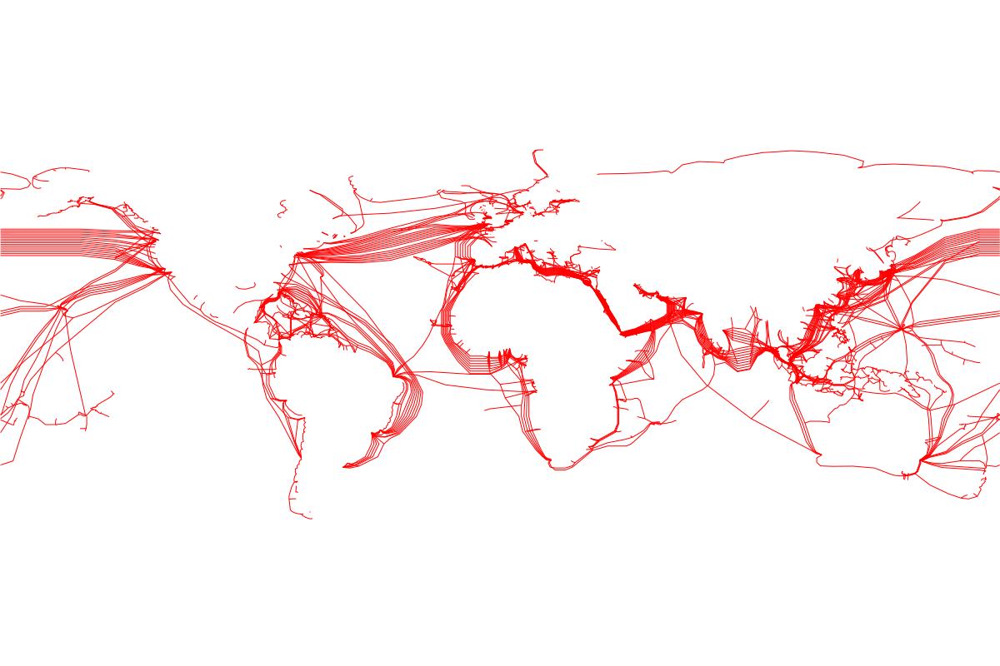

<body style="margin: 0; cursor: grab;">
<div id="globe-container"></div>
<!-- via https://github.com/vasturiano/globe.gl -->
<script src="internet-map-assets/globe.gl.min.js"></script>
<script src="internet-map-assets/three.min.js"></script>
<script src="internet-map-assets/TrackballControls.js"></script>
<!--  -->
<svg xmlns="http://www.w3.org/2000/svg" version="1.1" baseProfile="tiny" width="2400" height="1600" viewBox="0 0 2400 1600"></svg>
<script src="/core/utils.js"></script>
<!-- <script src="/netitor.min.js"></script> -->
<script>

  // const n = new Netitor({ ele: document.createElement('div') })
  const clr1 = parent.window.utils.getVal('--netizen-tag')
  const clr2 = parent.window.utils.getVal('--netizen-meta')
  let globe1, globe2, renderer, scene, camera, controls

  function canvasTexture (callback) {
    const svg = document.querySelector('svg')
    createSVG(svg, clr1)
    const svgData = (new XMLSerializer()).serializeToString(svg)
    const img = document.createElement('img')
    img.addEventListener('load', () => {
      const off = 1
      const canvas = document.createElement('canvas')
      // const img = document.querySelector('img')
      canvas.width = img.width - off * 2
      canvas.height = img.height
      const ctx = canvas.getContext('2d')
      ctx.drawImage(img, -off, 0)
      // document.body.appendChild(canvas)
      // console.log(canvas);
      callback(canvas)
    })
    img.src = `data:image/svg+xml;base64,${window.btoa(unescape(encodeURIComponent(svgData)))}`
    svg.style.display = 'none'
  }

  function setup () {
    scene = new THREE.Scene()
    camera = new THREE.PerspectiveCamera(75, window.innerWidth/window.innerHeight, 0.1, 1000)

    renderer = new THREE.WebGLRenderer({antialiasing:true})
    renderer.setPixelRatio( window.devicePixelRatio * 1.5 )
    renderer.setClearColor(0xffffff, 0)
    renderer.setSize(window.innerWidth, window.innerHeight)
    document.body.appendChild(renderer.domElement)
    document.body.style.margin = 0

    controls = new THREE.TrackballControls(camera, renderer.domElement)
    controls.rotateSpeed = 1.0
    controls.noZoom = true
    controls.noPan = true

    canvasTexture(canvas => {
      const texture = new THREE.Texture(canvas)
      texture.needsUpdate = true

      const geometry = new THREE.SphereBufferGeometry(1, 64, 32)
      const materials = [
        new THREE.MeshBasicMaterial({ color: clr2, transparent: true, opacity: 0.15 }),
        new THREE.MeshBasicMaterial({ map: texture, transparent: true })
      ]
      materials[1].map.minFilter = THREE.LinearFilter

      globe1 = new THREE.Mesh(geometry, materials[0])
      globe1.scale.set(0, 0, 0)
      scene.add(globe1)
      globe2 = new THREE.Mesh(geometry, materials[1])
      globe2.scale.set(0, 0, 0)
      scene.add(globe2)
    })

    camera.position.z = 3
  }

  function draw () {
    requestAnimationFrame(draw)

    if (globe1) {


      if (globe2.scale.x < 1.75) {
        const x = globe2.scale.x + 0.1
        globe2.scale.set(x, x, x)
      } else {
        if (globe1.scale.x < 1.73) {
          const x = globe1.scale.x + 0.08
          globe1.scale.set(x, x, x)
        }
      }

      globe1.rotation.y += 0.01
      globe2.rotation.y = globe1.rotation.y
    }

    controls.update()

    renderer.render(scene, camera)
  }

  window.addEventListener('load', setup)
  window.addEventListener('load', draw)

  function createSVG (svg, c) {
    svg.innerHTML = `<g id="g3012" transform="matrix(2.0152647,0,0,2.0127806,-8.7647802,-2.02832)"><g stroke="#000000" stroke-width="0.98" fill="none" id="g3010"><path stroke="${c}" d="m 1153.35,430.05 -1.49,4.46 -0.09,2.05" id="path2" /><path stroke="${c}" d="m 1138.47,424.11 v -1.48 l 0.36,-1.87" id="path4" /><path stroke="${c}" d="m 1125.82,412.63 3.73,7.03 8.92,4.45 14.88,5.94 14.87,3.71 3.57,0.22" id="path6" /><path stroke="${c}" d="m 720.95,288.2 0.6,0.02" id="path8" /><path stroke="${c}" d="m 659.71,242.24 -0.95,0.88 v 0.76 l 0.37,2.34 0.37,1.98 0.67,0.47 -0.67,-0.07 h -2.23 l -1.05,0.28 -0.62,1.33 -1.12,1.63 -0.26,0.53 -1.04,0.78 -2.61,1.05 -3.14,0.53 0.91,0.73 0.7,0.28 -0.42,0.49 -1.02,0.72 -2.48,1.2" id="path10" /><path stroke="${c}" d="m 335.26,351.27 1.45,1.3 -0.37,2.01 -1.11,2.02 -2.98,2.03 -7.44,0.68 -5.2,3.41 -2.23,4.13 -0.75,4.17 -7.06,12.7 -1.12,1.42 -1.31,1.24" id="path12" /><path stroke="${c}" d="m 169.22,259.13 -0.59,-0.09 0.18,-0.28 -0.18,-0.37 0.21,-0.35" id="path14" /><path stroke="${c}" d="m 187.41,272.97 -0.01,0.08 0.19,0.1" id="path16" /><path stroke="${c}" d="m 174.5,265.61 0.45,-0.02 0.6,-0.01" id="path18" /><path stroke="${c}" d="M 169.19,258.84 169,258.92" id="path20" /><path stroke="${c}" d="m 163.9,261.32 0.63,0.12 h 2.98 l 0.74,0.11 V 261 l 0.38,-0.22 0.22,-0.23 0.33,-0.21 0.24,-0.3" id="path22" /><path stroke="${c}" d="m 169.42,260.04 -0.06,-0.64 -0.14,-0.27" id="path24" /><path stroke="${c}" d="m 177.9,265.31 -0.09,-0.02 -0.23,0.31 -0.53,0.67 -0.37,-0.01 -0.16,-0.1 -0.04,-0.19 -0.07,-0.02 0.11,-0.08 -0.97,-0.29 -0.28,-0.15 0.05,-0.41 -0.17,-0.49 0.01,-0.17 -0.03,-0.46 v -0.68 l -0.18,-0.45 -0.38,-0.09 -0.74,-0.57 h -0.74 l -0.35,-0.34 -0.02,0.23 -0.38,-0.11 -0.18,-0.23 -0.58,-0.28 -0.72,-0.6 -0.75,-0.44 -0.69,-0.3" id="path26" /><path stroke="${c}" d="m 181.01,265.25 -0.5,0.11 h -0.74 l -0.37,-0.34 h -0.37 l -0.38,0.23 -0.37,0.23 -0.7,0.12" id="path28" /><path stroke="${c}" d="m 183.22,271.46 0.41,0.36" id="path30" /><path stroke="${c}" d="m 187.34,272.68 -0.21,0.14" id="path32" /><path stroke="${c}" d="m 186.47,272.33 -0.2,0.19 -0.11,0.12 -0.07,0.12 0.55,-0.04 -0.16,0.22 0.37,-0.06 0.18,0.17 0.38,-0.08 -0.28,-0.16 -0.05,-0.11" id="path34" /><path stroke="${c}" d="m 190.63,275.83 -0.31,-0.27 -0.62,0.01 -0.27,-0.34 -0.78,0.01 -0.81,-0.31 -0.09,-0.16 0.06,-0.07 -0.77,-0.53 -0.4,-0.5 -0.45,-0.31 -0.21,-0.35 0.17,0.01 0.32,0.03 0.38,-0.17" id="path36" /><path stroke="${c}" d="m 193.04,275.54 -1.54,-0.08 -0.87,0.37" id="path38" /><path stroke="${c}" d="m 922.04,420.9 5.21,-3.33 3.52,-1.06" id="path40" /><path stroke="${c}" d="m 911.63,422.38 -5.21,-7.4 -11.9,-3.68 -17.85,-4.41 -7.43,-8.04 -3.99,-3.66" id="path42" /><path stroke="${c}" d="m 876.67,406.89 v -17.45 l -1.54,-9.61" id="path44" /><path stroke="${c}" d="m 820.15,379.45 2.97,-11.67 4.47,-4.14 2.89,-0.77" id="path46" /><path stroke="${c}" d="m 778.99,381.86 2.86,1.86 19.71,1.42 18.59,-5.69 14.13,2.84" id="path48" /><path stroke="${c}" d="m 840.9,375.31 -6.62,6.98 -2.79,12.28 5,13.66 9.69,11.43 12.64,8.65 4.47,1.74 4.46,1.24 14.87,12.64 14.88,-2.98 8.92,-15.61 5.21,-2.96 3.72,-2.96 6.69,1.48 2.61,2.22 4.83,4.45 5.21,4.46 2.97,1.11 1.76,0.82 2.18,1.04 1.01,-1.05" id="path50" /><path stroke="${c}" d="m 960.65,367.35 0.44,2.86 1.46,2.36" id="path52" /><path stroke="${c}" d="m 1002.09,339.06 0.28,-0.38 0.73,-0.04" id="path54" /><path stroke="${c}" d="m 1001.92,309.65 0.08,2.31 -0.71,2.35" id="path56" /><path stroke="${c}" d="m 1187.2,224.38 -0.22,0.05 -0.24,-0.02 3.8,1.46 3.72,1.63 0.74,0.65" id="path58" /><path stroke="${c}" d="M 5,228.15 8.05,230.84 5,235.12" id="path60" /><path stroke="${c}" d="m 1195,235.12 -1.41,2.04 -21.32,16.41 -15.95,5.9 -28.26,4.88 -3.63,-1.23" id="path62" /><path stroke="${c}" d="m 711.1,323.25 1.21,0.78 3.71,1.74 1.28,0.57" id="path64" /><path stroke="${c}" d="m 634.96,243.12 1.11,0.38 0.88,0.05" id="path66" /><path stroke="${c}" d="m 633.84,243.69 -0.73,-0.62" id="path68" /><path stroke="${c}" d="m 630.12,245.43 -1.17,-0.34" id="path70" /><path stroke="${c}" d="m 627.52,246.87 -1.09,-0.7" id="path72" /><path stroke="${c}" d="m 621.57,246.88 0.86,-0.45" id="path74" /><path stroke="${c}" d="m 635.37,241.82 -0.43,0.52 0.02,0.78 -1.12,0.57 -1.12,0.58 -1.48,0.77 -1.12,0.39 -1.49,0.98 -1.11,0.46 -1.49,0.2 -3.28,0.05 -1.18,-0.24 -1.86,-1.1 0.09,-0.53 -1.58,-0.21 -0.74,-0.51 v -0.58 l 0.74,-0.58 0.72,0.07" id="path76" /><path stroke="${c}" d="m 635.53,240.31 -0.57,0.54 v 0.37 l 0.41,0.6" id="path78" /><path stroke="${c}" d="m 334.07,365.17 1.16,2.61 2.23,3.24 5.57,4.08 5.07,1.54 4.98,2.81 8.92,2.49 19.34,6.07 13.39,2.39 3.26,-0.39" id="path80" /><path stroke="${c}" d="m 681.5,239.35 -0.8,0.25 -1.86,0.19 -2.23,0.18 -1.49,0.19 -4.46,0.75 -3.72,0.37 -4.47,0.38 -1.85,0.28 -1.31,0.07" id="path82" /><path stroke="${c}" d="m 1015.11,466.66 0.65,-0.7 2.23,-0.19 1.48,-0.49 1.49,0.37 0.75,4.41 -1.12,2.93 -2.6,3.41" id="path84" /><path stroke="${c}" d="m 619.71,297.35 -6.32,3.22 -4.47,1.39 -1.75,-0.39" id="path86" /><path stroke="${c}" d="m 623.8,296.53 0.74,1.92 3.27,1.35 h 1.08" id="path88" /><path stroke="${c}" d="m 629.55,291.57 -0.17,1.19 -1.49,1.07 -4.09,2.7 -2.6,0.82 h -1.49 l -1.95,-2.09" id="path90" /><path stroke="${c}" d="m 967.41,412.77 5.95,6.15 4.46,2.35 1.94,0.81" id="path92" /><path stroke="${c}" d="m 978.94,373.35 -7.07,-2.45 h -4.46 l -1.49,0.47 -1.15,0.83" id="path94" /><path stroke="${c}" d="m 979.31,381.77 7.44,0.88 9.67,0.35 1.42,0.78" id="path96" /><path stroke="${c}" d="m 980.06,377.99 6.69,0.75 9.67,3.91 1.42,0.09" id="path98" /><path stroke="${c}" d="m 977.36,364.71 0.84,4.92 0.74,3.72 1.12,4.64 -0.75,3.78 -4.46,14.9 -3.35,8.75 -4.09,7.35 -10.41,8.13 -2.98,1.85 -4.46,2.59 -2.79,3.76 -1.44,4.42 -0.6,0.55 -0.32,0.13 -0.68,-0.42" id="path100" /><path stroke="${c}" d="m 315.89,359.54 v 2.04 l -1.86,5.62 -0.85,1.44" id="path102" /><path stroke="${c}" d="m 329.62,351.97 -4.81,3.96 -5.2,2.7 -3.72,0.91 h -7.44 l -11.9,2.73 -8.92,5.51 -5.43,7.14" id="path104" /><path stroke="${c}" d="m 996.47,351.93 1.06,1.31 2.24,1.67 1.23,0.86" id="path106" /><path stroke="${c}" d="m 991.14,357.52 0.44,0.66 2.98,2.38 0.71,-0.11 0.4,0.79 1.12,1.2 0.47,-0.09" id="path108" /><path stroke="${c}" d="m 636.07,302.61 2.6,-0.93 1.12,-0.56 0.63,-0.82" id="path110" /><path stroke="${c}" d="m 629.55,291.57 1.32,1.19 1.48,3.23 0.75,2.18 1.86,2.95 1.11,1.49 2.6,4.54 1.12,4.91 0.37,1.17 1.46,0.68" id="path112" /><path stroke="${c}" d="m 843.43,405.08 0.89,0.22 5.58,0.49 2.21,-0.27" id="path114" /><path stroke="${c}" d="m 843.43,405.08 0.52,0.58 -0.74,3.67 -1.12,1.48 -0.62,0.21" id="path116" /><path stroke="${c}" d="m 840.35,399.73 -1.05,0.64 -0.69,-0.34 0.32,0.88 0.02,1.3 0.35,0.16 -0.18,0.37 -0.47,-0.28 0.09,0.28 0.75,0.73 0.63,-0.02 0.11,0.75 2.23,1.1 0.97,-0.22 0.52,-0.51 -0.04,-1.57 -0.38,-0.37 -0.37,0.37 -2.77,-1.4 0.35,-0.06 -0.17,-0.28 0.55,0.1 0.6,-0.45 v -0.36 l -0.39,-0.14 -0.36,-0.59 z" id="path118" /><path stroke="${c}" d="m 569.91,311.29 0.34,1.06 -0.74,2.95 0.74,1.08 h 0.37 l 0.38,-0.56" id="path120" /><path stroke="${c}" d="m 569.15,310.48 -4.85,1.29 -10.41,8.91 -7.44,5.09 -2.05,4.14 -0.29,0.54" id="path122" /><path stroke="${c}" d="m 591.86,316.59 -0.04,1.29 -0.37,2.4 -1.16,1.43" id="path124" /><path stroke="${c}" d="m 591.36,316.85 0.09,1.03 -0.37,2.4 -0.79,1.43" id="path126" /><path stroke="${c}" d="m 634.96,243.5 0.37,-0.38 -0.2,-0.78 -0.64,-0.39 0.47,-0.35 0.45,-0.63 0.1,-0.12 0.02,-0.52" id="path128" /><path stroke="${c}" d="m 626.43,246.17 1.09,0.24 1.11,-0.39 0.38,-0.39 -0.06,-0.54 1.17,-0.05 1.12,-0.38 1.48,-0.78 0.39,-0.81 0.73,0.24 1.12,0.19 1.11,0.1 0.97,0.02" id="path130" /><path stroke="${c}" d="m 618.94,243.44 -0.16,0.06 -0.35,0.05 -0.58,0.4 v 0.58 l 0.74,0.51 1.21,0.21 0.28,0.53 1.49,0.71 0.86,-0.06 0.32,0.5 2.91,-0.06 0.77,-0.7" id="path132" /><path stroke="${c}" d="m 617.63,238.75 -0.34,-0.04 -0.18,0.09 v 0.56 l 0.37,0.18 0.18,0.28 v 0.19 l 0.56,0.37 v 0.37 l -0.37,0.19 -0.37,0.28 0.03,0.65 -0.03,0.2 0.03,0.2 0.34,0.56 0.74,0.19 0.38,0.19 -0.03,0.23" id="path134" /><path stroke="${c}" d="m 1009.36,404.48 0.07,0.57 -0.18,0.92 0.24,0.42" id="path136" /><path stroke="${c}" d="m 1003.49,415.54 -0.38,0.06 -0.74,-0.37 v -1.48 l 0.74,-1.47 1.53,-1.05 0.88,0.45" id="path138" /><path stroke="${c}" d="m 1009.85,403.97 0.7,0.35 1.49,0.37 0.63,0.03" id="path140" /><path stroke="${c}" d="m 1007.69,410.06 -0.49,-0.24 -1.48,0.74 -0.2,1.12" id="path142" /><path stroke="${c}" d="m 1007.69,410.06 0.26,-0.6 0.74,-0.37 2.79,0.73 0.5,0.6" id="path144" /><path stroke="${c}" d="m 1009.6,406.56 0.95,1.06 1.3,2.2 0.13,0.6" id="path146" /><path stroke="${c}" d="m 1009.43,398.9 0.24,1.33 0.88,0.8 0.65,0.8" id="path148" /><path stroke="${c}" d="m 1012.3,408.05 0.11,0.3 0.18,0.33" id="path150" /><path stroke="${c}" d="m 1016.67,405.79 -0.54,0.18 -0.19,0.37 0.13,0.63" id="path152" /><path stroke="${c}" d="m 1009.56,398.35 -0.13,-0.95 0.12,-0.96" id="path154" /><path stroke="${c}" d="m 1011.87,398.47 -0.58,0.02 -1.11,-0.37 -0.62,0.23" id="path156" /><path stroke="${c}" d="m 1011.2,401.83 -0.31,0.4 -0.71,1.36 -0.33,0.38" id="path158" /><path stroke="${c}" d="m 1014.8,406.03 -1.28,-0.24 -0.74,-0.37 -0.11,-0.7" id="path160" /><path stroke="${c}" d="m 1007.14,408.14 0.06,0.58 0.19,0.78 0.3,0.56" id="path162" /><path stroke="${c}" d="m 1005.76,400.08 0.7,-0.14 h 1.11 l 1.86,-1.04" id="path164" /><path stroke="${c}" d="m 1007.95,403.72 0.37,0.11 0.36,0.24" id="path166" /><path stroke="${c}" d="m 1005.14,402.93 0.58,0.21 0.76,0.06" id="path168" /><path stroke="${c}" d="m 1003.1,398.87 0.02,0.06" id="path170" /><path stroke="${c}" d="m 1003.55,396.71 0.31,-0.4 0.55,0.24 v 0.54 l 0.19,1.4 1.16,1.59" id="path172" /><path stroke="${c}" d="m 1003.55,396.71 0.12,-0.4 2.23,-1.82 0.52,-0.9" id="path174" /><path stroke="${c}" d="m 1002,392.31 0.55,1.46 0.35,0.21 0.21,1.24 0.37,1.09 0.07,0.4" id="path176" /><path stroke="${c}" d="m 1000.23,393.3 0.84,0.47 0.55,0.72 -0.11,0.76 0.49,0.69 0.3,0.67 0.61,1.45 0.19,0.81" id="path178" /><path stroke="${c}" d="m 588.61,280.7 -0.14,0.06 0.02,0.1" id="path180" /><path stroke="${c}" d="m 683.17,314.28 -0.43,0.03 -0.31,0.29" id="path182" /><path stroke="${c}" d="m 683.72,314.61 -0.23,-0.3 -0.17,-0.03" id="path184" /><path stroke="${c}" d="m 683.43,315.66 0.61,-0.46 -0.01,-0.59" id="path186" /><path stroke="${c}" d="m 683.88,315.73 -0.02,-0.09 -0.26,0.01" id="path188" /><path stroke="${c}" d="m 683.97,317.79 0.45,-0.51 v -0.6 l -0.45,-0.54" id="path190" /><path stroke="${c}" d="m 689.23,316.82 -0.59,-0.31 -0.88,-0.03 -1.49,0.9 -1.11,0.5 -0.37,0.3 -0.61,0.05" id="path192" /><path stroke="${c}" d="m 692.95,318.01 -0.73,-0.13 -1.85,-0.6 -0.65,-0.5" id="path194" /><path stroke="${c}" d="m 686.3,321.99 0.72,-1 1.86,-0.41 0.74,-0.9 1.49,-0.3 0.95,0.23" id="path196" /><path stroke="${c}" d="m 666.48,308.18 0.27,-0.12 0.28,-0.09" id="path198" /><path stroke="${c}" d="m 665.64,307.33 h 0.33 l 0.21,-0.13" id="path200" /><path stroke="${c}" d="m 140.73,310.6 36.82,-28.24 8.93,-3.51 1.48,-0.24 2.98,0.49 2.97,0.13 1.81,0.85" id="path202" /><path stroke="${c}" d="m 5,306.01 h 95.2 l 40.53,4.59 30.87,8.27 22.31,4.24 7.37,-0.83" id="path204" /><path stroke="${c}" d="m 1073.02,326.18 -5.95,-2.46 -4.42,-0.96" id="path206" /><path stroke="${c}" d="m 1195,306 h -23.8 l -41.65,5.77 -35.7,9.52 -20.83,4.89 -8.92,2.48 -5.95,2.5 -2.98,-1.88 -2.73,-4.41" id="path208" /><path stroke="${c}" d="m 1028.26,319.4 0.51,1.48 1.86,4.07 -0.41,2.36" id="path210" /><path stroke="${c}" d="m 679.37,313.13 h 0.95 l 1.49,0.59 0.62,0.88" id="path212" /><path stroke="${c}" d="m 400.93,285.56 1.23,-1.17 1.49,-2.03 0.38,-1.46" id="path214" /><path stroke="${c}" d="m 400.11,283.35 0.57,-0.32 2.23,-2.52 0.77,-0.42" id="path216" /><path stroke="${c}" d="m 381.62,288.72 0.46,0.37 2.23,0.13 1,0.1" id="path218" /><path stroke="${c}" d="m 640.29,456.74 -0.87,0.24 -0.37,0.55 v 1.11 l 1.11,0.19 0.67,-0.16" id="path220" /><path stroke="${c}" d="m 640.13,455.66 -1.46,1.13 -0.74,0.74 v 2.96 l 1.12,2.21 h 1.86 l 1.62,-0.42" id="path222" /><path stroke="${c}" d="m 373.5,227.65 0.03,0.51 1.49,0.66 5.57,2.71 4.47,1.38 3.72,2.81 29.75,22.01 10.41,12.92 -1.49,6.24 -4.46,2.34 -1.36,-0.21" id="path224" /><path stroke="${c}" d="m 599.3,307.26 2.19,0.75 h 5.95 l 0.7,-0.21" id="path226" /><path stroke="${c}" d="m 598.75,307.93 2.74,0.65 1.48,0.77 1.72,0.41 1.26,-0.12 2.23,-1.06 1.44,-1.15" id="path228" /><path stroke="${c}" d="m 385.53,379.82 -1.22,-0.37 -1.48,-0.71 -0.27,-0.26 -0.11,0.62 -1.11,0.35 h -0.75 l -0.37,-0.17 -0.46,-0.35 -0.65,0.52 h -0.75 l -0.74,-0.35 -0.19,-0.71 v -0.71 l 0.59,-0.22 -0.97,-0.77 -2.03,-0.24 -0.98,0.27" id="path230" /><path stroke="${c}" d="m 1079.2,563.38 -0.54,1.46 v 0.87 l 2.17,1.84 2.61,0.29 4.46,-0.58 5.95,-1.74 2.15,-1.73 3.55,-10.3 0.27,-3.16 2.95,-2.28 5.21,-4.39 2.23,-10.28 -1.49,-2.61 -2.89,-1.6" id="path232" /><path stroke="${c}" d="m 660.84,305.15 0.56,-0.66 1.82,-0.85 0.83,-0.09" id="path234" /><path stroke="${c}" d="m 569.13,310.48 -0.49,0.26 0.07,0.56 0.87,0.84 0.3,0.65 0.8,0.11" id="path236" /><path stroke="${c}" d="m 337.09,408.74 0.37,2.56 1.48,2.94 -0.74,7.4 -7.44,8.9 -2.97,5.95 0.74,8.43 2.23,1.61 1.97,-0.46" id="path238" /><path stroke="${c}" d="m 335.97,398.85 0.74,-0.73 2.98,-0.48 11.15,2.91 1.97,1.66" id="path240" /><path stroke="${c}" d="m 329.62,351.97 -4.81,4.63 -5.2,3.39 -4.84,6.86 1.12,4.17 2.97,4.2 2.23,5.65 4.47,4.27 4.46,7.19 5.95,6.52 0.37,6.57 -0.46,2.04" id="path242" /><path stroke="${c}" d="m 976.34,381.82 10.41,1.18 9.67,0.36 1.31,0.09" id="path244" /><path stroke="${c}" d="m 957,419.05 3.72,5.55 2.23,4.46 1.86,2.97 -0.03,1.32" id="path246" /><path stroke="${c}" d="m 977.08,378.04 -9.67,-0.12 -3.64,-0.34" id="path248" /><path stroke="${c}" d="m 949.56,423.49 -3.02,-2.96 -5.91,-5.32 -4.46,-0.41 -3.63,0.18" id="path250" /><path stroke="${c}" d="m 942.61,433.95 0.63,0.56 1,0.03 0.4,-1.02 1.2,-4.46 3.72,-5.57 4.46,-2.22 2.98,-2.22 6.69,-6.28 4.09,-7.35 3.35,-8.75 5.21,-14.85 0.74,-3.78 -0.37,-8.41 0.79,-4.72" id="path252" /><path stroke="${c}" d="m 617.85,255.39 -0.37,0.1 -0.36,0.01" id="path254" /><path stroke="${c}" d="m 627.79,255.08 -2.5,0.17 -7.44,0.14 -2.93,-0.21" id="path256" /><path stroke="${c}" d="m 1175.95,575.02 0.64,0.1 0.6,-0.22" id="path258" /><path stroke="${c}" d="m 676.15,317.64 0.83,0.93 0.74,0.61 0.7,1.8 -1.07,-1.8 -0.74,-0.61 z" id="path260" /><path stroke="${c}" d="m 677.23,312.85 -0.06,0.68 0.18,0.29 0.37,0.3 1.49,3.56 1.49,2 1.71,1.66 -1.34,-1.66 -1.49,-2 -1.49,-3.56 -0.55,-0.3 -0.19,-0.29 z" id="path262" /><path stroke="${c}" d="m 817.36,383.98 -0.93,-12.96 2.23,-9.66 2.91,-5.26" id="path264" /><path stroke="${c}" d="m 832.23,394.57 2.79,-12.28 5.5,-6.98" id="path266" /><path stroke="${c}" d="m 846.92,419.66 -1.48,2.72 -2.35,2.07" id="path268" /><path stroke="${c}" d="m 897.5,435 2.97,-13.36 1.49,-14.75 4.46,-17.45 v -9.99 l -2.33,-11.92" id="path270" /><path stroke="${c}" d="m 934.69,431.66 0.74,-1.86 -0.1,-0.52" id="path272" /><path stroke="${c}" d="m 863.29,428.56 0.74,-0.74 2.23,-7.42 -0.03,-1.67" id="path274" /><path stroke="${c}" d="m 747.26,402.13 -2.97,-1.44 -1.66,-0.65" id="path276" /><path stroke="${c}" d="m 709.36,344.6 0.9,0.68 1.49,2.63 1.76,2.66 1.4,2.67 3.35,5.39 4.09,6.84 2.6,5.55 4.46,7.02 3.35,5.68 5.02,5.72 1.67,2.89 2.14,2.89 1.02,0.72 0.28,0.73 0.93,0.73 3.44,4.73 2.98,0.36 10.41,-2.55 13.39,-3.27 4.46,-0.73 4.46,-0.72 11.9,-5.78 22.5,-5.46 14.87,10.59 4.83,13.39 7.25,8.84 2.61,2.86 11.9,7.17 4.47,1.73 4.46,1.24 14.87,8.18 14.88,-2.98 8.92,-11.14 5.21,-2.96 3.72,-2.22 6.69,1.48 1.49,0.74 2.6,2.22 4.09,4.45 4.47,4.09 2.97,1.67 1.76,0.35 2.18,1.14 0.52,-0.23 0.49,-0.64" id="path278" /><path stroke="${c}" d="m 706.72,335.04 -1.11,1.4 v 2.51 l 0.75,1.45 0.37,1.84 2.63,2.36" id="path280" /><path stroke="${c}" d="m 706.72,335.04 -0.74,1.4 v 2.51 l 0.56,1.45 0.56,1.84 2.26,2.36" id="path282" /><path stroke="${c}" d="m 617.76,295.26 -0.28,5.12 1.86,10.22 2.97,2.34 7.44,1.77 h 4.46 l 2.61,0.59 2.23,5.99 8.55,6.13 7.44,3.11 8.92,-1.25 8.93,-0.57 10.41,2.45 8.92,2.21 10.42,-0.11 3.34,0.95 0.74,0.83" id="path284" /><path stroke="${c}" d="m 718.26,358.63 3.71,-0.79 2.98,0.11 1.01,0.85" id="path286" /><path stroke="${c}" d="m 950.01,458.45 -0.54,-0.33 -0.45,-0.68" id="path288" /><path stroke="${c}" d="m 947.63,445.2 -0.67,0.59 -0.29,0.17" id="path290" /><path stroke="${c}" d="m 1063.91,307.17 -2.79,-1.17 -0.74,-1.13 -1.49,-5.6 v -2.19 l 0.75,-1.09 4.46,-1.89 h 1.49 l 1.66,1.93" id="path292" /><path stroke="${c}" d="m 187.44,275.62 2.75,-0.4 2.85,0.32" id="path294" /><path stroke="${c}" d="m 1070.05,316.48 0.74,2.39 -0.74,3.63 -4.46,3.68 -7.44,2.48 -2.98,-1.24 -2.73,-2.55" id="path296" /><path stroke="${c}" d="m 1195,274.46 h -23.8 l -41.65,9.93 -35.7,21.61 -23.8,10.48 -3.72,0.8 -1.18,-0.27" id="path298" /><path stroke="${c}" d="m 187.44,275.62 -0.04,0.45 -0.92,0.49 -1.49,0.49 -43.14,-0.65 -41.65,-1.94 H 5" id="path300" /><path stroke="${c}" d="m 1023.94,421.64 -6.32,-2.96 -2.4,-3.71" id="path302" /><path stroke="${c}" d="m 956.26,450.86 v 2.72 l -1.49,2.22 -1.64,2.97" id="path304" /><path stroke="${c}" d="m 988.01,458.02 4.69,-2.22 2.02,-0.4" id="path306" /><path stroke="${c}" d="m 1009.06,461.23 5.21,3.44 0.84,2.03" id="path308" /><path stroke="${c}" d="m 1019.47,431.53 -2.97,-0.24 -3.72,1.11 -0.12,1.04" id="path310" /><path stroke="${c}" d="m 944.89,434.76 h -0.75 l -0.31,0.08" id="path312" /><path stroke="${c}" d="m 1022.45,453.83 -13.39,7.4 h -11.9 l -9.15,-3.21 -2.64,-1.39 -6.98,0.65 -8,-2.22 -8.93,-5.19 -5.2,0.99 -2.79,-2.47 -0.55,-2.98 -1.13,-5.94 -3.72,-3.72 -1.48,-0.37 -0.75,-0.56 -0.95,-0.06 -1.6,-0.67" id="path314" /><path stroke="${c}" d="m 1195,372.42 -95.2,12.72 -16.36,6.1 -2.98,2.17 -1.49,0.72 -0.67,-0.27 -2.3,2.08 -22.31,9.48 -13.39,5.88 -16.36,10.34 -4.47,9.89 -1.48,6.45 v 4.46 l 0.41,1.72 2.19,2.74 0.74,2.23 1.12,4.7 v 5.92 l -1.12,5.9 1.12,4.41 3.72,3.42 3.35,5.28 1.86,0.73 1.13,0.09" id="path316" /><path stroke="${c}" d="m 5,372.42 23.8,-5.57 h 29.75 l 7.8,-2.75 27.9,-14.86 17.85,-6.57 29.75,-5.17 35.7,-8.84 17.85,-0.62 h 5.95 l 5.95,-1.86 1.32,0.26" id="path318" /><path stroke="${c}" d="m 629.75,312.94 1.86,1.18 1.01,1.03" id="path320" /><path stroke="${c}" d="m 677.35,324.23 2.97,-1.22 1.55,-0.57" id="path322" /><path stroke="${c}" d="m 639.05,315.3 0.82,-1.04 1.75,-0.35" id="path324" /><path stroke="${c}" d="m 626.77,312.06 -3.71,2.55 -1.38,1.44" id="path326" /><path stroke="${c}" d="m 607.44,314.71 1.86,0.59 0.73,1.55" id="path328" /><path stroke="${c}" d="m 616.36,302.24 h -7.44 l -1.75,-0.67" id="path330" /><path stroke="${c}" d="m 620.08,310.6 -2.23,-10.22 -0.09,-5.12 -1.03,5.12 -0.37,1.86 -0.37,3.76 -0.37,4.6" id="path332" /><path stroke="${c}" d="m 592.56,319.78 -0.74,1.41 -1.52,0.92" id="path334" /><path stroke="${c}" d="m 585.13,320.08 -0.75,0.6 -2.2,0.13" id="path336" /><path stroke="${c}" d="m 568.76,312.35 1.12,0.59 0.8,-0.04" id="path338" /><path stroke="${c}" d="m 569.15,310.48 -0.39,1.87 -0.74,2.95 0.37,1.78 1.86,1.19 10.43,0.65 1.1,-0.15 0.77,-0.38 2.58,1.69 7.43,-0.3 14.88,-5.07 8.18,-4.11 h 4.46 l 6.69,1.46 2.98,0.88 h 4.46 l 1.86,1.18 2.98,1.18 3.9,4.18 4.65,2.41 7.44,1.22 8.92,-1.22 8.93,1.27 4.46,1.07 5.95,1.33 11.9,4.66 8.92,3.04 2.24,0.95 0.36,0.83" id="path340" /><path stroke="${c}" d="m 724.95,359.54 0.56,-0.23 0.45,-0.51" id="path342" /><path stroke="${c}" d="m 717.7,350.57 v -1.77 l 0.3,-0.85" id="path344" /><path stroke="${c}" d="m 729.52,367.36 -1.22,-1.89 -3.35,-5.93 -4.09,-6.3 -3.16,-2.67 -3.41,-4.81 0.64,-3.55 0.61,-0.64" id="path346" /><path stroke="${c}" d="m 580.8,257.03 0.61,-0.62 1.48,-0.63 1.06,-0.01" id="path348" /><path stroke="${c}" d="m 581.69,257.74 0.83,-0.15 0.37,-0.21 0.2,-0.3" id="path350" /><path stroke="${c}" d="m 944.27,434.45 -0.44,0.39" id="path352" /><path stroke="${c}" d="m 962.21,449.87 -4.47,3.71 -1.48,2.22 -3.13,2.97" id="path354" /><path stroke="${c}" d="m 1027.66,467.12 -0.75,6.36 2.61,4.92 1.86,0.72 1.13,0.46" id="path356" /><path stroke="${c}" d="m 1168.22,593.51 -2.23,-2.04 -2.38,-1.44" id="path358" /><path stroke="${c}" d="m 1148.89,595.53 2.97,-2.02 2.98,-1.27 1.64,-0.45" id="path360" /><path stroke="${c}" d="m 1093.85,566.1 17.85,13.71 22.31,10.63 14.88,5.09 8.92,1 10.41,-3.02 4.47,-8.31 -2.03,-2.93" id="path362" /><path stroke="${c}" d="m 1099.82,550.33 0.47,3.16 -3.55,10.3 -2.89,2.31 -5.95,1.74 -4.46,0.58 -2.98,-0.58 -2.17,-2.13 v -0.87 l 0.91,-1.46" id="path364" /><path stroke="${c}" d="m 1125.09,522.8 -2.98,2.67 -13.39,3.32 -2.89,0.38" id="path366" /><path stroke="${c}" d="m 1141.45,483.65 -8.93,17.13 -7.43,22.02 -5.95,10.58 -7.44,10.91 -8.93,5.31 -2.95,0.73" id="path368" /><path stroke="${c}" d="m 81.61,378.04 v -2.82 l 1.48,-2.1 1.8,-0.99" id="path370" /><path stroke="${c}" d="m 91.28,380.4 -9.67,-2.36 -2.23,-2.12 -1.86,-6.29 0.01,-1.79" id="path372" /><path stroke="${c}" d="m 1195,458.27 -53.55,25.38 -29.75,7.19 -8.93,-2.86 -11.9,-8.67 -11.9,-6.32 -8.92,-2.93 -11.9,1.22 -13.39,-1.22 -10.41,-1.47 -6.69,-1.47 -3.72,-2.94 -4.47,-1.48 -10.41,-2.21 h -11.9 l -9.15,-3.21 -2.64,-1.39 -6.75,0.65 -8.23,-2.22 -8.18,-4.45 -2.24,-1.48 -9.29,-8.92 -4.09,-3.17 -1.49,-0.92 -0.37,-0.38 -0.36,-0.55 -1.08,-0.36" id="path374" /><path stroke="${c}" d="m 209.13,325.8 -1.83,0.54 -5.95,2.01 -23.8,13.02 -35.7,17.26 L 112.1,373.35 91.28,380.4 76.4,396.19 34.75,430.54 5,458.27" id="path376" /><path stroke="${c}" d="m 702.64,328.66 1.48,-2.89 3.2,-2.32" id="path378" /><path stroke="${c}" d="m 679.37,320.98 -0.9,-1.2 -2.61,-0.6 -2.97,1.7" id="path380" /><path stroke="${c}" d="m 635.33,301.12 -2.61,1.12 -1.25,0.85" id="path382" /><path stroke="${c}" d="m 649.09,310.51 -2.98,0.87 -1.95,1" id="path384" /><path stroke="${c}" d="m 636.82,302.61 1.85,-0.65 1.86,-0.84 0.78,-1.26" id="path386" /><path stroke="${c}" d="m 632.72,295.99 -1.11,0.54 -0.37,0.73" id="path388" /><path stroke="${c}" d="m 629.01,294.55 0.74,-1.79 -0.2,-1.19" id="path390" /><path stroke="${c}" d="m 715.71,340.52 -0.8,-4.72 0.02,-3.36 -3.37,-1.28 -8.92,-2.5 -19.34,-4.48 -5.95,-1.47 -4.46,-1.83 -13.39,-4.99 -7.44,-2.07 -0.74,-1.27 0.37,-0.59 -1.12,-0.87 -1.48,-0.58 -4.47,-0.58 -4.46,-2.78 -3.34,-4.54 -1.49,-1.49 -1.86,-2.95 -0.75,-2.18 -3.71,-1.44 -5.21,1.17 -2.6,1.09 h -1.49 l -1.95,-1.55" id="path392" /><path stroke="${c}" d="m 807.51,371.02 v -6.92 l -9.67,-5.81 -4.47,1.11 -1.63,0.7" id="path394" /><path stroke="${c}" d="m 782.96,385.86 -1.86,-2.14 -2.11,-1.86" id="path396" /><path stroke="${c}" d="m 747.26,397.76 -2.97,1.27 -1.62,1.16" id="path398" /><path stroke="${c}" d="m 718,347.95 -1.98,-0.48 -1.55,-1.71 0.64,-3.55 0.6,-1.62" id="path400" /><path stroke="${c}" d="m 840.9,375.31 -8.85,-1.84 -11.9,-1.75 -12.64,-0.7 -12.65,9.14 -11.9,5.7 -22.31,8.63 -10.41,2.54 -2.98,0.73 -2.21,-0.57 -1.51,-0.52 -0.28,-0.73 -0.27,-0.72 -0.75,-2.89 -1.67,-2.89 -2.23,-5.72 -7.81,-12.7 -1.12,-1.86 -1.49,-3.69 -4.09,-6.84 -3.34,-5.39 -2.49,-5.29" id="path402" /><path stroke="${c}" d="m 667.79,257.53 -0.85,-1.51 v -3.35 l 0.74,-4.61 2.98,-3.53 2.97,-1.73 2.98,-0.76 2.23,-0.57 1.86,-0.37 2.97,-0.19 7.07,0.37 4.03,0.59" id="path404" /><path stroke="${c}" d="m 626.43,246.15 -0.4,0.72 -3.28,0.45 -7.13,-0.84 -8.93,-7.61 -6.69,-2.07 h -7.44 l -10.41,1.7 -7.44,1.47 -4.46,1.13 -11.9,2.02 -35.7,6.55 -53.55,5.79 -47.6,2.27 -7.44,0.44 -5.95,0.86 -4.46,1.75 -3.06,1.4" id="path406" /><path stroke="${c}" d="m 410.34,409.82 -0.37,1.48 -1.11,2.94 -1.09,1.64" id="path408" /><path stroke="${c}" d="m 416.69,413.82 0.35,2.88 0.58,2.42" id="path410" /><path stroke="${c}" d="m 396.21,403.05 0.56,-1.29 1.3,-0.36 1.17,0.01 0.69,-0.13 0.75,0.48 9.66,8.06 2.98,2.95 3.37,1.05 4.81,-0.44 2.99,0.67 2.22,4.63 0.34,3.36" id="path412" /><path stroke="${c}" d="m 944.36,435 h -0.19 l -0.34,-0.16" id="path414" /><path stroke="${c}" d="m 960.72,448.39 -4.09,5.19 -1.49,2.22 -1.05,2.34" id="path416" /><path stroke="${c}" d="m 1018.4,420.5 -0.78,-0.84 -0.75,-0.98 -1.65,-3.71" id="path418" /><path stroke="${c}" d="m 1015.01,384.67 -6.69,2.14 -5.21,-0.24 -1.29,-0.3" id="path420" /><path stroke="${c}" d="m 1020.96,374.75 -4.46,-6.86 -6.12,-8.05 -4.29,-2.9 -3.47,-0.76" id="path422" /><path stroke="${c}" d="m 1017.99,378.04 16.36,2.83 23.8,5.7 14.87,5.76 2.98,1.08 2.17,0.71" id="path424" /><path stroke="${c}" d="m 942.61,433.95 0.63,0.51 0.62,-0.06 0.41,0.05 0.09,0.55 0.37,0.19 0.37,0.37 1.49,0.56 4.46,3.35 9.67,8.92 2.23,1.48 7.44,3.71 8.46,2.22 7.27,-3.61 2.99,-4.79 0.83,-4.02 2.65,-2.33 3.08,-4.56 0.75,-1.49 2.23,-1.48 11.9,-6.44 7.85,-6.58 5.54,-6.75 -2.98,-14.66 -5.95,-14.42 2.98,-6.63 2.97,-3.29 11.9,-5.12 25.29,-9.64 3.72,-4.06 3.72,-19.71 0.74,-5.06 -0.37,-4.98 -1.3,-1.54 -0.65,-0.94 -0.89,-0.54 -0.47,-0.4" id="path426" /><path stroke="${c}" d="m 605.72,264.93 1.72,-0.51 h 5.2 l 1.49,0.23 1.12,0.32" id="path428" /><path stroke="${c}" d="m 1036.04,295.72 1.28,2.64 2.98,1.65 4.46,0.37 11.16,-4.39 9.67,-8.33 3.72,-0.52 2.23,-0.52 v -1.55 l 0.25,-1.89 0.49,1.89 0.74,1.55 2.98,0.52 14.87,-2.07 16.37,-6.55 17.85,-8.19 1.48,-4.62 -2.14,-2.59 3.63,1.68 7.44,-0.9 20.82,-3.56 18.93,-6.77 19.68,-15.28" id="path430" /><path stroke="${c}" d="m 5,238.29 1.56,-1.13 2.98,-6.32 -4.47,-3.34" id="path432" /><path stroke="${c}" d="m 1195,227.5 -4.46,-1.95 -3.8,-1.14 3.8,0.82 4.46,0.97" id="path434" /><path stroke="${c}" d="m 5,226.2 23.8,0.65 8.93,-2.58 2.97,-4.33 -4.46,-5.25 L 18.39,208.71 5,206.41" id="path436" /><path stroke="${c}" d="m 1195,206.41 -7.44,-1.25 -19.34,-0.5 -5.95,1.49 0.69,1.81 -2.17,-1.81 -32.73,-6.23 -35.7,-2.24 -23.8,-0.87 -22.31,0.87 -11.9,2.7 -8.38,1.19 5.4,-2.1 1.49,-6.02 -23.8,-7.21 -35.7,-4.05 -26.77,-1.27 -17.85,1.27 -16.37,0.98 -25.28,4.14 -19.34,4.93 -1.55,3.15 -5.89,-0.7 -23.8,-0.83 -19.34,3.82 -8.92,7.48 -4.42,2.64" id="path438" /><path stroke="${c}" d="m 803.83,207.8 -3.02,-2.15 -4.46,-0.49 -5.95,0.49 -14.88,1.52 -29.75,1.02 -28.26,0.52 -1.49,0.53 0.05,0.44" id="path440" /><path stroke="${c}" d="m 991.96,505.52 -1.99,-0.88 -9.17,-0.82 h -11.9 l -5.95,2.1" id="path442" /><path stroke="${c}" d="m 605.72,264.93 1.72,-0.06 h 5.2 l 2.31,0.41" id="path444" /><path stroke="${c}" d="m 849.16,419.66 -3.72,3.46 -2.35,1.33" id="path446" /><path stroke="${c}" d="m 934.69,431.29 0.56,-1.49 0.08,-0.52" id="path448" /><path stroke="${c}" d="m 924.27,420.9 2.98,-2.22 3.52,-2.17" id="path450" /><path stroke="${c}" d="m 882.62,435 -5.2,-14.84 -2.98,-7.39 -1.48,-5.88 -3.72,-7.31 -3.99,-4.39" id="path452" /><path stroke="${c}" d="m 863.29,427.82 2.6,-7.42 0.34,-1.67" id="path454" /><path stroke="${c}" d="m 840.9,375.31 -5.13,6.98 -0.93,11.48 4.83,13.65 7.25,8.84 2.24,3.4 9.66,6.43 4.47,1.73 4.46,1.24 14.87,5.94 14.88,-2.97 8.92,-8.91 5.21,-2.96 3.72,-1.85 6.69,1.48 2.23,1.11 2.61,2.22 3.72,4.45 4.09,3.72 2.97,1.11 1.76,0.82 2.18,0.58 0.52,0.18 0.49,-0.03" id="path456" /><path stroke="${c}" d="m 683.3,324.64 -0.74,-1.53 -0.69,-0.67" id="path458" /><path stroke="${c}" d="m 717.42,350.57 0.09,-1.77 0.49,-0.85" id="path460" /><path stroke="${c}" d="m 723.43,358.58 1.52,0.05 1.01,0.17" id="path462" /><path stroke="${c}" d="m 747.26,400.31 -2.97,-0.35 -1.66,0.08" id="path464" /><path stroke="${c}" d="m 778.5,394.13 0.37,-3.97 v -6.44 l 0.12,-1.86" id="path466" /><path stroke="${c}" d="m 707.94,342.13 1.39,0.54 1.54,2.61 3.3,2.63 3.25,2.66 2.7,2.67 3.34,5.39 4.09,6.84 1.49,3.69 1.12,1.86 7.81,12.7 2.41,5.72 1.68,2.89 0.83,2.89 0.33,0.72 0.28,0.73 1.53,0.73 2.23,2.91 2.98,0.36 10.41,-2.55 13.39,-3.26 4.46,-0.73 4.46,-0.36 11.9,-5.76 6.7,-4.29 18.59,-7.09 11.9,-0.71 8.85,-0.61" id="path468" /><path stroke="${c}" d="m 698.08,335.74 1.02,0.64 1.31,0.24 2.23,1.2 2.23,0.81 1.49,1.93 1.58,1.57" id="path470" /><path stroke="${c}" d="m 698.08,335.74 1.02,0.8 1.31,0.4 2.23,1.2 2.23,0.81 1.49,1.77 1.58,1.41" id="path472" /><path stroke="${c}" d="m 628.04,291.92 2.45,0.84 1.49,3.23 0.74,2.18 1.86,2.95 3.35,6.03 1.12,6.08 6.13,6.25 2.42,1.05 7.44,0.76 8.92,-1.21 8.93,1.71 4.46,1.53 5.95,1.32 8.92,6.21 5.86,4.89" id="path474" /><path stroke="${c}" d="m 461.66,530.77 -11.15,-9.32 -3.93,-3.72" id="path476" /><path stroke="${c}" d="m 431.91,557.23 -10.41,-1.81 -3.14,-1.47" id="path478" /><path stroke="${c}" d="m 339.25,326.99 1.66,1.67 3.24,2.71 8.93,4.85 4.46,1.92 13.39,6.49 19.33,8.61 49.09,30.48 32.73,29.05 16.36,23.72 10.78,14.49 8.56,18.1 -1.49,14.57 -5.95,14.3 -20.46,21.14 -10.78,5.05 -7.44,6.63 -7.43,15.4 -22.32,11.06 -10.41,2.4 -8.91,-0.7" id="path480" /><path stroke="${c}" d="m 656.61,309.19 2.15,0.16 6.69,0.29 3.15,-0.05" id="path482" /><path stroke="${c}" d="m 993.28,466.49 0.91,-1.02 1.11,-0.19 0.93,0.19 0.13,0.92" id="path484" /><path stroke="${c}" d="m 1002.1,467.61 0.27,0.74 3.72,2.44 1.48,0.31 0.94,0.93" id="path486" /><path stroke="${c}" d="m 1008.51,472.03 -0.38,-1.6 0.19,-1.84 0.74,-0.37 1.12,-0.36 0.37,-0.74 0.67,-1.25" id="path488" /><path stroke="${c}" d="m 990.33,467.6 -0.23,0.99 -1.12,0.73 h -1.49 -2.23 l -1.49,-0.36 -1.48,-0.37 -0.75,-0.73 -0.54,-0.87" id="path490" /><path stroke="${c}" d="m 982.29,468.59 0.18,-0.92 0.56,-0.61 0.65,-0.39" id="path492" /><path stroke="${c}" d="m 990.33,467.6 0.51,0.99 1.49,0.37 1.86,-0.25 h 2.6 l 0.74,0.61 -0.03,0.93" id="path494" /><path stroke="${c}" d="m 313.18,368.64 0.85,-1.09 1.11,-0.7 4.47,-6.18 5.2,-3.39 7.44,-0.68 h 0.74 l 2.24,-2.02 1.11,-2.01 -1.08,-1.3" id="path496" /><path stroke="${c}" d="m 141.11,308.29 30.49,-12.3 14.88,-4.83 3.72,-2.02" id="path498" /><path stroke="${c}" d="m 193.91,322.5 2.98,2.45 4.46,2.47 10.41,4.05 1.28,-0.06" id="path500" /><path stroke="${c}" d="m 961.46,448.39 -4.46,5.19 -1.49,2.22 -2.38,2.97" id="path502" /><path stroke="${c}" d="m 1017.99,419.66 -0.75,-0.98 -2.02,-3.71" id="path504" /><path stroke="${c}" d="m 1010.55,425.59 1.49,6.81 0.62,1.04" id="path506" /><path stroke="${c}" d="m 1195,303.74 h -23.8 l -41.65,11.56 -38.68,46.97 -12.64,28.61 -0.37,1.45 0.71,1.45" id="path508" /><path stroke="${c}" d="m 1077.86,392.33 -1.86,2.16 -22.31,5.09 -13.39,5.84 -11.9,6.86 -10.41,7.38 -7.44,5.93 -11.9,4.95 -3.72,4.46 -0.74,1.49 -3.09,4.56 -1.53,1.59 -0.38,0.74 -0.83,4.02 -2.99,4.79 -6.29,2.87 -8.69,-2.22 -6.7,-2.97 -2.23,-1.48 -10.04,-8.92 -2.23,-1.49 -2.6,-1.49 -2.23,-0.38 -0.93,-0.36 V 435 l -0.82,-1.05" id="path510" /><path stroke="${c}" d="m 201.28,322.28 -7.37,0.22 -22.31,-4.82 -30.49,-9.39 -40.91,-4.55 H 5" id="path512" /><path stroke="${c}" d="m 1078.17,394.12 -2.17,0.01 -1.49,-0.12" id="path514" /><path stroke="${c}" d="m 1075.63,392.21 1.11,0.84 1.56,0.81" id="path516" /><path stroke="${c}" d="m 1047.74,416.7 -2.23,-1.47 -0.71,-1.76" id="path518" /><path stroke="${c}" d="m 962.21,448.39 -4.84,5.19 -1.49,2.22 -1.79,2.34" id="path520" /><path stroke="${c}" d="m 1195,288.53 h -23.8 l -41.65,24.41 -38.68,47.96 -15.24,31.31 -1.12,1.8 -13.39,12.39 -13.38,10.3 -13.39,8.89 -5.95,7.43 -2.98,11.9 -2.23,2.97 -2.23,5.94 -11.9,5.92 h -11.9 l -11.79,-5.34 -6.06,-0.09 -8.92,-2.22 -5.95,-2.23 -2.23,-1.48 -10.04,-8.92 -4.1,-4.09 -1.48,-0.93 -0.75,-0.21 -1.11,-0.17 -0.33,-0.03 -0.67,-0.26" id="path522" /><path stroke="${c}" d="m 189.58,303.49 -20.95,-6.41 -26.78,-4.32 -41.65,-4.23 H 5" id="path524" /><path stroke="${c}" d="m 342.43,377.32 -0.88,-0.28 -0.56,0.35 0.03,0.56 0.16,0.68 0.74,0.35 0.75,-0.19 -0.01,0.54 1.49,0.48 1.49,-0.18 0.93,-0.59" id="path526" /><path stroke="${c}" d="m 353.08,316.38 -4.5,0.49" id="path528" /><path stroke="${c}" d="m 338.2,339.43 -4.46,-0.96 -3.66,-0.36" id="path530" /><path stroke="${c}" d="m 344.15,330.74 -2.86,-2.08 -2.04,-1.67" id="path532" /><path stroke="${c}" d="m 355.18,305.64 0.42,0.41 -0.29,3.4 -2.23,6.93 -0.75,4.5 -3.72,6.12 -4.46,3.74 -5.95,8.69 -1.49,11.47 -1.56,1.73" id="path534" /><path stroke="${c}" d="m 695.82,302.71 0.12,-1.31 -2.23,-1.39 -1.2,-0.09 0.83,-1.01 v -2.2 l 0.37,-1.08" id="path536" /><path stroke="${c}" d="m 692.27,295.54 1.44,0.09 1.49,-0.81 v -0.81 l -0.72,-0.48" id="path538" /><path stroke="${c}" d="m 321.09,375.22 -2.97,2.82 -6.32,5.68 -2.51,2.27" id="path540" /><path stroke="${c}" d="m 319.61,366.85 -4.47,1.73 -1.11,-0.17 -0.85,0.23" id="path542" /><path stroke="${c}" d="m 337.08,405.42 11.53,-1.79 1.8,0.41" id="path544" /><path stroke="${c}" d="m 335.26,351.27 1.82,1.3 0.38,2.01 v 2.02 l -5.21,4.07 -7.44,0.69 -5.2,3.42 v 2.07 l -0.75,4.17 2.23,4.2 8.93,5.65 4.46,4.27 0.75,7.19 2.23,6.52 -0.38,6.57 -0.71,1.75" id="path546" /><path stroke="${c}" d="m 953.13,458.77 -0.96,-2.97 0.74,-2.22 v -3.71 l -0.71,-1.32 -0.78,-1.65 -1.49,-2.23 -0.92,-1.16 -0.19,-1.07 -1.12,-4.46 -1.11,-0.75 -2.23,-0.37 -1.49,-1.11 V 435 l 0.5,-0.38 h 0.28 l -0.13,-0.17 0.08,-0.47" id="path548" /><path stroke="${c}" d="m 546.45,359.54 0.37,0.34 0.51,0.08" id="path550" /><path stroke="${c}" d="m 587.73,427.57 -1.04,-6.8" id="path552" /><path stroke="${c}" d="m 604.46,424.6 v -2.96 l -0.4,-3.52" id="path554" /><path stroke="${c}" d="m 607.44,424.97 v -3.33 l 0.63,-4.28" id="path556" /><path stroke="${c}" d="m 574.77,327.29 -4.52,0.96 -10.41,10.54 -3.72,6.49 -3.72,3.96 -5.95,10.3 -1.49,3.18 -4.46,9.7 v 11.3 15.86 l 4.46,10.24 4.47,2.95 2.97,2.95 7.44,5.92 4.46,4.45 h 14.88 l 8.55,1.48 9.3,-0.04 7.43,-2.93 2.98,0.37 10.41,7.06 5.95,3.72 4.46,0.74 2.99,0.58" id="path558" /><path stroke="${c}" d="m 303.77,441.38 -0.9,0.19 -0.74,-0.18 -0.66,-0.57 -0.46,0.57 -0.74,0.18 -0.95,-0.02" id="path560" /><path stroke="${c}" d="m 333.19,441.51 -2.43,0.43 h -25.28 l -1.71,-0.56" id="path562" /><path stroke="${c}" d="m 706.72,335.04 -0.36,1.4 v 2.51 l 0.37,1.45 0.56,0.97 1.39,1.3 0.68,1.93" id="path564" /><path stroke="${c}" d="m 718,347.95 -1.98,0.85 -1.95,1.77" id="path566" /><path stroke="${c}" d="m 741.78,395.22 0.95,-0.3 0.23,-0.58" id="path568" /><path stroke="${c}" d="m 801.56,383 v -18.9 l -3.72,-3.09 -4.47,-2.12 -5.2,-2.21 -1.94,-1.12" id="path570" /><path stroke="${c}" d="m 706.72,335.04 -0.55,-0.83 -2.79,-0.95 -11.16,-0.53 -8.92,-2.51 -10.41,-2.44 -8.93,0.26 -8.92,1.24 -7.44,-2.79 -7.44,-5.2 -0.74,-1.21 -0.75,-1.51 -1.11,-3.27 -3.35,-1.18 h -4.46 l -5.21,-1.18 -2.23,-2.34 -3.34,-10.22 -1.21,-5.12" id="path572" /><path stroke="${c}" d="m 706.72,335.04 0.01,1.4 v 2.51 l 0.18,1.45 0.56,0.97 1.4,1.3 0.49,1.93 1,0.68 1.76,2.63 1.95,2.66 1.58,2.67 3.35,5.39 4.09,6.84 2.6,5.55 4.47,7.02 3.34,5.68 4.65,5.72 1.67,2.89 1.96,2.89 0.93,0.72 0.28,0.73 0.83,0.73 3.44,4.36 2.98,0.37 10.41,-2.55 13.39,-3.27 4.46,-0.73 2.23,1.09 -3.72,10.22 -8.92,13.27 -10.42,13.36 -8.18,8.18 -9.67,7.43 -8.68,2.64" id="path574" /><path stroke="${c}" d="m 747.26,401.4 -2.97,-1.01 -1.66,-0.35" id="path576" /><path stroke="${c}" d="m 750.24,402.13 -0.71,0.85 -0.74,0.9" id="path578" /><path stroke="${c}" d="m 778.5,395.58 4.46,-2.53 11.9,-5.76 6.7,-4.29 15.61,-11.98 1.86,-9.66 2.54,-5.26" id="path580" /><path stroke="${c}" d="m 400.59,262.18 3.06,-1.51 4.46,-1.75 2.98,-0.75 1.49,-2.99 -0.37,-4.76 -20.46,-14.7 -5.95,-2.81 -4.46,-1.38 -5.95,-2.71 -1.49,-0.66 -0.4,-0.51" id="path582" /><path stroke="${c}" d="m 604.76,268.6 1.19,-0.06 h 2.23 l 1.45,0.48" id="path584" /><path stroke="${c}" d="m 605.6,264.12 1.84,-0.22 h 2.97 l 2.98,-0.45 2.15,0.26" id="path586" /><path stroke="${c}" d="m 106.89,512.49 h -5.2 l -1.96,0.09" id="path588" /><path stroke="${c}" d="m 105.87,515.54 1.02,-3.05 0.75,-5.18 v -9.12 l -0.37,-1.06 -0.82,-0.17" id="path590" /><path stroke="${c}" d="m 387.42,278.14 1.36,0.38 4.46,1.99 1.96,1.23" id="path592" /><path stroke="${c}" d="m 387.42,278.14 1.36,0.88 4.46,1.99 1.96,0.73" id="path594" /><path stroke="${c}" d="m 640.83,458.67 -0.67,0.34 h -1.49" id="path596" /><path stroke="${c}" d="m 643.75,467.5 -2.1,-1.85 -2.23,-2.95 -0.75,-2.21 v -1.48 -1.48 l 0.75,-0.74 0.87,-0.05" id="path598" /><path stroke="${c}" d="m 61.53,257.81 -0.38,-0.43 -0.74,-0.22 -0.59,-0.1" id="path600" /><path stroke="${c}" d="m 51.48,258.67 0.38,0.22 0.17,0.53" id="path602" /><path stroke="${c}" d="m 49.51,260.25 0.12,-0.49 0.74,-0.87 1.11,-0.22 1.12,-0.22 1.49,0.44 h 2.97 l 2.98,-0.44 1.49,-0.64 1.11,-0.65 0.37,-0.53 0.48,-0.23" id="path604" /><path stroke="${c}" d="m 74.91,254.61 -0.37,-0.62 -0.6,-0.46" id="path606" /><path stroke="${c}" d="m 89.79,247.27 1.44,0.47 -0.24,0.44" id="path608" /><path stroke="${c}" d="m 75.17,252.42 0.49,-0.1 0.39,-0.12 1.09,-0.08 0.42,0.22 0.31,0.7 -1.47,1.16 -1.49,0.41 -1.48,0.43 -1.49,0.21 -1.49,0.21 -0.98,-0.02 -0.51,-0.3 -0.74,0.11 -0.74,0.21 -0.75,0.1 h -0.74 l -0.75,0.22 -0.74,0.53 -0.37,0.21 -0.64,-0.12 -0.48,0.12 -0.37,-0.21 -0.47,-0.42" id="path610" /><path stroke="${c}" d="m 96.25,247.33 0.6,-0.26 v -0.4 l -1.11,-0.09 -1.49,0.19 -0.56,-0.1 -0.93,-0.09 -1.48,0.09 -1.49,0.6 -1.49,0.39 -2.23,1.2 -4.46,2.85 -2.23,0.2 -1.49,-0.02 -1.52,0.4" id="path612" /><path stroke="${c}" d="m 160.92,253.21 -0.27,-0.37 0.05,-0.21 0.55,-0.24 0.16,-0.09 0.11,-0.2 v -0.1 -0.31 -0.21 l -0.18,-0.2 -0.28,-0.21 -0.14,-0.2 -0.46,-0.28 0.41,-0.35 -0.35,-0.36 -0.93,-0.2 -0.94,-0.14 -0.18,-0.14 -0.1,-0.21 0.09,-0.27 -0.11,-0.2 -0.09,-0.61 -0.37,-0.5 -0.07,-0.38 -0.55,-0.54 -0.44,-0.38 -0.41,-0.21 -0.34,-0.14 -0.94,-0.11 -0.25,-0.17 -0.44,-0.39 0.02,-0.29 0.11,-0.17" id="path614" /><path stroke="${c}" d="m 354.71,401.21 -0.52,-0.3 -0.37,0.37 -0.45,0.69" id="path616" /><path stroke="${c}" d="m 352.24,401.99 -0.65,-0.23 -0.37,0.37 -0.81,1.91 -1.05,0.65 v 0.97 l 0.88,1.32" id="path618" /><path stroke="${c}" d="m 570.09,262.27 -2.81,0.73 h -2.98 l -1.49,-0.89 -4.46,-5.38 v -2.39 l 0.74,-2.5 -0.74,-7.96 -4.46,-2.28 -23.8,-4.44 -2.23,-4.25 -2.98,-2.74 1.49,-1.68 2.96,-1.2" id="path620" /><path stroke="${c}" d="m 5,301.49 h 95.2 l 41.28,4.51 30.12,10.48 22.31,5.41 7.37,0.39" id="path622" /><path stroke="${c}" d="m 999.5,376.81 2.5,-2.06 4.09,-1.98 10.41,-2.45 16.36,-4.85 25.29,-10.89 71.4,-43.98 41.65,-9.11 h 23.8" id="path624" /><path stroke="${c}" d="m 564.3,274.94 11.9,-4.76 5.95,-0.47 2.83,0.64" id="path626" /><path stroke="${c}" d="m 365.47,298 5.46,0.17 26.77,2.21 35.7,-6.01 34.38,-8.63 54.87,-13.2 h 23.8 l 17.85,2.4 16.36,8.09 8.93,6.19 6.4,0.75" id="path628" /><path stroke="${c}" d="m 284.83,342.68 4.28,2.82 7.44,0.66 10.41,-2.62 1.49,-2.6 -1.18,-2.95" id="path630" /><path stroke="${c}" d="m 628.48,249.58 0.15,-0.58 -1.86,-2.13 -0.34,-0.72" id="path632" /><path stroke="${c}" d="m 546.45,285.41 20.83,-2.04 13.38,3.08 5.21,4.18 4.38,4.69" id="path634" /><path stroke="${c}" d="m 358.9,303.65 6.08,3.21 8.92,0.86 23.8,2.88 35.7,-1.15 35.7,-4.58 53.55,-14.24 23.8,-5.22 17.85,-9.99 8.93,-1.44 11.75,-3.63" id="path636" /><path stroke="${c}" d="m 977.82,389.44 8.93,3.61 5.95,0.72 h 4.46 l 3.03,-0.89" id="path638" /><path stroke="${c}" d="m 986.75,374.52 0.74,-2.1 v -2.79 l -0.74,-5.53 -1.07,-2.93" id="path640" /><path stroke="${c}" d="m 980.8,378.04 -2.23,-8.41 -1.07,-4.72" id="path642" /><path stroke="${c}" d="m 974.11,396.67 -0.75,-0.73 -4.46,-2.17 -5.21,-1.08 -2.66,0.12" id="path644" /><path stroke="${c}" d="m 957,420.53 -8.93,-3.33 -6.69,-4.43 -8.18,-5.88 -2.23,-5.86 0.37,-2.91 1.12,-2.18 1.17,-1.12" id="path646" /><path stroke="${c}" d="m 1062.7,322.66 0.66,0.35 0.55,0.69 0.56,0.94 1.12,1.54 v 4.98 l -1.49,5.06 -5.21,9.06 -5.2,5.29 -14.88,10.1 -5.95,2.74 -16.36,5.17 -10.41,2.79 -5.95,0.7 h -2.98 l -10.41,2.45 -5.95,3.52 -2.98,11.4 -3.71,7.23 -3.35,8.75 -4.09,7.35 -9.67,7.76 -7.44,3.33 -3.53,5.2 -1.21,4.46 -0.36,0.41 -0.95,0.38 -0.9,-0.36" id="path648" /><path stroke="${c}" d="m 341.18,254.34 0.74,0.84 1.03,0.48" id="path650" /><path stroke="${c}" d="m 339.69,246.22 1.49,-0.79 0.64,-0.29" id="path652" /><path stroke="${c}" d="m 344.89,251.43 h 1.49 l 0.59,0.01" id="path654" /><path stroke="${c}" d="m 344.58,239.91 -4.15,0.94 -2.23,2.27 v 1.54 l 1.49,1.56 4.46,2.38 0.74,2.83 -0.74,1.24 -1.49,0.83 -1.48,0.84 -2.98,0.84 -2.97,1.7 v 1.72 l 1.48,1.74 2.5,0.28" id="path656" /><path stroke="${c}" d="m 683.3,324.87 -0.85,-1.76 -0.58,-0.67" id="path658" /><path stroke="${c}" d="m 750.24,401.76 -0.9,1.22 -0.55,0.9" id="path660" /><path stroke="${c}" d="m 782.96,351.57 -1.49,1.67 -1.48,3.02 -0.1,1.31" id="path662" /><path stroke="${c}" d="m 800.07,385.14 1.49,-0.71 18.59,-6.39 11.9,-1.77 8.85,-0.96" id="path664" /><path stroke="${c}" d="m 800.07,364.1 15.62,-5.92 5.88,-2.08" id="path666" /><path stroke="${c}" d="m 793.37,359.4 -1.11,0.08 -0.52,0.62" id="path668" /><path stroke="${c}" d="m 788.54,354.58 1.13,3.07 1.1,0.98 2.6,0.77 4.47,2.3 2.23,2.4 v 11.12 9.92 l -5.21,3.59 -11.9,5.76 -1.49,2.18" id="path670" /><path stroke="${c}" d="m 769.57,349.24 -1.11,1.33 -1.28,1.1" id="path672" /><path stroke="${c}" d="m 772.55,350.57 -1.12,1.66 -1.13,2.53" id="path674" /><path stroke="${c}" d="m 767.34,347.91 -1.11,1.33 -0.24,2.24" id="path676" /><path stroke="${c}" d="m 762.51,343.32 -3.93,-2.05" id="path678" /><path stroke="${c}" d="m 760.42,339.46 2.09,3.86 3.35,2.29 1.48,2.3 2.23,1.33 2.98,1.33 4.46,1 h 5.95 l 1.49,-0.34 1.49,-1.16 2.04,0.5 0.56,1.33 v 2.68 l -2.31,0.98" id="path680" /><path stroke="${c}" d="m 714.35,350.57 2.05,-1.77 1.6,-0.85" id="path682" /><path stroke="${c}" d="m 723.46,365.47 6.06,1.89" id="path684" /><path stroke="${c}" d="m 738.34,477.85 0.74,0.37 h 2.23 l 1.63,-1.17" id="path686" /><path stroke="${c}" d="m 538.27,334.95 6.69,3.41 2.61,4.31 0.87,3.28" id="path688" /><path stroke="${c}" d="m 783.3,453.46 -0.34,-2.1 -1.49,-9.42 -2.97,-7.43 -7.44,-14.35" id="path690" /><path stroke="${c}" d="m 617.85,430.54 5.95,-2.6 1.49,-1.11 1.15,-3.47" id="path692" /><path stroke="${c}" d="m 605.95,475.91 32.72,-8.3 2.98,-0.05 2.1,-0.06" id="path694" /><path stroke="${c}" d="m 689.25,553.19 -3.72,-1.23 -0.83,-1.32" id="path696" /><path stroke="${c}" d="m 617.76,295.26 -0.65,1.45 -3.72,3.3 -4.47,1.67 -1.75,-0.11" id="path698" /><path stroke="${c}" d="m 629.55,291.57 -0.54,1.19 -1.49,1.07 -3.72,2.16 -2.6,1.09 h -1.49 l -2.6,-0.37" id="path700" /><path stroke="${c}" d="m 706.72,335.04 -0.18,-0.83 -1.67,-0.95 -3.72,-1.47 -5.95,-2.2 -11.9,-4.72 -5.95,-1.25 -4.46,-1.37 -8.93,-1.57 -8.92,1.21 -7.44,-0.9 -4.09,-1.51 -2.23,-3 -2.61,-3.25 -1.48,-6.08 -2.98,-6.03 -1.86,-2.95 -0.74,-2.18 -0.74,-1.08 -0.75,-2.15 -0.57,-1.19" id="path702" /><path stroke="${c}" d="m 710.45,345.28 -0.38,-0.43 -0.71,-0.25" id="path704" /><path stroke="${c}" d="m 719.37,358.63 2.6,-0.45 2.98,0.11 1.01,0.51" id="path706" /><path stroke="${c}" d="m 726.07,371.02 -1.82,1.51 -1.22,1" id="path708" /><path stroke="${c}" d="m 747.26,401.4 -2.97,-0.9 -1.66,-0.46" id="path710" /><path stroke="${c}" d="m 778.5,395.22 0.37,-1.09 0.37,-3.97 v -6.44 l -0.25,-1.86" id="path712" /><path stroke="${c}" d="m 760.65,433.52 -5.95,-1.49 -4.81,-0.41" id="path714" /><path stroke="${c}" d="m 736.11,454.57 -1.49,-0.74 -3.48,-2.14" id="path716" /><path stroke="${c}" d="m 735.36,455.8 -1.49,-1.97 -2.73,-2.06" id="path718" /><path stroke="${c}" d="m 733.5,458.76 -1.86,0.99 -1.83,1.17" id="path720" /><path stroke="${c}" d="m 739.82,487.5 8.93,1.43 4.35,1.38" id="path722" /><path stroke="${c}" d="m 739.82,488.69 -2.97,-1.91 -2.36,-0.26" id="path724" /><path stroke="${c}" d="m 716.77,526.14 -5.21,-0.67 -3.86,-1.26" id="path726" /><path stroke="${c}" d="m 711.56,532.08 -2.97,1.63 -3.61,0.36" id="path728" /><path stroke="${c}" d="m 707.94,342.13 -0.1,-0.76 -0.55,-0.97 0.24,-1.11 0.69,-0.93 -0.38,-1.92 -1.12,-1.4" id="path730" /><path stroke="${c}" d="m 660.89,550.49 -2.13,0.65 -1.49,2.45 2.23,4.84 5.95,1.2 h 11.9 l 8.92,-2.8 2.98,-3.64 20.82,-15.92 1.49,-5.19 5.21,-5.94 19.34,-10.79 3.71,-8.97 v -17.69 -1.19 l -1.48,-9.65 -1.49,-8.77 -3.35,-10.32 1.86,-2.96 0.75,-1.23 3.71,-4.7 10.42,-7.43 10.41,-8.92 10.41,-13.36 7.44,-13.27 2.97,-10.22 -2.97,-1.45 -4.46,0.72 -13.39,3.27 -10.41,2.55 -2.98,-0.36 -4.09,-4.73 -0.32,-0.73 -0.79,-0.72 -2.05,-2.89 -1.67,-2.89 -4.47,-5.72 -3.34,-5.68 -4.46,-7.02 -2.61,-5.55 -4.09,-6.84 -3.35,-5.39 -1.67,-2.67 -2.23,-2.66 -1.67,-2.63 -1.68,-2.61 -0.83,-0.54 -0.28,-0.76 -0.56,-0.97 0.43,-1.11 0.31,-0.93 -0.37,-1.92 -0.75,-1.4" id="path732" /><path stroke="${c}" d="m 635.7,455.31 1.49,1.48 3.63,1.19" id="path734" /><path stroke="${c}" d="m 600,459.75 35.7,-4.44 3.52,-1.14" id="path736" /><path stroke="${c}" d="m 588.1,446.9 11.9,12.85 5.95,16.16 16.36,22.05 4.46,18.07 16.37,22.53 7.43,7.61 4.47,3.74 2.97,0.62 2.88,-0.04" id="path738" /><path stroke="${c}" d="m 611.32,417.09 1.32,7.51 -5.2,10.03 -2.23,2.6 -3.72,3.23 -13.39,6.44 h -23.8 l -14.87,-14.87 -14.88,-22.21 -4.46,-10.24 0.03,-8.7 -0.03,-18.46 2.81,-9.7 5.37,-27.77 5.21,-12.45 2.82,-14.59 0.15,-0.76 v -16.52 l 16.36,-13.25 13.39,-6.73 5.95,-0.71 2.83,0.41" id="path740" /><path stroke="${c}" d="m 599.32,420 2.17,7.53 v 12.93" id="path742" /><path stroke="${c}" d="m 588.1,446.9 -2.56,-13.38 -0.41,-2.98 0.74,-2.97 0.82,-6.8" id="path744" /><path stroke="${c}" d="m 530.12,390.88 h 8.89 l 3.32,-1.06" id="path746" /><path stroke="${c}" d="m 546.45,307.15 7.44,3.07 10.41,0.97 4.83,-0.71" id="path748" /><path stroke="${c}" d="m 612.64,424.6 5.21,5.94 5.95,3.72 4.46,0.74 2.99,2.07" id="path750" /><path stroke="${c}" d="m 783.1,354.57 -1.07,-0.66 -2.04,0.33 -0.76,0.7" id="path752" /><path stroke="${c}" d="m 542.33,389.82 -3.32,0.34 h -13.38 l -3.38,-1.12" id="path754" /><path stroke="${c}" d="m 1152.61,512.15 -0.19,-0.35 -0.57,-0.18" id="path756" /><path stroke="${c}" d="m 1153.35,509.39 0.74,0.34 0.85,-0.13" id="path758" /><path stroke="${c}" d="m 1154.78,507.69 -0.74,-0.35 -1.15,0.24" id="path760" /><path stroke="${c}" d="m 1151.86,512.84 0.75,0.68 1.05,-0.21" id="path762" /><path stroke="${c}" d="m 1150.75,512.61 v -0.21 l -0.16,-0.43" id="path764" /><path stroke="${c}" d="m 1189.84,498.28 -1.16,1.44 -33.9,7.97 -1.43,1.7 -0.74,2.76 -0.75,0.69 -1.11,-0.23 -0.58,-0.51" id="path766" /><path stroke="${c}" d="m 972.6,462.41 0.2,-2.17 0.19,-0.74 3.72,-5.18 0.74,-1.48 1.59,-1.63 -0.47,1.22 0.74,0.41 6.06,0.09 7.33,2.13 1.93,0.97" id="path768" /><path stroke="${c}" d="m 312.18,370.18 0.18,0.37 0.46,0.29" id="path770" /><path stroke="${c}" d="m 581.47,319.32 0.68,0.16 0.22,0.24 0.03,0.01 0.04,-0.01 0.08,-0.54 -0.12,-0.51" id="path772" /><path stroke="${c}" d="m 599.56,270.35 0.44,0.77 1.49,1.9 1.15,0.48" id="path774" /><path stroke="${c}" d="m 407.77,415.88 0.71,-1.64 -1.85,-10.28 -2.24,-7.29 -1.19,-1.48" id="path776" /><path stroke="${c}" d="m 843.09,424.45 2.35,-0.59 16.36,-6.66 2.2,-1.42" id="path778" /><path stroke="${c}" d="m 617.63,238.75 0.22,0.12 0.23,0.18 0.14,0.37 -0.18,0.37 v 0.42 l 0.37,0.17 v 0.37 l -0.1,0.33 -0.09,0.14 -0.04,0.09 0.04,0.1 -0.09,0.12 -0.09,0.07 0.09,0.19 0.28,0.19 0.09,0.14 v 0.14 l -0.09,0.09 -0.15,0.07 1.08,0.57 v 0.19 l -0.4,0.26" id="path780" /><path stroke="${c}" d="m 29.76,466.66 0.16,0.95 0.37,0.74 0.74,0.36 1.04,-0.01 0.45,0.56 h 0.74 l 0.62,0.13" id="path782" /><path stroke="${c}" d="m 934.69,431.1 0.37,-1.3 0.27,-0.52" id="path784" /><path stroke="${c}" d="m 840.9,375.31 -4.39,6.98 -0.18,11.48 4.64,13.39 7.26,8.83 11.9,9.35 3.16,1.74 4.46,1.23 14.87,3.72 14.88,-2.97 8.92,-6.68 5.21,-2.96 3.72,-1.48 6.69,1.11 2.98,1.85 2.6,2.22 3.35,4.45 3.72,3.53 2.97,1.12 1.76,0.81 2.18,0.67 0.52,0.1 0.49,0.15" id="path786" /><path stroke="${c}" d="m 867.75,428.31 5.21,-8.15 0.74,-7.39 -1.49,-5.88 -2.97,-6.58 -3.99,-5.12" id="path788" /><path stroke="${c}" d="m 917.87,384.36 0.18,4.98 1.02,11.69 -1.12,9.78 -2.6,7.13" id="path790" /><path stroke="${c}" d="m 543.45,345.52 0.06,0.47 -1.15,0.61 h -1.12 l -0.38,-0.19" id="path792" /><path stroke="${c}" d="m 541.28,343.62 h 0.58 l 0.74,0.33 0.5,0.68 0.4,0.66 -0.05,0.23 0.43,0.14 0.71,0.44 h 0.74 l 0.19,-0.16 -0.12,-0.32" id="path794" /><path stroke="${c}" d="m 545.17,344.5 -0.58,-0.53 -1.99,-0.67 h -0.74 l -0.58,0.32" id="path796" /><path stroke="${c}" d="m 548.12,345.32 -0.55,-0.2 -1.49,0.33 -0.75,0.21" id="path798" /><path stroke="${c}" d="m 545.88,344.64 0.57,0.31 0.74,0.5 0.75,0.32 0.16,0.05" id="path800" /><path stroke="${c}" d="m 545.88,344.64 0.57,0.15 0.74,0.33 0.75,0.49 0.16,0.21" id="path802" /><path stroke="${c}" d="m 552.54,345.65 -0.51,0.51 -2.23,0.27 -0.68,-0.27" id="path804" /><path stroke="${c}" d="m 555.22,342.64 -0.22,1.01 -0.82,0.52" id="path806" /><path stroke="${c}" d="m 1007.56,407.81 0.57,0.54 0.93,0.37 2.61,1.1 0.31,0.6" id="path808" /><path stroke="${c}" d="m 1009.6,406.56 0.95,0.33 h 1.49 l 1.48,0.36 0.75,0.55 0.32,0.92" id="path810" /><path stroke="${c}" d="m 1008.87,404.53 0.19,0.52 v 0.92 l 0.43,0.42" id="path812" /><path stroke="${c}" d="m 1007.95,403.72 0.37,0.24 0.36,0.11" id="path814" /><path stroke="${c}" d="m 1005.23,402.71 0.86,0.15 0.39,0.01" id="path816" /><path stroke="${c}" d="m 1009.91,401.86 0.42,0.37 0.96,0.26 0.62,-0.5" id="path818" /><path stroke="${c}" d="m 1008.62,397.49 -0.3,-0.46 -0.56,-0.36 -1.11,-0.73 -0.56,-0.72 v -0.73 l 0.33,-0.9" id="path820" /><path stroke="${c}" d="m 1001.72,396.77 0.28,0.63 0.74,0.72 0.36,0.75 0.38,-0.02 1.12,0.36 1.16,0.87 0.7,-0.5 h 1.11 l 0.56,-0.73 0.14,-0.87 0.05,0.87 0.98,1.38 0.38,1.5" id="path822" /><path stroke="${c}" d="m 1001.46,392.72 0.54,1.05 0.37,1.45 v 1.09 l -0.65,0.46 -0.1,0.63 -0.37,0.72 -1.48,0.73 h -1.86 l -0.58,-0.16 0.58,0.89 -1.49,2.18 -1.4,0.84" id="path824" /><path stroke="${c}" d="m 396.71,385.52 -0.22,-0.18" id="path826" /><path stroke="${c}" d="m 397.7,384.79 -0.25,-0.14" id="path828" /><path stroke="${c}" d="m 397.14,385.14 0.17,0.5" id="path830" /><path stroke="${c}" d="m 396.45,385.9 0.26,-0.38 0.43,-0.38 0.56,-0.35 0.42,-0.31" id="path832" /><path stroke="${c}" d="m 579.79,261.55 1.62,-0.59 3.72,-0.33 h 2.97 l 1.96,0.4" id="path834" /><path stroke="${c}" d="m 898.99,500.78 16.36,-16.16 4.73,-5.94" id="path836" /><path stroke="${c}" d="m 982.97,543.99 -6.63,-1.6 -5.95,-3.83 -71.4,-37.78 -53.55,-40.54 -29.75,-35.64 -13.39,-38.03 -1.49,-2.85 v -8.5 -11.12 l -2.97,-2.74 -2.98,-1.37 -1.18,0.32" id="path838" /><path stroke="${c}" d="m 955.89,447.52 -0.19,-0.83 0.14,-0.92 1.53,-3.33 2.6,-3.72 0.94,-0.15" id="path840" /><path stroke="${c}" d="m 966.13,372.11 1.28,-0.86 5.58,-1.62 2.42,-2.78 0.37,-0.69 0.19,-0.86" id="path842" /><path stroke="${c}" d="m 975.43,364.75 0.54,0.55 h 1.11 l 0.42,-0.39" id="path844" /><path stroke="${c}" d="m 169.2,258.84 -0.39,0.05 -0.37,-0.11 -0.19,-0.76 -0.37,-0.43 -0.74,-0.21 -0.37,-0.65 -0.19,-0.42 -0.37,-0.22 -1.38,-0.66" id="path846" /><path stroke="${c}" d="m 605.21,435.75 0.37,-10.03 -0.37,-4.08 -1.15,-3.52" id="path848" /><path stroke="${c}" d="m 625.29,484.62 -37.19,4.31 -6.98,2.06" id="path850" /><path stroke="${c}" d="m 605.21,435.75 2.23,-2.61 4.46,-8.54 -0.58,-7.51" id="path852" /><path stroke="${c}" d="m 629.75,516.03 13.39,-2.74 4.9,0.07" id="path854" /><path stroke="${c}" d="m 660.97,549.86 -2.96,0.05 -2.97,-0.62 -3.72,-3.12 -6.7,-7.61 -14.87,-22.53 -4.46,-18.07 v -13.34 l 2.23,-11.14 -2.23,-13.24 -1.49,-5.92 -10.41,-11.88 -5.95,-9.3" id="path856" /><path stroke="${c}" d="m 605.21,435.75 -4.47,2.93 -12.64,5.25 h -23.8 l -13.39,-13.39 -14.87,-20.72 -4.46,-10.24 v -27.16 l 2.8,-9.7 2.4,-16.12 3.72,-8.24 2.98,-4.68 10.41,-7.5 11.9,-13.53 2.6,-0.88 1.52,-0.48" id="path858" /><path stroke="${c}" d="m 314.4,446.4 7.44,0.5 10.38,-1.16" id="path860" /><path stroke="${c}" d="m 347.13,499.37 11.9,2.82 8.57,-2.75" id="path862" /><path stroke="${c}" d="m 326.3,476.4 11.9,3.63 7.69,-1.07" id="path864" /><path stroke="${c}" d="m 299.78,392.31 -2.49,2.91 -2.23,11.67 4.47,19.2 10.41,10.4 4.46,9.91 4.46,13.84 7.44,16.16 11.9,13.01 8.93,9.96 8.18,28.76 5.95,15.53 1.99,3.94" id="path866" /><path stroke="${c}" d="m 631.86,228.07 0.59,0.15 0.27,0.29 1.31,0.08 0.32,0.11" id="path868" /><path stroke="${c}" d="m 623.67,230.99 0.87,0.25 0.85,0.32" id="path870" /><path stroke="${c}" d="m 631.94,227.84 -0.14,0.04 0.06,0.19 -2.11,0.39 -1.49,0.25 -1.27,0.23 -0.86,-0.1 -0.47,0.54 -0.11,0.37 -0.63,-0.03 h -1.12 l -0.83,0.29 -0.29,0.38 0.38,0.34 0.61,0.26 -0.99,-0.09 -0.74,0.09 -0.57,0.41 -0.55,-0.16 -0.37,0.17 -0.04,0.46 -0.7,-0.11 -0.37,0.17 -1.49,0.51 -0.37,0.18 0.18,0.34 0.59,0.35 -0.21,0.18 0.14,0.15 -1.45,-0.15 -0.74,0.17 -0.37,0.35 v 0.35 l 0.83,0.4 -0.83,0.13 v 0.36 l 0.74,0.71 1.14,0.2 -1.51,0.52 -0.37,0.72 0.43,0.58 0.68,0.15 0.75,0.37 0.15,0.25" id="path872" /><path stroke="${c}" d="m 633.77,229.02 -1.05,-0.47 -0.37,-0.33 -0.37,-0.25 -0.74,0.08 -0.37,-0.08 -0.38,-0.25 -0.74,-0.33 -0.74,-0.16 -2.98,0.49 h -3.72 l -20.82,4.72 -11.9,3.52 -7.44,2.91 -7.44,2.23 -4.46,3.04 -4.46,3.92 -1.49,4.06 1.49,3.34 2.97,2.56 0.72,1.17" id="path874" /><path stroke="${c}" d="m 630.88,434.49 -0.39,0.14 V 435 l 0.32,0.28" id="path876" /><path stroke="${c}" d="m 1023.04,350.47 -0.59,0.1 -0.74,-0.67 0.37,-1.32 2.6,-3.95 0.74,-3.26 1.49,-3.87 1.49,-2.55 1.49,-0.95 1.67,-0.07" id="path878" /><path stroke="${c}" d="m 517.16,382.11 0.1,0.36 -0.1,0.29 -0.06,0.33 v 0.35 l 3.69,3.85 0.7,0.58" id="path880" /><path stroke="${c}" d="m 524.24,384.9 -0.47,0.6 -0.56,1.07 -0.19,1.44 0.26,0.35 -0.26,0.37 -0.77,0.31 0.03,0.4 -0.37,0.36 -0.75,0.36 -1.48,-0.36 -0.38,-0.18 -0.29,-0.49 -0.26,0.13 -0.38,-0.05 0.19,-0.48 0.37,-0.36 0.75,-0.36 0.74,-0.36 1.07,0.22 -1.07,-0.58 -3.69,-3.85 v -0.35 l 0.43,-0.33 -0.09,-0.29 0.09,-0.36" id="path882" /><path stroke="${c}" d="m 517.16,382.76 0.28,0.6 1.12,0.36 0.93,-0.11 0.56,0.46 2.6,-0.35 1.54,-0.48 -0.05,0.83 0.1,0.83 -0.85,0.6 -0.55,1.07 -0.19,1.44 v 0.72 l -0.4,0.31" id="path884" /><path stroke="${c}" d="m 1034,332.27 1.47,1.41 0.37,1.27 -1.49,5.77 -8.93,9.85 -2.23,1.33 -1.13,-0.18" id="path886" /><path stroke="${c}" d="m 1038.81,335.59 -2.23,-1.91 -2.58,-1.41" id="path888" /><path stroke="${c}" d="m 1022.06,351.72 1.13,0.51 2.23,-1 8.93,-9.86 4.46,-5.78 7.44,-1.27 5.21,-2.53 0.74,-1.88 0.24,-5.04 2.73,1 2.98,-0.31 2.97,-1.33 1.4,-0.68 0.23,-0.39 -0.12,-0.41 0.35,-0.04 0.93,-0.05 1.31,-0.56 0.37,-0.81 0.37,-1.21 -0.37,-0.9 -1.92,-0.94 1.92,0.63 1.48,-0.89 1.49,-1.5 v -2.36 l -1.49,-1.47 -1.79,-0.93 1.79,0.63 1.49,-0.29 1.49,-1.46 0.74,-4.6 -0.74,-3.39 -1.49,-1.12 -1.49,-0.55 h -1.48 l -1.49,0.55 -1.49,0.56 -0.37,0.28 -0.74,0.84 -0.38,1.7 0.75,1.13 2.04,1.17" id="path890" /><path stroke="${c}" d="m 1062.24,302.33 -1.49,-1.39 -1.11,-1.67 v -2.19 l 0.74,-1.09 3.72,-1.62 h 1.49 l 1.54,1.3" id="path892" /><path stroke="${c}" d="m 1062.61,302.05 -1.11,-1.11 -1.12,-1.67 v -2.19 l 0.74,-1.09 2.98,-1.35 h 1.49 l 1.54,1.03" id="path894" /><path stroke="${c}" d="m 262.19,379.01 0.15,0.8 1.11,0.35 0.67,-0.18" id="path896" /><path stroke="${c}" d="m 255.2,375.28 0.07,1.35 1.12,1.41 2.97,1.41 h 1.49 l 1.34,-0.44" id="path898" /><path stroke="${c}" d="m 345.89,478.96 -1.74,1.8 v 2.89 l 4.46,5.76 7.44,5.71 4.46,1.42 3.73,0.14" id="path900" /><path stroke="${c}" d="m 964.58,432.83 -0.89,-0.8 -1.48,-1.49 -11.16,0.75 -4.83,2.23 -0.38,0.32 -1.11,0.65 h -0.51" id="path902" /><path stroke="${c}" d="m 659.71,242.24 2.76,-0.39 4.47,-0.38 3.72,-0.37 4.46,-0.19 0.8,-0.29 0.69,0.29 h 2.23 l 1.86,-0.38 1.72,-1.06 0.88,0.32 h 2.97 l 2.24,-0.74 0.36,-0.67" id="path904" /><path stroke="${c}" d="m 1010.24,396.57 0.4,0.1 0.18,0.38" id="path906" /><path stroke="${c}" d="m 97.97,495.83 v -1.42 l 0.41,-1.48" id="path908" /><path stroke="${c}" d="m 70.45,507.77 v -2.78 l 0.37,-2.8 1.03,-1.59" id="path910" /><path stroke="${c}" d="m 71.57,507.77 v 0.35 l 0.3,0.41" id="path912" /><path stroke="${c}" d="m 39.21,497.96 -0.74,1.41 -0.14,1.86" id="path914" /><path stroke="${c}" d="m 32.22,484.1 1.04,-0.45 h 2.23 l 2.24,1.45 1.48,2.88 v 9.98 l 10.42,2.82 8.92,6.99 h 11.9 1.12 l 10.78,-1.39 15.62,-10.55 h 2.97 l 2.98,1.77 h 1.86 l 0.62,-0.55" id="path916" /><path stroke="${c}" d="m 648.1,316.78 0.24,0.6 -0.37,1.49 -0.18,0.72" id="path918" /><path stroke="${c}" d="m 397.29,395.22 0.19,0.09 0.07,0.1" id="path920" /><path stroke="${c}" d="m 397.07,395.54 0.37,0.09 0.3,0.17" id="path922" /><path stroke="${c}" d="m 396.88,395.92 0.18,0.18 0.18,0.29" id="path924" /><path stroke="${c}" d="m 396.59,396.29 0.19,0.19 0.12,0.2" id="path926" /><path stroke="${c}" d="m 396.4,396.86 0.18,0.09 0.2,0.19" id="path928" /><path stroke="${c}" d="m 396.4,398.14 0.38,-0.35 -0.18,-0.22 -0.19,-0.17 -0.01,-0.54 0.19,-0.57 0.29,-0.37 0.19,-0.38 0.22,-0.32 0.38,-0.3" id="path930" /><path stroke="${c}" d="m 397.89,394.16 -0.19,-0.21 -0.19,0.09 0.05,0.4" id="path932" /><path stroke="${c}" d="m 635.99,249.1 0.45,0.27 2.23,0.3 1.83,-0.06" id="path934" /><path stroke="${c}" d="m 634.76,249.14 0.57,0.08 0.66,-0.12" id="path936" /><path stroke="${c}" d="m 633.11,243.07 -0.01,0.49 -0.38,1.94 v 1.77 l 0.2,0.74" id="path938" /><path stroke="${c}" d="m 946.67,445.96 0.29,-0.36 0.67,-0.4" id="path940" /><path stroke="${c}" d="m 972.2,461.35 -0.33,-1.03 v -0.82 l 1.31,-1.85 -0.19,-0.18 -0.83,0.05" id="path942" /><path stroke="${c}" d="m 979.04,451.21 -1.96,1.63 -0.74,1.48 -2.98,2.96 h -0.37 l -0.83,0.24" id="path944" /><path stroke="${c}" d="m 949.02,457.44 0.36,0.77 0.63,0.24" id="path946" /><path stroke="${c}" d="m 942.09,441.09 1.52,-0.14 h 1.49 l 4.46,1.12 1.12,0.74 0.37,1.12 -0.22,0.56" id="path948" /><path stroke="${c}" d="m 950.83,444.49 0.59,-0.19 1.68,1.11 0.92,2.98 0.75,0.74 h 0.74 l 0.49,-0.2" id="path950" /><path stroke="${c}" d="m 953.65,455.8 0.44,2.34" id="path952" /><path stroke="${c}" d="m 956,448.93 -0.12,0.94 -0.74,3.71 -1.49,2.22 -0.51,2.83" id="path954" /><path stroke="${c}" d="m 975.04,466.05 0.55,0.83 2.23,1.1 h 2.24 l 0.61,-0.57" id="path956" /><path stroke="${c}" d="m 981,467.11 0.92,-0.23 h 1.11 l 0.57,-0.46" id="path958" /><path stroke="${c}" d="m 983.6,466.42 -0.01,-0.28 0.18,-0.74 1.49,-0.73 h 2.98 l 1.36,0.5" id="path960" /><path stroke="${c}" d="m 988.52,437.3 1.2,0.31 4.47,2.23 1.37,0.88" id="path962" /><path stroke="${c}" d="m 989.6,465.17 1.61,-1.24 3.72,-3.69 0.37,-1.48 0.74,-1.65" id="path964" /><path stroke="${c}" d="m 358.85,575.42 -1.31,0.49 -1.49,0.11 -1.49,-0.8 v -2.81 l 1.51,-4.62 1.31,-1.21 -0.59,-0.28 -0.74,-1.17 v -4.31 l 0.74,-0.6 1.52,-0.45 -0.03,-2.54 0.75,-1.61 1.59,-0.5 -0.11,-1.93 0.75,-2.46 2.02,-1.35 -0.54,-0.71 0.51,-1.07 -0.51,-3.94 -0.74,-5.1 1.49,-1.29 0.99,-0.04 -0.99,-1.25 -0.75,-2.6 0.75,-4.37 2.44,-1.18 -0.95,-2.8 v -6.28 l 1.11,-1.36 1.2,-0.84 -1.2,-0.52 v -1.82 l 0.37,-1.37 1.5,-1.46 -1.5,-2.68 v -1.39 l 1.68,-2.11 -1.68,-2.08 v -0.93 l 1.14,-2.75" id="path966" /><path stroke="${c}" d="m 622.26,437.27 0.47,0.71 -0.42,1.49 -3.63,2.97 -0.05,0.67" id="path968" /><path stroke="${c}" d="m 918.15,382.97 0.64,6.37 1.02,11.69 2.23,13.03 7.44,6.84 2.6,2.22 1.12,4.45 1.49,1.49 2.97,2.04 1.76,1.38 2.18,1.32 0.52,0.32 0.49,-0.17" id="path970" /><path stroke="${c}" d="m 634.35,228.7 -0.32,-0.15 -1.31,-0.09 -0.18,-0.24 -0.56,-0.34 h -0.56 l -0.18,-0.16 v -0.33 l 0.56,-0.33 0.92,-0.65 1.12,-0.64 0.74,-0.49 1.12,-0.24 0.74,-0.55 0.71,-0.53 0.78,-0.34 0.74,-0.16 0.75,-0.39 0.93,-1.13 -0.09,-0.27 0.27,-0.23 0.93,-0.69 0.29,-0.62 0.46,-0.44 0.82,-0.14 -0.08,-0.61 0.19,-0.22 -0.37,-0.37 0.37,-0.52 1.48,-0.8 1.49,-0.58 1.49,-0.5 0.37,-0.5 1.3,-0.57 0.75,-0.15 0.74,-0.42 0.74,-0.42 1.02,-0.21 0.84,-0.28 0.1,-0.27 -0.15,-0.27 -0.21,-0.23 0.29,-0.23 0.53,-0.09 1.18,-0.1 1.34,0.03 1.61,-0.04" id="path972" /><path stroke="${c}" d="m 643.03,219.55 0.11,-0.16 0.56,-0.15 0.55,-0.07 0.59,0.07 v 0.14 l 0.2,0.08 0.51,-0.1 h 0.56 l 0.64,-0.19" id="path974" /><path stroke="${c}" d="m 1004.71,403.91 0.43,-0.98" id="path976" /><path stroke="${c}" d="m 1000.14,397.5 v 2.08 l 0.74,1.45 0.74,2.93 1.49,0.73 1.6,-0.78 -0.48,1.51 v 1.47 l 1.86,2.2 h 1.11 l 0.37,-0.74 -0.06,-0.71" id="path978" /><path stroke="${c}" d="m 1002,392.31 0.37,1.46 0.37,1.45 v 1.09 l -0.37,1.09 -1.12,0.54 -1.11,-0.44" id="path980" /><path stroke="${c}" d="m 640.9,255.72 1.49,0.37 5.21,0.22 1.02,-0.08" id="path982" /><path stroke="${c}" d="m 906.51,399.95 0.29,1.08 -1.86,0.73 -10.42,-2.18 -17.85,-4.36 -7.43,0.72 -3.99,-0.75" id="path984" /><path stroke="${c}" d="m 907.13,397.03 0.03,0.17 0.04,0.19 0.18,0.73 v 0.66 l -0.39,0.8 -0.48,0.37 0.47,1.08 -0.37,1.46 -0.52,0.48 0.33,0.99 0.75,2.93 -0.36,1.14 0.73,0.32 0.93,2.58 0.54,0.43 -0.25,0.3 0.18,0.37 0.27,0.37 1.31,1.84 -0.04,0.89" id="path986" /><path stroke="${c}" d="m 593.49,284.02 -2.41,0.37 h -8.93 l -14.87,1.02 -20.83,3.12 -23.8,8.55 -53.55,14.69 -35.7,2.94 -35.7,-0.59 -37.19,1.18 -7.43,1.68 -4.5,-0.11" id="path988" /><path stroke="${c}" d="m 235.38,358.7 0.55,-1.42 1.86,-2.7 1.74,-0.83" id="path990" /><path stroke="${c}" d="m 1119.6,465.61 0.28,-0.94 0.37,-0.74" id="path992" /><path stroke="${c}" d="m 1116.98,460.55 0.67,1.91 2.6,1.47 3.35,1.11 4.46,2.76 0.66,1.74" id="path994" /><path stroke="${c}" d="m 1131.21,467.38 -0.17,1.33 -0.37,0.37 h -1.12 l -0.83,0.46" id="path996" /><path stroke="${c}" d="m 1111.7,489.41 -8.93,-4.31 -11.9,-8.7 -4.09,-4.39 -0.24,-2.3" id="path998" /><path stroke="${c}" d="m 1099.82,550.33 2.95,-1.66 7.44,-5.01 4.46,-10.28 V 522.8 l -1.48,-22.02 -1.49,-11.37 7.44,-11.56 7.06,-5.84 0.37,-1.46 -0.18,-1.47 0.93,-0.92 h 0.74 l 0.66,1.38" id="path1000" /><path stroke="${c}" d="m 457.17,514.08 -1.46,3.31 -4.46,2.04 -3.72,2.02" id="path1002" /><path stroke="${c}" d="m 446.58,517.73 0.95,3.72" id="path1004" /><path stroke="${c}" d="m 447.53,521.45 -0.74,9.32 -7.44,15.4 -17.85,10.46 -8.91,2.3" id="path1006" /><path stroke="${c}" d="m 415.43,282.77 -1,-0.16 h -0.18 l -0.52,0.12 0.52,0.01 0.18,0.63 -0.14,0.38 0.7,-0.13 0.55,-0.18" id="path1008" /><path stroke="${c}" d="m 363.34,302.21 0.34,-0.44 0.16,-0.39" id="path1010" /><path stroke="${c}" d="m 652.59,250.8 0.59,0.5 0.37,0.82 0.37,1.03 3.35,1.05 h 10.41 l 2.23,0.06" id="path1012" /><path stroke="${c}" d="m 1017.24,353.91 -8.18,-0.34 -2.97,-0.33 -2.98,0.33 -1.53,1.56" id="path1014" /><path stroke="${c}" d="m 1023.94,344.63 -3.72,-3.91 -4.46,-2.58 -3.72,-1.92 -5.95,-1.27 -2.23,0.48 -0.93,0.68" id="path1016" /><path stroke="${c}" d="m 1028.4,343.32 -0.74,-7.1 -0.75,-2.54 0.37,-3.77 0.38,-4.96 -1.25,-2.84" id="path1018" /><path stroke="${c}" d="m 1058.15,332.42 -2.98,-3.45 -2.73,-4.1" id="path1020" /><path stroke="${c}" d="m 932.53,414.97 3.64,-1.1 4.46,-0.13 7.44,4.2 5.95,4.44" id="path1022" /><path stroke="${c}" d="m 973.36,396.67 -4.46,-2.18 -5.21,-1.44 -2.66,-0.24" id="path1024" /><path stroke="${c}" d="m 997.16,371.37 1.12,-4.52 0.58,-2.03" id="path1026" /><path stroke="${c}" d="m 979.31,378.04 -1.49,-8.41 -0.32,-4.72" id="path1028" /><path stroke="${c}" d="m 943.73,433.78 0.68,0.37 0.32,-0.17 0.56,-0.46 1.3,-4.46 2.97,-4.09 4.46,-2.59 2.98,-2.22 8.92,-7.39 4.1,-7.35 3.34,-8.75 5.21,-14.85 0.74,-3.78 7.44,-4.22 10.41,-2.45 2.98,-0.35 5.95,-1.74 6.69,-3.81 2.98,-6.84 1.48,-4.72 1.49,-2.01 5.21,-7.27 4.46,-1.31 5.95,-0.98 11.9,-3.55 5.95,-2.57 5.95,-3.8 1.49,-1.26 2.23,-4.98 1.67,-1.54 -0.09,-0.94 -0.56,-0.54 -0.26,-0.41" id="path1030" /><path stroke="${c}" d="m 594.65,256.64 2.38,-1.18 5.94,-1.68 5.41,-2.34 2.78,-4.96 2.23,-1.95 3.72,-0.87 1.11,-0.38 0.72,0.16" id="path1032" /><path stroke="${c}" d="m 1071.79,283.18 2.35,-0.32 7.07,2.55 6.69,3.38 0.93,0.54 -0.93,-0.28 -1.79,0.45 -1,1.13 -0.19,1.06 -1.48,1.07 -1.3,0.05 1.3,0.48 1.64,0.32" id="path1034" /><path stroke="${c}" d="m 778.5,506.38 1.49,0.35 1.48,0.69 1.34,0.18" id="path1036" /><path stroke="${c}" d="m 755.31,521.08 0.88,1.05 1.48,0.67" id="path1038" /><path stroke="${c}" d="m 702.15,537.61 4.95,-0.34 20.82,-7.82 20.83,-3.98 8.92,-2.67 4.47,-2.7 8.92,-5.44 5.95,-6.89 1.49,-1.39 2.97,-1.39 h 2.98 l 2.97,-0.35 2.63,0.25" id="path1040" /><path stroke="${c}" d="m 977.86,466.3 0.53,-0.34 0.19,-0.17" id="path1042" /><path stroke="${c}" d="m 954.09,458.14 0.68,-0.49 h 0.74 l 2.98,1.11 0.74,0.74 v 0.56 l -0.39,0.51 0.76,-0.33 h 3.35 l 0.74,0.38 0.54,0.98 0.21,-0.98 1.48,-1.49 2.24,-0.37 2.6,0.74 1.49,0.74 0.35,2.17" id="path1044" /><path stroke="${c}" d="m 1192.85,493.93 -0.83,1.19 v 1.78 l 0.75,3.88 0.74,1.41" id="path1046" /><path stroke="${c}" d="m 1189.84,498.28 0.7,2.5 1.48,2.81" id="path1048" /><path stroke="${c}" d="M 33.26,469.08 H 32.52 L 32.07,468.7" id="path1050" /><path stroke="${c}" d="m 79.61,432.18 -0.98,-3.12 -3.72,-4.46 -4.46,-2.96" id="path1052" /><path stroke="${c}" d="m 5,500.78 8.93,-7.08 5.95,-7.16 5.2,-8.69 3.72,-2.91 3.72,-1.46 0.74,-4.4 7.44,-14.76 20.83,-23.78 8.92,-8.9 2.98,-2.96 68.42,-57.32 35.7,-17.39 23.8,-15 5.95,-2.48 1.83,-0.69" id="path1054" /><path stroke="${c}" d="m 1174.17,520.1 4.47,18.46 1.5,10.04 -1.87,9.23 0.18,1.5 -0.73,0.63" id="path1056" /><path stroke="${c}" d="m 1099.79,550.47 2.98,0.36 8.93,-4.03 19.34,-4.41 19.33,-11.62 23.8,-10.67 14.88,-13.72 2.97,-2.79 1.49,-1.4 1.49,-1.41" id="path1058" /><path stroke="${c}" d="m 626.43,246.15 -0.03,0.72 -5.58,1.19 h -5.95" id="path1060" /><path stroke="${c}" d="m 355.18,305.64 9.8,-1.34 8.92,-2.25 23.8,-3.88 35.7,-7.54 35.7,-9.28 53.55,-18.05 23.8,-6.99 23.8,-12.94 11.9,-2.27 11.9,0.75 11.9,3.06 8.92,3.15 2.98,2.83 2.97,1.64 2.98,1.25 1.49,0.21 2.24,0.09" id="path1062" /><path stroke="${c}" d="m 546.45,256.31 11.9,0.85 5.95,2.16 1.49,0.88 2.16,0.43" id="path1064" /><path stroke="${c}" d="m 926.18,425.97 0.7,-0.25 1.86,0.99 1.11,0.86 1.86,1.49 -0.12,1.2 0.49,-0.83 h 0.38 l 2.23,0.92 1.68,0.94 0.37,0.55 -0.47,0.56 -0.93,0.46" id="path1066" /><path stroke="${c}" d="m 1122.11,522.8 -13.39,3.34 -2.67,0.33" id="path1068" /><path stroke="${c}" d="m 1078.3,393.86 0.4,0.63 1.76,1.45 2.98,2.18 2.97,0.73 7.44,3.64 5.95,4.4 5.95,4.41 7.44,13.3 4.46,14.87 3.72,8.92 5.2,5.93 7.44,5.92 2.98,5.9 1.48,5.87 -2.97,11.64 -8.93,17.13 -4.46,22.02 -5.95,10.58 -5.32,10.28 -8.07,5.32 -2.73,0.99" id="path1070" /><path stroke="${c}" d="m 1078.3,393.78 -1.14,-1.83 -1.9,-3.94 -2.24,-5.72 -7.43,-15.44 -5.21,-10.92 -0.74,-9.33 0.74,-10.38 1.12,-5.06 v -4.98 l 0.55,-1.54 0.56,-0.94 0.19,-0.54 -0.15,-0.4" id="path1072" /><path stroke="${c}" d="m 21.73,503.59 h 1.12 l 0.82,0.28" id="path1074" /><path stroke="${c}" d="m 24.89,500.05 -0.92,0.73 -2.24,2.81 -0.74,2.79 -0.12,1.85" id="path1076" /><path stroke="${c}" d="m 82.88,370.07 0.59,0.6 0.93,0.7 0.49,0.76" id="path1078" /><path stroke="${c}" d="m 78.82,368.05 0.56,0.53 1.11,0.35 0.46,-0.29 0.66,0.29 0.46,0.35" id="path1080" /><path stroke="${c}" d="m 72.02,365.75 0.29,0.41 2.6,1.73 h 1.49 l 0.59,-0.47" id="path1082" /><path stroke="${c}" d="m 639.9,215.24 0.26,0.21 5.95,0.57 1.49,-0.07" id="path1084" /><path stroke="${c}" d="m 647.17,319.3 0.13,0.14 0.12,0.13" id="path1086" /><path stroke="${c}" d="m 790.02,506.05 0.75,0.68 h 1.12 l 4.46,-0.35 7.44,-1.39 3.72,-1.56 1.86,-0.37 0.36,0.34" id="path1088" /><path stroke="${c}" d="m 1044.02,443.93 -1.49,1.11 -1.3,0.61" id="path1090" /><path stroke="${c}" d="m 1047.91,449.52 0.2,-1.13 1.11,-1.49 0.75,-1.49 0.1,-1.23 0.64,0.86 h 1.49 l 0.56,-0.37 0.18,-0.74 -0.74,-0.75 h -1.49 l -1.49,-0.37 -0.74,-0.56 -0.18,-0.55 0.06,-0.92 -0.62,0.36 h -1.49 l -2.23,-0.19 -0.87,0.27 0.5,0.48 0.37,0.74 v 1.49 l 1.11,1.48 1.49,2.98 z" id="path1092" /><path stroke="${c}" d="m 1060.78,461.85 -1.14,0.24 -1.49,-0.37 -1.12,-1.48 -0.37,-2.22 -0.09,-1.35 -1.02,-0.13 -1.86,-0.74 -0.75,-0.74 -0.44,-1.65 -0.49,-0.57 -3.16,-2.6 -0.94,-0.72" id="path1094" /><path stroke="${c}" d="m 1011.39,465.35 0.65,-0.31 h 2.23 l 1.11,0.06 2.61,0.12 1.48,-0.55 h 1.49 l 1.13,0.67 0.32,-0.03 0.41,-0.46 h 3.35 l 2.23,0.55 h 1.49 l 2.6,-0.36 1.24,-0.05 -1.24,-0.69 -0.37,-0.74 0.37,-1.47 2.6,-2.96 2.23,-1.66 1.5,-0.5 -0.19,-0.8 0.56,-0.85 h 1.12 l 2.96,2.7 0.56,0.37 0.93,0.46 0.75,-0.09 1.48,-1.11 2.61,-0.74 1.48,-0.74 0.75,-1.11 0.67,-1.65" id="path1096" /><path stroke="${c}" d="m 997.5,470.25 1.15,-0.07 3.35,2.2 0.88,0.56 0.6,-0.2 2.61,0.74 0.61,0.37 0.13,-0.74 0.74,-0.55 0.94,-0.53" id="path1098" /><path stroke="${c}" d="m 937.43,433.45 -1.16,-0.49 -0.93,-0.1" id="path1100" /><path stroke="${c}" d="m 939.37,435.29 -0.32,-0.96 -1.62,-0.88" id="path1102" /><path stroke="${c}" d="m 941.81,435.83 -0.43,-0.64 -0.74,-0.68 -1.03,-0.18 -0.24,0.96" id="path1104" /><path stroke="${c}" d="m 943.65,434.62 -0.28,0.09 -1.25,0.48 -0.31,0.64" id="path1106" /><path stroke="${c}" d="m 945.88,438.91 -0.78,0.18 -0.93,0.38 -2.16,1.6" id="path1108" /><path stroke="${c}" d="m 960.26,435.38 -0.66,-1.12 -1.11,-5.7 v -1.48 l -0.24,-1.74 -0.78,-0.01 -0.47,0.34 -2.23,1.16 -1.49,0.74 -2.19,0.2 -0.78,2.03 -0.75,1.49 -2.92,2.2 -0.8,0.58 -1.11,0.61 -1.08,-0.06 0.24,0.76 0.09,0.37 0.38,1.49 0.74,1.11 0.78,0.56" id="path1110" /><path stroke="${c}" d="m 1005.13,456.18 0.03,0.17 0.09,0.22" id="path1112" /><path stroke="${c}" d="m 1004.97,451.59 0.93,-0.05 0.37,0.19 0.19,0.18 0.53,0.13 -0.53,0.8 -0.37,0.37 -0.19,0.56 -0.24,0.57 0.23,-0.02 0.22,-0.11" id="path1114" /><path stroke="${c}" d="m 1005.9,441.47 0.93,0.6 0.74,0.09 0.14,0.51 0.24,-0.32 0.74,0.09 0.19,0.56 -0.55,0.66 0.55,0.08 1.11,0.75 0.93,0.92 h 0.75 l 0.37,-0.37 0.41,-0.63 0.7,0.63 2.23,1.12 0.75,0.74 h 0.74 l 0.19,-0.37 -0.19,-0.56 -0.58,-0.32" id="path1116" /><path stroke="${c}" d="m 1021,435.74 0.06,0.19 0.08,0.21 0.19,-0.02 0.33,-0.18" id="path1118" /><path stroke="${c}" d="m 1012.66,433.44 -0.25,-1.04 1.49,-2.6 0.53,-0.54 -0.53,-0.2 v -1.49 l 0.9,-1.1 -0.53,-0.38 0.37,-0.75 3.35,-0.37 0.88,0.04 0.6,0.33 0.75,0.75 0.74,1.48 1.86,2.97 0.75,0.37 0.87,-0.36 -0.69,0.74 -0.18,0.74 -0.57,0.67" id="path1120" /><path stroke="${c}" d="m 605.72,264.93 1.72,-0.28 h 5.2 l 1.49,0.11 1.12,0.21" id="path1122" /><path stroke="${c}" d="m 124,494.41 1.86,0.36 3.35,1.42 4.09,1.77 0.92,0.62" id="path1124" /><path stroke="${c}" d="m 118.05,490.13 v 0.71 l 0.19,0.72 0.39,0.73" id="path1126" /><path stroke="${c}" d="m 114.33,489.77 0.19,0.36 0.64,0.27" id="path1128" /><path stroke="${c}" d="m 115.45,489.77 -0.19,-0.36 -0.47,-0.5" id="path1130" /><path stroke="${c}" d="m 113.59,489.77 h 0.74 1.12 l 2.6,0.36 1.49,1.07 0.74,1.07 1.86,1.43 1.86,0.71 0.74,-0.35 v -0.36 l -0.3,-0.66" id="path1132" /><path stroke="${c}" d="m 113.59,488.69 -0.75,-0.35 h -0.91" id="path1134" /><path stroke="${c}" d="m 139.25,470.91 h 1.11 l 0.1,-0.3" id="path1136" /><path stroke="${c}" d="m 119.54,485.1 0.74,0.36 0.51,0.67" id="path1138" /><path stroke="${c}" d="m 117.68,487.26 v -0.72 l -0.15,-0.56" id="path1140" /><path stroke="${c}" d="m 136.75,467.66 1.38,1.42 1.12,1.83 -0.37,1.1 -2.98,2.93 -14.87,8.71 -1.49,1.45 -0.37,1.44 -1.49,0.72 h -2.6 l -1.49,1.43 v 1.08 l -0.75,1.07 -4.46,4.99 -1.93,1.13" id="path1142" /><path stroke="${c}" d="m 315.89,436.49 11.9,-5.95 7.44,-8.9 2.23,-7.4 -0.75,-2.94 0.28,-2.52" id="path1144" /><path stroke="${c}" d="m 363.25,547.6 -3.48,-3.94 -23.06,-44.29 -14.87,-22.97 -4.46,-16.16 -1.49,-23.75 -3.69,-16.41 -18.62,-13.19 -17.85,-10.22 -20.83,-11.53 -13.39,-8.51 -19.33,-12.53 -14.88,-17.5 -2.97,-11.65 1.48,-5.04 1.49,-3.27 1.27,-0.39" id="path1146" /><path stroke="${c}" d="m 363.81,404.01 -0.32,-0.24 -0.16,-0.73 0.16,-1.28 1.49,-1.09 2.23,-0.73 0.73,-0.27 1.13,0.27 0.61,0.74 0.5,-0.37 0.75,-0.37 1.85,0.18 1.12,0.91 0.38,1.22 0.74,0.61 0.17,0.87 0.94,-0.5 1.12,-0.37 h 0.74 l 0.94,0.45 0.92,-0.45 h 1.12 l 0.37,0.37 0.17,0.5 1.32,0.23 h 1.48 l 2,0.69 0.78,-0.69 0.75,-0.15 -0.74,-0.58 0.19,-0.55 1.11,0.18 0.55,-0.7 1.31,0.33 0.66,0.62" id="path1148" /><path stroke="${c}" d="m 363.49,614.76 1.11,-0.22 0.93,-0.42" id="path1150" /><path stroke="${c}" d="m 348.61,596.87 2.98,-0.25 1.49,-0.25 h 1.48 l 2.36,0.01" id="path1152" /><path stroke="${c}" d="m 358.85,575.42 -1.31,0.63 -1.49,0.28 -1.49,0.55 -2.97,5.47 -2.98,10.48 v 4.04 l 1.49,12.46 1.49,1.83 3.34,1.81 4.1,1.12 4.46,0.67 1.49,1.76 2.97,1.74 4.46,1.72 2.23,0.22 1.88,-0.24" id="path1154" /><path stroke="${c}" d="m 749.89,431.62 4.81,0.04 8.92,1.86" id="path1156" /><path stroke="${c}" d="m 762.59,401.1 -1.2,-1.52 -0.74,-0.73" id="path1158" /><path stroke="${c}" d="m 747.26,401.03 2.98,0.37 10.41,-2.55 13.39,-3.27 4.46,-0.72 3.72,1.81 -2.23,10.22 -5.95,13.27 -10.42,13.36 -12.64,9.66 -11.16,7.43 -8.68,1.16" id="path1160" /><path stroke="${c}" d="m 747.26,401.03 -2.97,-0.71 -1.66,-0.28" id="path1162" /><path stroke="${c}" d="m 707.94,342.13 -3.07,-0.27 -2.23,-0.81 -2.23,-1.22 -1.31,-1.69 -0.92,-2.48" id="path1164" /><path stroke="${c}" d="m 725.32,371.02 0.62,-0.47 3.58,-3.19" id="path1166" /><path stroke="${c}" d="m 639.6,321.29 5.58,-0.91 2.25,-0.85" id="path1168" /><path stroke="${c}" d="m 692.22,333.05 11.9,-7.9 3.2,-1.7" id="path1170" /><path stroke="${c}" d="m 760.65,397.76 1.12,1.82 0.82,1.52" id="path1172" /><path stroke="${c}" d="m 766.6,433.52 5.95,11.89 5.95,5.95 4.78,2.27" id="path1174" /><path stroke="${c}" d="m 747.26,399.94 -4.32,-3.27 -0.28,-0.73 -0.98,-0.72 -2.04,-2.89 -1.67,-2.89 -4.84,-5.72 -3.35,-5.68 -4.46,-7.02 -2.6,-5.55 -4.09,-6.84 -3.35,-5.39 -1.49,-2.67 -1.86,-2.66 -1.62,-2.63 -2.37,-3.15 -3.07,0.05 -2.23,-0.81 -2.23,-1.21 -1.31,-1.69 -0.92,-2.81" id="path1176" /><path stroke="${c}" d="m 698.18,335.66 -5.96,-2.61 -8.92,-2.36 -10.41,-2.44 -8.93,0.41 -8.92,1.25 -7.44,-2.96 -8,-5.66 -0.55,-1.21 -1.86,-4.78 -2.98,-0.89 h -2.97 -1.49 l -5.95,-1.47 -2.23,-2.34 -2.98,-10.22 -0.83,-5.12" id="path1178" /><path stroke="${c}" d="m 815.69,362.72 -7.44,-5.44 -2.23,-1.99" id="path1180" /><path stroke="${c}" d="m 782.96,392.33 v 4.34 l -1.49,10.22 -4.46,13.27 -10.41,13.36 -14.88,10.41 -11.9,7.43 -8.68,0.41" id="path1182" /><path stroke="${c}" d="m 821.57,356.1 -5.88,6.62 -2.98,8.3 -11.15,11.27 -6.7,4.28 -11.9,5.76" id="path1184" /><path stroke="${c}" d="m 782.96,392.33 -22.31,5.43 -10.41,2.55 -2.98,-0.37" id="path1186" /><path stroke="${c}" d="m 794.86,386.57 22.5,0.27 13.38,7.73 5.01,13.66 5.79,8.25 1.47,0.59 2.43,2.59 13.38,7.91 4.47,1.73 4.46,1.24 14.87,10.41 14.88,-2.97 8.92,-13.38 5.21,-2.96 3.72,-2.59 6.69,1.48 0.75,0.37 2.6,2.22 4.46,4.45 4.84,4.27 2.97,0.75 1.76,0.82 2.18,1.13 1.01,-0.59" id="path1188" /><path stroke="${c}" d="m 777.01,420.16 -8.92,-0.74 h -4.47 l -3.23,1.26" id="path1190" /><path stroke="${c}" d="m 751.72,443.93 -2.23,-0.37 -3.72,-1.12 -3.34,-1.49 -1.79,-1.38" id="path1192" /><path stroke="${c}" d="m 766.6,433.52 -11.9,-2.23 -4.81,0.33" id="path1194" /><path stroke="${c}" d="m 747.26,399.94 -2.97,-0.09 -1.66,0.19" id="path1196" /><path stroke="${c}" d="m 631.24,314.41 0.74,0.49 0.64,0.25" id="path1198" /><path stroke="${c}" d="m 190.25,288.86 -3.77,1.77 -14.88,4.28 -29.38,6.58" id="path1200" /><path stroke="${c}" d="m 1069.31,324.64 -2.98,7.78 -1.49,3.8 -5.95,10.38 -5.2,5.3 -13.39,12.2 -17.85,16.77 -10.41,7.14 -3.72,3.23 -1.9,0.47" id="path1202" /><path stroke="${c}" d="m 1065.59,324.64 -7.44,2.16 -2.98,-0.31 -2.73,-1.62" id="path1204" /><path stroke="${c}" d="m 1195,297.08 h -23.8 l -41.65,8.92 -35.7,14.08 -20.83,3.95 -3.71,0.61 h -3.72 l -1.49,-0.94 -0.7,-0.69 -0.7,-0.35" id="path1206" /><path stroke="${c}" d="m 208.62,326.44 -7.27,0.36 -5.95,-0.62 -23.8,-12.06 -29.38,-12.63 -42.02,-4.41 H 5" id="path1208" /><path stroke="${c}" d="m 356.75,303.65 0.42,0.93 -0.19,0.57 -0.93,0.28 -0.87,0.21" id="path1210" /><path stroke="${c}" d="m 337.59,294.1 0.98,0.54 0.56,0.81 0.19,0.54 -0.06,0.62" id="path1212" /><path stroke="${c}" d="m 381.22,377.31 -1,-0.86 -1.86,-0.53 -2.23,1.41 -1.11,0.71 -1.49,1.41 -2.6,0.36 -4.47,1.41 -4.46,0.36 -8.92,-0.71 -1.49,-2.83 -0.37,-4.69 0.34,-0.89" id="path1214" /><path stroke="${c}" d="m 335.08,352.25 1.63,0.32 4.09,-0.67 2.98,1.34 2.25,-0.2 1.95,0.71 2.12,1.5 2.23,2.36 0.75,1.36 0.37,1.02 v 1.37 l -0.37,1.36 0.74,2.75 1.49,2.77 0.37,1.39 -0.37,1.39 -0.22,0.63 -0.71,0.77 -1.3,0.7 -0.75,-0.18 -0.77,-0.48" id="path1216" /><path stroke="${c}" d="m 627.08,254.04 -1.79,0.79 -7.44,-0.07 -7.44,0.28 -13.38,1.27 -2.38,0.33" id="path1218" /><path stroke="${c}" d="m 585.13,260.41 v -0.43 l -0.23,-0.44" id="path1220" /><path stroke="${c}" d="m 583.64,260.52 v -0.54 l 0.62,-0.4" id="path1222" /><path stroke="${c}" d="m 579.88,261.36 1.53,-0.19 2.23,-0.65 1.49,-0.11 h 2.97 l 1.82,0.09" id="path1224" /><path stroke="${c}" d="m 628.82,254.84 -2.05,-0.01 -1.48,0.63 -2.23,4.3 -0.53,1.95" id="path1226" /><path stroke="${c}" d="m 397.99,390.01 -0.29,0.51 0.37,0.36 h 0.37 l 3.72,1.45 5.95,4.34 10.42,10.22 6.69,11.79 0.76,2.61" id="path1228" /><path stroke="${c}" d="m 742.94,477.05 -0.33,0.8 0.56,0.73 h 0.75 1.11 l 2.23,1.45 1.49,0.73 0.55,-0.02" id="path1230" /><path stroke="${c}" d="m 1172.8,574.8 0.63,-1.26 1.49,-1.13 h 2.97 l 1.53,0.25" id="path1232" /><path stroke="${c}" d="m 1076.79,462.88 2.18,1.79 2.24,1.47 3.71,2.94 1.62,0.63" id="path1234" /><path stroke="${c}" d="m 1080.46,449.87 1.49,-4.46 2.97,-1.48 1.49,0.37 0.43,0.8" id="path1236" /><path stroke="${c}" d="m 1103.15,451.36 v 0.37 l 0.2,0.99" id="path1238" /><path stroke="${c}" d="m 1099.8,451.36 h 3.35 l 0.74,0.74 0.37,0.74 0.37,1.48 1.12,0.74 2.97,-0.74 h 2.98 l 1.49,1.48 0.74,1.48 0.31,1.67" id="path1240" /><path stroke="${c}" d="m 1097.57,454.32 -0.37,1.48 -0.91,0.92" id="path1242" /><path stroke="${c}" d="m 1083.44,454.32 1.48,-0.74 h 8.93 l 3.72,0.74 2.23,-2.96 -4.46,-4.46 v -1.49 h 2.23 l 0.94,1.48" id="path1244" /><path stroke="${c}" d="m 1074.87,450.2 1.13,-0.33 1.49,-1.48 v -1.49" id="path1246" /><path stroke="${c}" d="m 1067.07,445.41 v 1.85" id="path1248" /><path stroke="${c}" d="m 1081.9,455.67 0.79,-0.61 0.75,-0.74 v -1.48 l -2.98,-2.97 -2.97,-2.97 -7.44,-1.49 h -2.98 l -1.48,0.75 -0.6,0.78" id="path1250" /><path stroke="${c}" d="m 1085.89,460.65 1.27,1.07 h 2.23" id="path1252" /><path stroke="${c}" d="m 1090.19,466.81 2.17,-0.67 h 1.49" id="path1254" /><path stroke="${c}" d="m 1097.35,472.47 0.96,0.27 h 1.49" id="path1256" /><path stroke="${c}" d="m 1086.54,469.71 0.62,2.3 6.69,2.93 h 4.46 l 1.49,-0.73 v -1.47 l -0.74,-0.73 -2.24,-1.46 -1.48,-1.47 -1.49,-1.47 v -1.47 l -4.46,-4.42 v -2.22 l -1.49,-1.48 -2.29,-1.19 -2.92,-1.03 -0.79,-0.13" id="path1258" /><path stroke="${c}" d="m 1081.86,464.69 -0.65,1.45" id="path1260" /><path stroke="${c}" d="m 1073.39,468.38 2.61,-0.77 2.97,-2.94" id="path1262" /><path stroke="${c}" d="m 1078.97,464.67 2.24,1.47 3.71,2.94 1.62,0.63" id="path1264" /><path stroke="${c}" d="m 308.14,379.12 0.67,0.04 h 0.37" id="path1266" /><path stroke="${c}" d="m 979.76,422.08 0.3,-0.63 0.64,-0.45" id="path1268" /><path stroke="${c}" d="m 348.58,316.87 4.5,-0.19 7.43,-1.97 37.19,-1.77 h 35.7 l 35.7,-3.49 53.55,-14.54 23.8,-7.43 20.83,-3.09 13.38,3.09 4.47,3.15 5.12,4.69" id="path1270" /><path stroke="${c}" d="m 483.61,457.53 1.11,1.23 0.37,1.48 -0.33,1.65 0.7,0.94 v 1.1 l -0.73,1.07 0.36,1.14 -1.11,2.94 -2.1,1.2 -0.51,1.73 -1.86,1.83 -2.06,0.59 0.2,0.87 -0.55,1.28 -1.29,0.95 -0.39,1.41 -1.11,1.82 -1.59,0.48 0.1,1.69 -0.74,2.53 -1.15,1.79 0.77,1.44 0.38,2.15 -0.38,1.43 -0.83,0.48 0.46,1.66 v 2.13 l -1.49,2.83 -1.6,0.87 0.86,0.89 v 2.46 l -0.74,1.4 -1.58,0.46 -0.65,2.32 -1.75,2.1 0.26,0.67 -0.75,1.38 -0.74,0.34 -1.28,0.06 -0.21,0.97 -1.48,1.37 h -1.49 l -1.52,-0.58" id="path1272" /><path stroke="${c}" d="m 841.6,440.37 -0.3,-2.93 v -0.83 -0.82 l 1.41,-6.6 0.38,-1.65 v -2.27 -0.82 l -0.16,-0.83 -0.73,-1.3 -0.66,-0.82 0.33,-1.65 v -1.73 l -0.33,-1.64" id="path1274" /><path stroke="${c}" d="m 392.64,381.19 h -0.33 l -0.52,-0.29 0.01,-0.3 -0.34,-0.02 -0.54,-0.13 0.02,-0.31 h -0.35 v -0.32 l 0.65,-0.72 0.33,-0.31 0.37,0.13 0.3,0.29" id="path1276" /><path stroke="${c}" d="m 943.28,430.78 1.82,-0.61 4.46,-0.37 0.75,-0.74 0.78,-1.29 2.19,0.17 1.49,-0.37 2.23,-0.74 0.96,-0.58 2.01,1.32 2.98,2.23 1.49,2.23 0.34,1.32" id="path1278" /><path stroke="${c}" d="m 1019.47,435 h 1.49 l 0.37,0.38 0.33,0.56" id="path1280" /><path stroke="${c}" d="m 1020.96,435 v 0.38 l 0.09,0.38" id="path1282" /><path stroke="${c}" d="m 1023.74,450.42 -0.55,1.31 -0.74,0.37 h -4.46 l -4.47,-1.12 h -6.69 l -1.86,0.61" id="path1284" /><path stroke="${c}" d="m 1021.39,440.44 -0.43,0.51 v 0.75" id="path1286" /><path stroke="${c}" d="m 1018.73,442.44 2.23,-0.74 h 1.49 l 1.49,0.74 h 2.97 l 1.49,-1.49 2.61,-0.63 h 1.65 l 1.34,0.97" id="path1288" /><path stroke="${c}" d="m 1018.77,445.65 h -2.48" id="path1290" /><path stroke="${c}" d="m 1020.96,449.13 -0.87,-0.07" id="path1292" /><path stroke="${c}" d="m 1026.91,451.36 v -0.75 l -0.64,-1.34" id="path1294" /><path stroke="${c}" d="m 1029.3,453.31 -0.16,-1.21" id="path1296" /><path stroke="${c}" d="m 1012.66,433.44 0.86,0.82 2.98,0.74 h 2.97 v 1.49 1.49 l -0.74,4.46 0.04,3.21 1.45,1.25 0.74,2.23 0.75,1.48 0.74,0.75 h 0.74 l 0.55,-0.94 0.94,0.56 2.23,0.38 2.23,0.74 h 2.23 l 2.98,-0.74 2.97,-1.49 1.49,-0.37 0.86,-0.84" id="path1298" /><path stroke="${c}" d="m 1051.46,455.06 1.04,-1.65" id="path1300" /><path stroke="${c}" d="m 1043.27,452.1 -1.01,-1.57" id="path1302" /><path stroke="${c}" d="m 1038.82,457 -0.38,-0.83 0.01,-0.85 0.71,-2.31" id="path1304" /><path stroke="${c}" d="m 1043.15,441.22 0.87,-0.45 0.74,-0.56" id="path1306" /><path stroke="${c}" d="m 1049.73,442.29 -0.51,0.71" id="path1308" /><path stroke="${c}" d="m 1061.12,443.93 -0.48,1.63" id="path1310" /><path stroke="${c}" d="m 1064.99,446.94 -0.89,-1.53 -2.98,-1.48 -5.95,-1.49 h -2.97 l -1.49,0.56 h -1.49 l -1.48,-0.75 -1.49,-1.3 -1.49,-0.74 -2.97,-0.74 -4.47,-0.75 -2.23,0.75 -1.09,1.82 -0.82,-0.42 -0.52,-0.22 h -1.65 l -0.38,1.79 1.49,1.49 2.23,2.97 1.49,1.49 1.48,0.74 h 1.49 l 0.86,-0.47 -0.86,1.21 -0.48,0.66 v 1.65 l 0.83,0.83 2.63,-0.17 1.48,-0.74 2.98,1.85 2.97,0.37 2.24,0.74 0.74,3.7 v 7.38 l 1.49,1.47 4.46,0.74 4.46,-0.74 1.51,-1.15" id="path1312" /><path stroke="${c}" d="m 1032.56,439.64 0.1,0.35 1.34,1.3" id="path1314" /><path stroke="${c}" d="m 1011.79,435.85 0.25,0.64 v 1.49 l -2.98,3.72 -1.49,0.28 -0.74,-0.1 -0.93,-0.41" id="path1316" /><path stroke="${c}" d="m 988.66,427.37 0.14,0.57 0.92,0.37 v 0.75 l -0.26,0.81" id="path1318" /><path stroke="${c}" d="m 947.63,445.2 -0.67,0.21 -0.37,0.38 -0.37,0.74 -0.38,0.56 v 0.55 l 0.44,0.62" id="path1320" /><path stroke="${c}" d="m 978.83,449.37 -1.38,1.24 -0.74,2.23 -0.74,1.48 -1.86,2.96 -1.49,2.22 v 0.74 l 0.07,2.12 0.3,-2.12 0.37,-0.74 4.75,-0.23 h 5.57 l 4.33,0.23 4.69,-3.33 2.02,-0.77 -2.02,0.03 -7.33,-1.76 -6.06,-0.09 -1.49,-0.74 v -2.23 z" id="path1322" /><path stroke="${c}" d="m 943.29,434.09 -0.05,0.91 v 0.75 l 1.12,0.54 2.23,0.39 2.23,1.3 2.23,2.97 2.6,4.46 0.37,2.98 v 5.19 l -1.48,2.22 0.18,1.48 0.42,1.49 -1.35,-1.3 -1.8,0.48 -0.43,0.26 -1.49,0.18 -1.48,1.85 v 2.95 l 1.48,14.66 11.9,28.07 7.44,22.21 5.95,10.43 2.98,2.56 6.63,2.87" id="path1324" /><path stroke="${c}" d="m 446.86,517.58 4.39,0.49 4.46,-2.04 1.46,-1.95" id="path1326" /><path stroke="${c}" d="m 626.43,246.15 1.46,0.72 1.12,1.19 1.11,1.41 v 1.01 l 0.37,0.41 0.19,0.41 0.19,0.1 0.9,0.17" id="path1328" /><path stroke="${c}" d="m 1081.39,388.92 -0.56,0.16 h -1.11" id="path1330" /><path stroke="${c}" d="m 1078.6,390.88 h 0.75 l 0.4,0.73" id="path1332" /><path stroke="${c}" d="m 1078.3,393.86 -0.07,-1.53 0.37,-1.45 1.12,-1.8 0.74,-0.71 1.16,-0.08" id="path1334" /><path stroke="${c}" d="m 17.64,482.27 1.49,1.38 0.75,1.45" id="path1336" /><path stroke="${c}" d="m 11.09,485.63 1.35,0.91 1.49,1.44" id="path1338" /><path stroke="${c}" d="m 1192.85,493.93 0.66,1.19 1.49,1.42" id="path1340" /><path stroke="${c}" d="m 32.22,484.1 -0.44,-1.17 -1.12,-0.72 H 28.8 l -8.92,2.89 -5.95,2.88 -7.44,7.14 -1.49,1.42" id="path1342" /><path stroke="${c}" d="m 31.78,482.93 -0.38,0.36 -0.55,0.27" id="path1344" /><path stroke="${c}" d="m 1189.84,498.28 1.44,0.04 3.72,-1.78" id="path1346" /><path stroke="${c}" d="m 569.15,310.48 -0.33,0.26 0.26,0.56 0.5,0.25 0.33,-0.26" id="path1348" /><path stroke="${c}" d="m 67.41,202.86 1.55,1.48 2.02,0.54" id="path1350" /><path stroke="${c}" d="m 43.68,213.2 4.46,2.25 4.46,1.14 5.95,0.59 3.98,0.05" id="path1352" /><path stroke="${c}" d="m 45.16,211.55 1.49,0.54 1.96,0.35" id="path1354" /><path stroke="${c}" d="m 81.73,202.72 0.62,-0.31 v -0.95" id="path1356" /><path stroke="${c}" d="m 109.66,206.14 0.95,-0.82 -1.48,-0.98 -22.32,-2.88 H 76.4 l -8.99,1.4 -5.88,1.48 -13.39,5.6 -2.98,1.61 -1.48,1.65 -0.75,6.95 1.49,3.7 3.72,1.92 h 2.97 l 2.13,-0.61" id="path1358" /><path stroke="${c}" d="m 373.83,611.55 -0.12,0.52 -0.49,0.37" id="path1360" /><path stroke="${c}" d="m 982.61,466.09 0.61,0.05 0.38,0.28" id="path1362" /><path stroke="${c}" d="m 578.75,316.95 -2.55,1.03 -5.21,3.31 -6.69,4.89 -11.9,13.9 -1.49,2.59 -1.98,2.83" id="path1364" /><path stroke="${c}" d="m 715.35,340.88 0.18,-0.06 0.19,-0.07" id="path1366" /><path stroke="${c}" d="m 446.86,517.58 1.42,3.87 1.48,9.32 -7.43,15.4 -10.42,6.2 -8.92,2.44 -4.63,-1.07" id="path1368" /><path stroke="${c}" d="m 422.99,554.81 -1.49,1.22 -8.91,2.9" id="path1370" /><path stroke="${c}" d="m 472.59,450.66 8.41,-3.76 5.95,-1.49 29.75,-0.74 47.6,2.97 h 23.8 l 13.39,-5.7 19.33,-9.91 5.95,-1.86 2.98,-0.37 3.01,-1.13" id="path1372" /><path stroke="${c}" d="m 390.26,355.93 -7.43,15.09 -1.49,4.2 0.14,2.11" id="path1374" /><path stroke="${c}" d="m 482.49,436.49 -4.46,4.46 -5.44,9.71" id="path1376" /><path stroke="${c}" d="m 457.17,514.08 3.01,3.31 4.46,1.36 11.9,-2.72 14.87,-18.07 5.95,-14.31 3.72,-14.57 -5.2,-14.76 -13.39,-17.83 -19.34,-23.72 -23.8,-23.33 -29.75,-21.2 -19.34,-12.31 -19.33,-15.85 -13.39,-12.66 -7.44,-7.34 -0.74,-1.21 -0.78,-2" id="path1378" /><path stroke="${c}" d="m 546.45,324.54 10.41,1.64 h 10.42 l 7.49,1.11" id="path1380" /><path stroke="${c}" d="m 472.59,450.66 6.92,-9.71 4.47,-4.46 13.38,-10.4 10.55,-13.23 7.3,-11.83 4.47,-10.15 0.74,-1.44 2.23,-4.3 5.95,-12.72 6.61,-9.7 3.8,-6.79 2.61,-9.33 0.63,-1.7 1.23,-2.23 -0.33,-2.44 -1.15,-7.88 0.73,-2.44 0.75,-1.25 2.97,-4.12 7.44,-4.46 5.95,-3 8.92,-3.85 1.12,-0.14 0.8,-0.19" id="path1382" /><path stroke="${c}" d="m 522.25,389.04 -1.09,0.4 h -0.74" id="path1384" /><path stroke="${c}" d="m 543.48,328.66 0.74,1.25 -0.11,0.54" id="path1386" /><path stroke="${c}" d="m 762.59,401.1 -1.94,-7.69" id="path1388" /><path stroke="${c}" d="m 778.99,381.86 -0.49,1.86 -4.46,3.21 -13.39,6.48 -10.41,2.53 -1.08,6.68 -0.37,1.26" id="path1390" /><path stroke="${c}" d="m 611.32,417.09 2.07,7.51 4.46,3.71 2.97,0.75 5.95,0.37 2.98,-0.37 3.01,-0.39" id="path1392" /><path stroke="${c}" d="m 329.93,396.77 11.25,7.19 5.95,1.46 3.11,1.56" id="path1394" /><path stroke="${c}" d="m 152.71,241.83 -0.23,0.52 -0.2,0.21 0.31,0.51 0.33,0.4 0.16,0.5 0.44,0.42 0.15,0.3 0.91,0.14" id="path1396" /><path stroke="${c}" d="m 79.2,369.84 1.29,-0.56 0.46,-0.64" id="path1398" /><path stroke="${c}" d="m 81.82,370.16 -0.45,-0.37" id="path1400" /><path stroke="${c}" d="m 78.73,368.04 -0.17,0.34 v 0.92 l 0.64,0.54 0.68,0.56 h 1.49 l 0.45,-0.24 0.98,-0.49 -0.08,0.65 0.37,0.35 0.93,0.7 0.87,0.76" id="path1402" /><path stroke="${c}" d="m 73.2,365.73 0.62,0.17 1.09,0.95 1.3,0.58 0.78,-0.01" id="path1404" /><path stroke="${c}" d="m 78.73,368.04 v 0.34 l 0.65,0.4 1.11,0.33 0.51,-0.19 0.61,0.19 0.23,0.24 0.14,0.32 h 0.82 l 0.11,0.65 0.37,0.35 0.93,0.7 0.68,0.76" id="path1406" /><path stroke="${c}" d="m 73.2,365.73 0.33,0.31 1.38,1.16 1.49,0.69 0.93,-0.06" id="path1408" /><path stroke="${c}" d="m 418.36,553.74 -1.32,2.29 -1.49,1.2 -2.96,1.7" id="path1410" /><path stroke="${c}" d="m 548.1,345.82 0.21,-0.65 0.37,-0.32 3.72,-1.31 1.89,-0.58" id="path1412" /><path stroke="${c}" d="m 588.91,243.17 -0.81,0.2 v 0.77 l 0.74,0.29" id="path1414" /><path stroke="${c}" d="m 943.64,434.62 0.16,0.76 0.09,0.37 v 0.54 l -0.09,1.69 v 1.49 l -1.79,1.6" id="path1416" /><path stroke="${c}" d="m 358.18,576.57 -0.32,0.21 -0.83,0.39" id="path1418" /><path stroke="${c}" d="m 943.28,430.78 1.82,-0.79 4.46,-2.23 4.46,-2.04 2.98,-1.86 h 1.49 l 1.48,0.74 2.98,5.94 1.12,1.49 0.71,1.32 0.4,-1.32 0.74,-1.49 2.98,-2.23 2.97,-0.74 1.88,0.23 0.36,-1.71 0.74,-1.49 2.01,-0.86 0.22,-2.1 5.21,-2.96 1.4,-0.08 -1.4,-0.29 -16.37,1.85 -8.92,0.37 -8.93,2.59 -5.2,0.74 -1.09,0.9" id="path1420" /><path stroke="${c}" d="m 1174.12,578.53 1.54,-0.36 1.86,-2.21 0.18,-1.13" id="path1422" /><path stroke="${c}" d="m 1173.53,578.91 0.64,0.9 -1.48,2.18 -2.03,0.28" id="path1424" /><path stroke="${c}" d="m 1178.46,573.63 -0.57,0.09 0.05,0.53" id="path1426" /><path stroke="${c}" d="m 1178.64,570.37 -0.75,0.53 v 1.7 l 0.75,0.84" id="path1428" /><path stroke="${c}" d="m 1175.44,567.51 0.22,-0.83 0.37,-1.16 1.12,-1.75 0.9,-0.45 -0.9,-0.43 -0.37,-0.89 0.37,-1.18 0.56,-0.53" id="path1430" /><path stroke="${c}" d="m 590.28,242.42 -0.51,0.12 -0.18,0.19 0.18,0.22" id="path1432" /><path stroke="${c}" d="m 583.38,254.08 0.14,0.01 0.14,0.02" id="path1434" /><path stroke="${c}" d="m 583.91,253.94 -0.05,0.02 -0.06,0.03" id="path1436" /><path stroke="${c}" d="m 583,254.44 0.47,-0.06 0.37,-0.11" id="path1438" /><path stroke="${c}" d="m 583.41,253.69 -0.08,0.02 -0.07,0.02" id="path1440" /><path stroke="${c}" d="m 581.71,254.99 h 0.37 l 0.29,-0.08" id="path1442" /><path stroke="${c}" d="m 579.75,254.46 0.54,0.16 0.88,0.08" id="path1444" /><path stroke="${c}" d="m 579.87,253.77 -0.03,-0.01 h -0.03" id="path1446" /><path stroke="${c}" d="m 581.44,253.62 -0.8,0.19 h -0.32" id="path1448" /><path stroke="${c}" d="m 582.26,253.19 0.08,0.02 0.07,0.02" id="path1450" /><path stroke="${c}" d="m 581.26,251.75 h 0.37 l 0.27,0.06" id="path1452" /><path stroke="${c}" d="m 579.86,250.98 0.07,0.12 v 0.1" id="path1454" /><path stroke="${c}" d="m 577.49,251.59 0.31,0.13 1.19,-0.39 h 0.28" id="path1456" /><path stroke="${c}" d="m 582.66,250.87 h 0.02 0.02" id="path1458" /><path stroke="${c}" d="m 580.48,249.76 0.18,0.1 0.1,0.07" id="path1460" /><path stroke="${c}" d="m 575.78,249.6 0.02,0.04 0.03,0.04 0.02,0.02 0.01,0.01 -0.05,0.08 -0.04,0.08 h -0.2 -0.19" id="path1462" /><path stroke="${c}" d="m 575.95,248.74 h 0.78 l 0.82,-0.59 h 0.33 l 0.36,0.36" id="path1464" /><path stroke="${c}" d="m 576.83,247.41 0.31,0.3 -0.35,0.31 -0.47,-0.05" id="path1466" /><path stroke="${c}" d="m 579.14,245.96 0.63,0.24 2.13,0.52 0.92,0.15" id="path1468" /><path stroke="${c}" d="m 682.42,239.47 -1.72,1.44 -1.86,0.37 -2.23,0.57 -2.98,0.76 -3.72,1.92 -2.97,3.53 -3.72,3.65 -5.95,2.07 -6.7,0.84 -2.97,0.84 -2.98,1.27 -2.97,0.86 -1.49,1.3 -0.37,0.43 0.31,0.29" id="path1470" /><path stroke="${c}" d="m 676.61,241.85 -0.75,-0.94 0.06,-0.29" id="path1472" /><path stroke="${c}" d="m 1100.08,241.41 -0.28,0.82 -1.12,1.14 -10.78,9.57 -13.39,7.69 -2.01,0.64 2.01,-0.2 37.19,2.23 4.92,0.5" id="path1474" /><path stroke="${c}" d="m 579.15,273.36 0.77,-0.34 1.39,-0.07" id="path1476" /><path stroke="${c}" d="m 1002.93,336.11 -0.93,0.01 -1.12,-0.64 v -1.27 l 0.4,-0.36" id="path1478" /><path stroke="${c}" d="m 1034.35,342.02 -8.93,9.88 -4.46,2.01 -4.46,0.67 -5.95,1.35 -4.46,-0.34 -2.23,0.17 -1.24,0.42" id="path1480" /><path stroke="${c}" d="m 1064.1,327.42 -0.74,-1.24 -0.19,-1.54 0.09,-0.94 v -0.69 l -0.56,-0.35" id="path1482" /><path stroke="${c}" d="m 1023.94,337.5 v -3.82 l 0.74,-3.77 1.49,-4.96 0.25,-2.84" id="path1484" /><path stroke="${c}" d="m 1016.5,336.22 -5.95,-2.54 -4.46,-0.63 -2.98,0.47 -1.83,0.33" id="path1486" /><path stroke="${c}" d="m 1195,282.36 h -23.8 l -41.65,10.4 -35.7,17.84 -20.83,13.12 -8.92,3.7 -5.95,2.49 -5.95,3.77 -5.95,2.54 -7.44,1.28 -4.46,4.52 -2.98,-0.65 -7.43,-3.87 -7.44,-1.28 -12.64,0.16 -0.83,-0.03 -0.1,-0.12 v -0.12" id="path1488" /><path stroke="${c}" d="m 190.23,288.95 -3.75,-1.47 -14.88,-1.03 -29.75,-2.06 -41.65,-2.03 H 5" id="path1490" /><path stroke="${c}" d="m 485.46,436.49 -4.46,4.46 -8.41,9.71" id="path1492" /><path stroke="${c}" d="m 446.86,517.58 5.88,4.02 10.41,0.53 14.5,-5.08 16.74,-19.1 5.95,-14.3 2.97,-14.57 -6.32,-15.87 -11.53,-16.72 -19.33,-23.72 -26.78,-26.2 -29.75,-16.94 -38.67,-16.39 -13.39,-6.64 -11.9,-0.66 -2.98,0.66 -2.97,1.65 -2.98,1.65 -1.45,1.37" id="path1494" /><path stroke="${c}" d="m 1078.3,393.86 0.67,0.63 1.49,-0.72 2.98,-1.8 2.97,-0.37 13.39,-0.72 29.75,-4.31 65.45,-8.53" id="path1496" /><path stroke="${c}" d="m 1013.41,433.81 3.09,-1.78 1.49,-4.46 v -5.93 l 22.31,-13.29 13.39,-5.86 22.31,-7.27 2.3,-1.36" id="path1498" /><path stroke="${c}" d="m 1015.22,414.97 1.28,3.71 1.49,2.96" id="path1500" /><path stroke="${c}" d="m 1040.3,408.35 1.49,2.95 3.01,2.17" id="path1502" /><path stroke="${c}" d="m 1053.69,402.49 1.48,2.93 1.2,1.73" id="path1504" /><path stroke="${c}" d="m 208.62,326.44 -7.27,2.22 h -5.95 l -17.85,1.25 -35.7,10.17 -29.75,5.2 -17.85,7.96 -16.36,10.17 -1.49,2.06 -0.19,1.04 v 0.34 l 0.78,0.57 -0.59,0.64 -1.49,0.87 -16.36,3.49 H 28.8 L 5,378.04" id="path1506" /><path stroke="${c}" d="m 1058.15,331.79 -5.95,3.8 -5.95,2.55 -11.9,3.55 -5.95,0.98 -4.46,1.3 -17.85,6.93 -2.98,2.34 -1.61,1.89" id="path1508" /><path stroke="${c}" d="m 188.76,295.84 -5.26,0.15 -11.9,-2.16 -29.75,-4.26 -41.65,-3.12 H 5" id="path1510" /><path stroke="${c}" d="m 1064.1,329.28 -1.12,-3.1 1.12,-1.54 -0.37,-0.94 -0.7,-0.54 -0.4,-0.41" id="path1512" /><path stroke="${c}" d="m 1058.15,331.79 5.95,-2.51 8.92,-4.33 20.83,-10.83 35.7,-17.04 41.65,-10.63 h 23.8" id="path1514" /><path stroke="${c}" d="m 1052.44,324.87 2.73,3.79 2.98,3.13" id="path1516" /><path stroke="${c}" d="m 720.58,288.44 0.65,-0.05 0.32,-0.17" id="path1518" /><path stroke="${c}" d="m 1029.47,471.46 0.79,-0.91 h 0.37 v 0.73 l -0.37,0.73" id="path1520" /><path stroke="${c}" d="m 1027.1,477.31 2.04,-3.1 1.12,-2.2 -0.79,-0.55 -0.7,0.19 -0.37,1.83 -1.86,3.64" id="path1522" /><path stroke="${c}" d="m 1031.38,478.76 v -0.73 l 0.43,-0.78" id="path1524" /><path stroke="${c}" d="m 991.96,505.52 v -4.74 l -1.49,-2.12 0.37,-2.12 7.81,-7.85 3.35,-1.07 2.23,-2.88 3.34,-0.36 3.72,-1.09 6.7,-6.89 h 2.97 l 5.58,0.72 0.56,0.19 2.42,0.72 1.86,0.73 1.13,0.82" id="path1526" /><path stroke="${c}" d="m 87.97,240.97 0.08,0.07 -0.23,0.21 -0.33,0.12 -2.47,0.65 -0.34,0.24 0.39,-0.2 1.69,-0.25 1.56,-0.02 0.14,0.09" id="path1528" /><path stroke="${c}" d="m 88.15,241 0.18,0.6 0.13,0.28" id="path1530" /><path stroke="${c}" d="m 88.1,240.2 0.03,-0.04 0.01,-0.03 0.46,-0.29 0.5,-0.23 0.13,-0.04 0.29,-0.13 0.13,-0.05 0.18,-0.02" id="path1532" /><path stroke="${c}" d="m 91.34,240.78 -0.25,0.04 -0.26,0.1 -0.29,0.07 -0.41,0.03 -0.48,0.02 -0.85,0.14 -0.15,0.12 -0.2,0.32 0.01,0.26" id="path1534" /><path stroke="${c}" d="m 88.15,241 -0.2,-0.15" id="path1536" /><path stroke="${c}" d="m 91.34,240.78 -0.25,0.01 -0.29,0.05 -0.17,-0.03 -0.04,-0.07 -0.04,0.07 -0.16,0.06 -0.49,-0.04 -0.52,0.02 -0.57,0.16 -0.58,-0.04 -0.28,-0.12" id="path1538" /><path stroke="${c}" d="m 99.06,241.21 -1.83,0.07 -2.98,0.19 -1.8,-0.17 -0.15,-0.06 -0.14,-0.15" id="path1540" /><path stroke="${c}" d="m 105.05,236.68 0.33,0.15 0.49,0.05 0.44,0.11 h 0.52 l 0.35,0.11 0.33,0.2" id="path1542" /><path stroke="${c}" d="m 99.9,237.76 0.82,0.4 0.42,0.41 -0.42,0.61 -1.25,0.78 -0.41,0.62 v 0.63 l -1.83,0.45 v 1.33 l 2.97,0.77 16.36,1.15 20.83,5.57 2.97,3.3 5.95,5.98 10.42,10.89 20.82,17.88 8.93,4.23 3.3,0.22" id="path1544" /><path stroke="${c}" d="m 99.9,237.76 v -0.53 l 3.49,-1.02 1.24,-0.2" id="path1546" /><path stroke="${c}" d="m 665.85,307.41 -1.14,-0.55 -1.86,-0.86 -0.38,-1.13 0.75,-2.26 1.07,-0.82 -1.07,-0.3 -3.35,-3.32 -0.02,-0.76" id="path1548" /><path stroke="${c}" d="m 539.01,399.58 h 5.95 l 1.49,0.18 1.35,-0.31" id="path1550" /><path stroke="${c}" d="m 620.82,430.54 5.95,-0.74 2.98,-0.37 3.01,-0.76" id="path1552" /><path stroke="${c}" d="m 660.99,549.75 -2.98,-0.46 -4.46,-3.12 -4.46,-7.61 -10.42,-22.53 -4.46,-18.07 v -24.48 l -4.46,-13.24 -1.49,-5.92 -5.16,-16.34 -0.84,-0.71" id="path1554" /><path stroke="${c}" d="m 623.8,435 4.46,0.75 2.99,1.32" id="path1556" /><path stroke="${c}" d="m 623.8,433.52 h 5.95 l 2.54,-1.3" id="path1558" /><path stroke="${c}" d="m 611.32,417.09 -3.14,7.51 -0.74,1.12" id="path1560" /><path stroke="${c}" d="m 608.07,417.36 -2.12,4.28 v 4.08" id="path1562" /><path stroke="${c}" d="m 599.32,420 -1.55,7.53 v 1.48" id="path1564" /><path stroke="${c}" d="m 564.31,417.54 -5.96,5.58" id="path1566" /><path stroke="${c}" d="m 556.24,410.32 -5.33,5.4" id="path1568" /><path stroke="${c}" d="m 547.94,412.77 6.76,-5.85" id="path1570" /><path stroke="${c}" d="m 540.5,393.77 h 2.98 l 1.71,0.12" id="path1572" /><path stroke="${c}" d="m 547.18,378.59 -3.7,-0.55 h -4.47" id="path1574" /><path stroke="${c}" d="m 585.66,280.33 -5,0.52 -5.95,2.52 -10.41,11.54 v 12.24 l 1.49,2.3 3.36,1.03 -1.87,1.29 -4.47,5.91 -1.48,3.61 -5.21,11.13 -2.98,7.66 -1.86,5.2 -1.85,3.96" id="path1576" /><path stroke="${c}" d="m 608.18,424.6 9.67,5.2 2.97,0.74 2.98,2.98 V 435 l -1.54,2.27" id="path1578" /><path stroke="${c}" d="m 545.4,345.62 1.05,1.63 2.98,1.99 -5.95,13.48 -4.47,9.7 v 11.3 l 1.49,4.29 1.83,1.81 -1.83,2.51 v 1.44 l -1.49,5.81 4.47,10.24 4.46,2.95 2.97,2.95 7.44,7.4 5.95,5.94 h 17.85 l 3.35,-1.49 1.19,-6.8 0.67,6.8 2.23,1.49 8.18,-0.05 7.44,-3.29 h 2.23" id="path1580" /><path stroke="${c}" d="m 116.22,236.3 -0.7,0.03 -0.36,0.16 -0.51,0.32 -0.23,0.36 -0.61,0.19 -1.45,0.07 -1.22,0.03 -0.47,0.03 -0.59,-0.08 h -0.39 l -0.23,-0.01 -0.41,0.05 -0.54,0.03" id="path1582" /><path stroke="${c}" d="m 150.78,253.78 4.73,-0.63 0.17,-1.43 -0.36,-1.27 -0.29,-0.53 -0.44,-0.75 -0.06,-0.85 -0.15,-0.33 -0.16,-0.46 -0.08,-0.93 -0.26,-0.31 -0.02,-0.3 -0.06,-0.3 -0.05,-0.22 v -0.24 l 0.25,-0.07 0.27,0.13 0.27,0.21 0.2,0.03 0.32,-0.06 0.2,0.03 0.45,0.16" id="path1584" /><path stroke="${c}" d="m 195.68,280.28 -1.77,-1.43 -2.97,-0.12 -2.98,-0.86 h -1.48 l -20.83,-7.22 -10.41,-10.89 -4.46,-5.98 -7.44,-4.11 -22.31,-4.76 -8.93,-3.06 -1.26,-1.32 0.4,-0.35 0.33,-0.2 0.1,-0.28 0.38,-0.45 0.27,-0.22 0.25,-0.58 -0.06,-0.36 -0.52,-0.1 -0.76,-0.01 -0.57,-0.14 v -0.12 l -0.17,-0.19 -0.36,-0.08 -0.43,0.01 -0.29,-0.02 -0.35,0.04 h -0.55" id="path1586" /><path stroke="${c}" d="m 164.83,255.43 0.07,0.54 -0.4,0.62 0.41,0.57 -0.75,0.86 h -4.46 l -5.95,0.43 -4.46,1.31" id="path1588" /><path stroke="${c}" d="m 105.99,239.67 4.62,2.18 7.44,3.06 20.83,5.57 2.97,3.3 7.44,5.98 10.41,10.89 17.85,10.7 8.93,3.55 3.88,0.87" id="path1590" /><path stroke="${c}" d="m 349.34,372.16 -0.73,1.66 -2.23,2.81 -1.25,0.92" id="path1592" /><path stroke="${c}" d="m 349.73,372.38 0.37,2.84 1.49,2.82 13.39,8.53 10.41,10.1 2.97,4.36 0.53,2.29" id="path1594" /><path stroke="${c}" d="m 698.81,335.27 0.85,-1.59 17.85,-10.26 1.15,-0.39" id="path1596" /><path stroke="${c}" d="m 369.01,397.33 0.43,0.43 2.23,0.91 0.6,-0.27" id="path1598" /><path stroke="${c}" d="m 609.59,316.72 -0.67,-1.42 v -4.7 l 0.9,-2.32" id="path1600" /><path stroke="${c}" d="m 385.35,377.64 0.45,-1.72 -0.74,-6.29 -5.95,-9.64 -8.18,-10.09 -13.39,-6.58 -8.93,0.65 -4.46,0.66 -7.44,1.97 -2.46,0.41" id="path1602" /><path stroke="${c}" d="m 374.31,398.2 -0.78,0.29 -1.26,-0.09" id="path1604" /><path stroke="${c}" d="m 368.67,377.22 0.95,1.17 1.31,0.71 h 2.6 l 0.74,-1.06 -0.5,-1.22 0.87,-0.55 2.24,-1.05 1.48,0.35 1.86,0.7 1.34,1.1" id="path1606" /><path stroke="${c}" d="m 381.56,377.37 0.11,0.02 0.11,0.02" id="path1608" /><path stroke="${c}" d="m 943.28,430.78 1.58,0.52 0.24,0.73 -0.37,1.49 -0.36,0.67 h -0.14" id="path1610" /><path stroke="${c}" d="m 943.6,433.98 0.63,0.21" id="path1612" /><path stroke="${c}" d="m 943.65,434.62 0.18,-0.29 0.4,-0.14" id="path1614" /><path stroke="${c}" d="m 359.12,303.5 5.86,1.93 8.92,-1.13 23.8,-0.56 35.7,-4.47 35.7,-7.58 53.55,-13.33 23.8,-2.94 17.85,-2.88 8.93,-0.95 8.92,-1.41 2.83,0.17" id="path1616" /><path stroke="${c}" d="m 355.23,305.74 9.75,1.41 8.92,1.14 23.8,3.48 35.7,-0.58 35.7,-4.04 53.55,-14.39 23.8,-6.31 35.7,-10.54 2.98,0.49 3.43,0.89" id="path1618" /><path stroke="${c}" d="m 354.74,363.57 -0.92,-0.16 -0.37,-0.69 0.37,-1.36 v -1.37 l -1.49,-1.7 -1.99,-0.59 -0.83,-0.02 -2.38,-0.4 -1.49,-1.35 -1.29,-0.42 -1.69,-0.26 -4.46,-2.01 -3.18,-0.59" id="path1620" /><path stroke="${c}" d="m 361.6,366.14 -1.09,-2.04 -2.97,-1.38 h -1.49 l -1.31,0.85" id="path1622" /><path stroke="${c}" d="m 381.78,377.41 -1.56,-0.61 -1.86,-0.17 -1.11,0.7 -0.75,2.12 -2.6,12.88 -1.63,6.07 -0.6,0.45 -2.23,-0.73 -1.25,-0.59 -0.98,0.59 0.73,1.55 -0.73,-0.09 -0.75,-1.46 -2.23,-1.45 H 362 l -2.23,1.45 -0.74,1.46 -0.18,0.83 -1.31,-0.83 h -1.49 l -2.97,0.73 -2.24,1.45 -0.43,2.28 -1.8,-0.08 -10.04,1.46 -2.2,1.75 -1.14,-1.02 -7.44,-0.73 -2.28,-0.07 -0.7,-4.32 -0.74,-1.45 -0.98,-0.85 0.98,-0.61 0.74,-1.45 v -2.9 l -0.48,-1.73 1.23,-1.16 0.37,-2.15 -1.12,-1.44 h -0.74 l -1,0.63" id="path1624" /><path stroke="${c}" d="m 361.6,366.14 0.4,0.71 4.09,4.17 0.24,1.9 1.62,-0.5 2.98,0.7 2.23,2.1 0.37,0.7 0.24,0.9 0.87,-0.9 2.24,-1.05 1.48,0.35 1.86,0.88 1.56,1.31" id="path1626" /><path stroke="${c}" d="m 323.07,387.92 0.26,-1.35 -1.49,-1.43 h -2.98 l -2.99,0.62 -1.47,-0.62 h -1.49 l -3.62,0.85 -0.84,-0.13 -1.31,0.52 0.57,-1.24 1.11,-1.42 0.37,-1.43 -0.68,-1.76 1.43,-1.08 0.74,-1.41 0.75,-4.22 v -1.4 l -0.55,-0.86 0.92,0.51 1.11,-0.35 0.75,-0.7 v -1.39 l -0.48,-0.99 0.85,-0.75 1.11,-0.34 0.75,-0.7 3.72,-5.49 5.2,-3.41 7.44,-0.67 1.49,-0.68 1.86,-2.02 -0.58,-1.93" id="path1628" /><path stroke="${c}" d="m 5,375.22 23.8,-5.59 h 29.75 l 16.36,-1.05 1.49,-1.21 0.52,-0.23 -0.33,-0.63 0.18,-1.04 1.12,-1.37 16.36,-8.17 17.85,-8.02 29.75,-5.24 35.7,-11.51 17.85,-8.05 5.74,-1.38" id="path1630" /><path stroke="${c}" d="m 933.63,394.82 -0.8,1.12 -0.75,2.18 -0.37,2.91 2.23,5.86 7.44,5.14 6.69,4.43 8.93,2.22" id="path1632" /><path stroke="${c}" d="m 1195,375.22 -65.45,8.5 -29.75,4.29 -13.39,2.87 -2.97,0.72 -2.98,1.99 -1.49,0.72 -0.29,-0.73 -2.68,0.19 -2.98,-0.72 -14.87,-3.61 -23.8,-5.72 -17.85,-5.68 -11.9,-2.12 -4.46,-0.7 -2.23,1.41 -0.75,5.66 0.79,1.27 -1.53,-1.27 -9.67,-4.25 -5.58,-4.22 -2.6,-2.8 -2.42,-4.17 0.52,-2.1 -0.7,2.1 -0.75,2.78 -0.37,8.41 -7.44,18.63 -1.49,8.75 -4.46,8.82 -4.46,4.44 -4.46,2.96 -2.98,1.48 -6.28,7.66 1.82,0.13 1.23,0.98 -0.3,1.63 -1.3,0.83 -0.44,0.06 -0.56,-0.63" id="path1634" /><path stroke="${c}" d="m 961.46,414.24 11.9,5.42 4.46,1.98 1.94,0.44" id="path1636" /><path stroke="${c}" d="m 953.96,404.18 2.3,1.97 2.97,0.74 5.21,-0.74 1.48,-0.73" id="path1638" /><path stroke="${c}" d="m 358.98,303.59 6,0.43 8.92,-2.53 23.8,-4.41 35.7,-8.03 35.7,-9.7 53.55,-17.83 23.8,-6.9 23.8,-12.01 11.9,-1.89 11.9,0.75 11.9,3.06 11.9,7.18 7.44,4.6 1.48,0.42 0.94,0.17" id="path1640" /><path stroke="${c}" d="m 581.16,272.83 -1.98,-0.29 h -5.95 l -8.93,0.96 -17.85,3.88 -23.8,4.98 -53.55,13.63 -35.7,6.62 -35.7,3.39 -23.8,-0.57 -8.92,0.57 -6,-2.41" id="path1642" /><path stroke="${c}" d="m 627.71,256.9 -0.94,0.26 -2.97,0.86 -5.95,2.61 -2.98,1.77 -0.74,1.35 0.37,0.67 0.89,0.45 h -1.26 l -2.23,0.43 -1.49,0.71 -2.23,1.84 -3.35,2 -1.86,1.5 -2.97,1.19 -7.44,0.48 -4.46,0.48 -2.97,0.23 -2.98,-0.23 -0.99,-0.67" id="path1644" /><path stroke="${c}" d="m 580.05,321.12 0.61,-1.04 0.75,-0.15 3.72,-1.06 7.43,-0.3 14.88,-6.22 5.95,-2.9 3.34,-3.45 0.38,-5.62 0.65,-5.12" id="path1646" /><path stroke="${c}" d="m 1052.44,324.87 2.73,0.69 2.98,-0.3 2.97,-1.18 1.4,-0.61 0.46,-0.46 0.16,-0.23 -0.16,-0.15 -0.28,0.03" id="path1648" /><path stroke="${c}" d="m 1099.89,550.37 0.06,-0.24 v -0.24 l 2.82,-0.91 8.93,-5.32" id="path1650" /><path stroke="${c}" d="m 1090.87,393.77 -4.46,-1.44 h -2.97 l -2.98,0.72 -1.78,0.53 -0.02,0.07 -0.01,0.05 1.81,1.52 2.98,1.45 h 2.97 l 4.46,-1.45" id="path1652" /><path stroke="${c}" d="m 1052.44,324.87 2.73,3.48 2.98,2.18 7.44,3.15 8.92,2.54" id="path1654" /><path stroke="${c}" d="m 1062.7,322.66 0.61,0.35 0.05,0.69 v 0.94 l 0.37,1.54 6.32,3.73 4.46,6.31 13.39,25.14 4.46,22.36 -1.49,10.05 v 1.45 l 8.93,10.2 7.44,5.88 8.92,13.3 4.46,14.87 2.98,8.92 5.21,5.93 6.69,5.92 2.97,5.9 1.49,5.87 -1.49,11.64 -8.92,17.13 -5.95,22.02 -5.95,10.58 -5.95,10.28 -8.93,5.63 -2.88,1.08" id="path1656" /><path stroke="${c}" d="m 1065.26,316.76 1.44,3.36 -0.37,1.21 -0.37,0.81 -2.05,0.63 -0.93,0.01 -0.35,0.01 0.31,0.41 0.6,0.54 0.19,0.94 -1.49,1.54 -0.37,4.98 -2.23,5.06 -4.47,3.21 -8.92,2.59 -20.83,10.55 -4.46,2.01 -4.46,0.67 h -2.98 l -4.46,-1.01 -2.97,-0.67 -2.98,0.34 -1.61,1.22 1.61,-0.21 1.12,1.01 1.11,3.04 -1.48,5.13 -3.8,2.31 h -2.97 l -4.39,-1.45 -1.49,-0.69 -3.53,-1.54 -2,-1.56 0.33,2.93 -0.75,5.53 -2.97,8.41 -2.98,11.41 -1.49,5.77 -2.97,10.21 -5.95,7.35 -8.18,5.9 -2.23,1.48 -1.49,1.11 -2.98,1.86 -4.46,2.59 -2.6,3.34 -1.58,4.46 -0.65,0.56 -0.43,0.29 -0.87,-0.32" id="path1658" /><path stroke="${c}" d="m 943.43,434.04 1,-0.02 0.3,-0.18 0.19,-0.32 0.92,-2.98 -2.23,-3.71 -2.07,-1.07 2.07,-0.79 13.39,-9.99 1.49,-2.21 4.46,-7.35 2.97,-8.75 8.19,-18.63 0.74,-8.41 0.93,-2.78 0.89,-2.1 0.97,1.41 3.16,1.73 4.46,0.69 7.44,-1.03 7.36,0.58 6.03,-0.58 2.97,-2.08 2.98,-6.84 0.56,-4.72 0.55,-2.01 -1.11,-14.4 -5.95,-3.82 -2.98,0.16 -1.83,0.01 1.83,-0.64 2.98,-0.79 h 4.46 l 14.49,2.96 1.87,0.84 4.46,3.86 7.44,0.64 h 7.44 l 8.92,-2.58 4.47,-2.55 4.46,-4.43 6.69,-8.66 v -2.42 l -1.48,-2.4 -4.05,-0.96" id="path1660" /><path stroke="${c}" d="m 1025.04,335.38 -0.36,-1.7 0.74,-3.77 1.12,-4.96 -0.12,-2.84 0.86,2.84 -0.37,4.96 -0.74,3.77 0.74,2.54" id="path1662" /><path stroke="${c}" d="m 979.31,389.44 7.44,2.89 5.95,0.72 4.46,0.36 3.03,-0.53 -3.03,1.25 -4.46,0.36 -5.95,0.73 -4.46,0.36 h -2.98 l -1.49,-0.36" id="path1664" /><path stroke="${c}" d="m 950.31,472.74 h -0.38 l -0.54,0.13" id="path1666" /><path stroke="${c}" d="m 949.56,458.02 0.45,0.43" id="path1668" /><path stroke="${c}" d="m 943.6,433.98 -0.55,1.02 v 0.75 l 1.31,0.92 2.23,0.38 1.48,0.93 2.24,2.97 2.97,4.46 0.37,2.98 -0.37,5.19 -1.11,1.85 -0.75,1.11 -1.86,1.48 -1.49,0.74 -0.74,1.48 0.74,2.95 2.24,9.55 0.74,5.11 11.9,28.07 7.44,22.21 4.46,10.43 1.49,1.92 6.63,3.51" id="path1670" /><path stroke="${c}" d="m 507.57,309.42 -0.54,0.6 h -0.74 v 0.29 l 0.45,0.19 -0.82,0.1 -0.62,0.42 0.24,0.17 0.38,0.14 0.37,0.44 10.09,4.62 0.51,-0.18 0.23,0.26 0.51,-0.26 -0.19,-0.91 -1.86,-1.18 -0.43,-0.5 -0.68,0.5 -2.98,-1.18 -0.74,-1.75 -0.71,-0.61 -0.78,0.02 h -0.74 z" id="path1672" /><path stroke="${c}" d="m 334.25,347.01 2.46,0.9 2.81,2.73 0.91,1.26 2.6,2.68 1.32,0.93" id="path1674" /><path stroke="${c}" d="m 349.5,360.63 0.6,-0.64 1.49,-0.34 1.02,0.54" id="path1676" /><path stroke="${c}" d="m 356.05,363.07 -0.74,-0.35 -1.12,-1.36 v -1.37 l -0.54,-1.13" id="path1678" /><path stroke="${c}" d="m 344.15,352.34 -1.86,-0.44 -2.56,-1.18" id="path1680" /><path stroke="${c}" d="m 344.35,355.51 -0.2,-0.93 -2.6,-2.68 -1.82,-1.18" id="path1682" /><path stroke="${c}" d="m 344.35,355.51 -0.2,0.42 -1.47,0.83" id="path1684" /><path stroke="${c}" d="m 347.98,355.08 v -0.32 l -1.95,-1.38 -1.51,-0.14 -0.37,-0.9" id="path1686" /><path stroke="${c}" d="m 347.98,355.08 -2.34,0.51 -1.29,-0.08" id="path1688" /><path stroke="${c}" d="m 349.5,360.63 0.23,-0.64 -1.12,-1.81 -1.73,-0.55 1.73,-0.35 0.37,-1.35 -1,-0.85" id="path1690" /><path stroke="${c}" d="m 350.34,357.7 -0.98,-0.42 v -1.35 l -1.38,-0.85" id="path1692" /><path stroke="${c}" d="m 349.66,365.04 0.44,-0.94 v -2.74 l 1.49,-1.37 1.02,0.2" id="path1694" /><path stroke="${c}" d="m 356.44,369.12 -0.39,-0.88 -4.46,-2.08 -1.93,-1.12" id="path1696" /><path stroke="${c}" d="m 352.19,362.02 0.33,-0.66 0.09,-1.17" id="path1698" /><path stroke="${c}" d="m 353.65,358.86 -0.95,2.5 -0.51,0.66" id="path1700" /><path stroke="${c}" d="m 353.65,358.86 -1.32,-0.91 -1.99,-0.25" id="path1702" /><path stroke="${c}" d="m 358.48,364.32 -0.94,-1.25 h -1.49" id="path1704" /><path stroke="${c}" d="m 356.44,369.12 0.35,-1.57 0.75,-2.08 0.94,-1.15" id="path1706" /><path stroke="${c}" d="m 356.44,369.12 -0.54,2.66 -0.22,0.64 0.74,2.8 2.82,1.63 h 1.07 l 0.56,0.23" id="path1708" /><path stroke="${c}" d="m 339.73,350.72 -1.53,0.51 h -1.49 l -1.45,0.04" id="path1710" /><path stroke="${c}" d="m 346.17,354.38 -1.28,-0.47 -0.74,-0.67 v -0.9 -0.44 l 0.74,-0.33 v -1 l -0.74,-1 -1.4,-0.16 -0.46,0.22 -0.37,0.16 -0.26,0.31 -0.48,0.11 -0.75,0.24 -0.7,0.27 -1.53,0.18 h -1.49 l -1.38,0.28" id="path1712" /><path stroke="${c}" d="m 339.73,350.72 1.45,1.18 2.6,2.68 0.19,0.93 0.18,-0.93 0.74,-0.34 1.28,0.14" id="path1714" /><path stroke="${c}" d="m 598.75,307.93 2.74,0.36 h 5.95 l 1.17,-0.66" id="path1716" /><path stroke="${c}" d="m 639.47,257.96 2.18,-0.15 2.97,-0.86 2.98,-0.22 h 1.49 l 0.47,-0.27" id="path1718" /><path stroke="${c}" d="m 645.71,255.14 0.4,0.32 1.49,1.06 h 1.49 l 0.47,-0.06 0.27,0.49 1.12,1.07 0.53,1.28" id="path1720" /><path stroke="${c}" d="m 1083.01,566.69 -0.32,1.15 -0.74,4.57 -0.58,1.32" id="path1722" /><path stroke="${c}" d="m 1081.72,566.07 -0.51,1.77 -0.75,4.57 -0.18,0.7" id="path1724" /><path stroke="${c}" d="m 1086.15,565.45 -0.11,1.23 -0.37,5.73 -0.25,1.6" id="path1726" /><path stroke="${c}" d="m 943.73,433.78 -0.12,0.67 0.04,0.17" id="path1728" /><path stroke="${c}" d="m 671.3,248.67 -1.39,-0.01 -5.95,-1.19 -1.02,-0.37 -0.47,-0.62 -1.11,-1.95 v -1.54 l -0.74,-0.57 -0.91,-0.18" id="path1730" /><path stroke="${c}" d="m 669.69,253.16 -1.27,-0.42 -5.2,-3.88 -0.98,-0.36" id="path1732" /><path stroke="${c}" d="m 682.42,239.47 -1.72,0.88 -1.86,0.37 -2.92,-0.1 -1.17,-0.27 -1.12,-0.38 0.08,-0.94 -0.82,0.76 -2.23,0.74 -3.72,0.38 -1.12,-0.75 0.09,-0.5 -0.83,0.5 -1.86,1.12 -1.44,1.09" id="path1734" /><path stroke="${c}" d="m 688.87,238.38 0.38,0.49 0.56,0.73 0.93,0.56 2.23,0.37 1.24,0.17" id="path1736" /><path stroke="${c}" d="m 688.87,238.38 -0.36,0.49 -2.24,0.73 h -2.97 l -0.88,-0.13" id="path1738" /><path stroke="${c}" d="m 718.66,323.03 -0.4,0.69 0.27,0.81 -1.02,0.42 -0.21,1.39 -0.53,1.08 0.2,0.38" id="path1740" /><path stroke="${c}" d="m 858.31,409.27 0.51,2.03 2.98,4.42 2.2,0.06" id="path1742" /><path stroke="${c}" d="m 418.36,553.74 -2.07,2.29 -1.48,1.2 -2.22,1.7" id="path1744" /><path stroke="${c}" d="m 671.45,229.8 h -0.79 -0.75 l -1.49,-0.59 -0.74,-0.83 -0.27,-0.58 -0.43,-0.41" id="path1746" /><path stroke="${c}" d="m 588.9,259.17 -0.8,0.15 h -2.23 -0.49 l 0.71,-0.28 -0.19,-0.63 h -0.85 l -0.37,0.22 -0.19,0.5 -1.8,-0.26 h -1.07" id="path1748" /><path stroke="${c}" d="m 717.3,326.34 0.12,-0.03 0.14,0.03" id="path1750" /><path stroke="${c}" d="m 711.1,323.25 1.21,0.47 3.71,1.74 1.28,0.88" id="path1752" /><path stroke="${c}" d="m 545.96,329.13 -0.25,0.78 -0.75,0.62 -0.85,-0.08 -0.72,0.29 -4.38,-0.83 -20.82,-11.04 -2.98,-2.39 -0.37,-2.36 0.31,-0.5" id="path1754" /><path stroke="${c}" d="m 545.75,344.79 1.26,-0.27 0.93,-0.55 2.6,-1.3 4.09,-2.59 11.9,-13.9 5.95,-4.89 5.21,-2.42 2.19,-0.41" id="path1756" /><path stroke="${c}" d="m 576.2,317.68 2.98,3 0.87,0.44" id="path1758" /><path stroke="${c}" d="m 548.68,344.63 0.12,0.74" id="path1760" /><path stroke="${c}" d="m 549.05,343.97 -1.11,0.17 -0.93,0.54 -1.26,0.11" id="path1762" /><path stroke="${c}" d="m 545.4,345.62 0.31,0.32 -0.38,0.33 h -0.74 l -0.72,-0.98 -0.39,-0.66 -0.88,-1.01 -0.74,-0.16 -0.58,0.16" id="path1764" /><path stroke="${c}" d="m 549.05,343.97 0.38,0.33 0.18,0.98 -0.18,0.33 -0.33,0.34" id="path1766" /><path stroke="${c}" d="m 578.97,317.3 -2.77,0.38 -5.95,3.61 -6.69,4.89 -11.9,13.9 -1.49,2.59 -1.12,1.3 -0.37,0.66 -1.67,0.22 -1.61,0.77" id="path1768" /><path stroke="${c}" d="m 623.8,254.61 1.49,0.01 2.24,-0.54" id="path1770" /><path stroke="${c}" d="m 575.46,231.07 0.74,0.69 0.17,0.71" id="path1772" /><path stroke="${c}" d="m 614.87,253.36 1.49,-0.42" id="path1774" /><path stroke="${c}" d="m 613.98,253 0.89,0.36 0.22,0.55 0.16,0.18 0.45,0.11" id="path1776" /><path stroke="${c}" d="m 623.8,254.62 1.49,1.26 1.48,0.64 0.94,0.38" id="path1778" /><path stroke="${c}" d="m 623.8,254.62 -2.98,-0.84 -4.46,-0.84 -4.46,-6.46 -2.98,-7.61 -2.97,-2.91 -4.46,-2.47 -8.93,-1.39 -17.1,-1.03 -11.16,0.34 -17.85,-1.39 -7.44,-0.3 -4.46,-0.34 -1.54,-0.71" id="path1780" /><path stroke="${c}" d="m 385.79,331.74 0.75,3.21 0.75,10.33 v 10.65 13.7 6.29 l -0.82,1.58" id="path1782" /><path stroke="${c}" d="m 737.73,299.05 -0.88,0.22 -19.34,-1.1 -23.05,-2.72 -1.35,-0.59" id="path1784" /><path stroke="${c}" d="m 346.57,379.04 0.93,-0.06 0.74,-0.71 -0.14,-0.93 -0.97,-0.36" id="path1786" /><path stroke="${c}" d="m 347.3,378.29 -0.17,-1.31" id="path1788" /><path stroke="${c}" d="m 347.13,376.98 -1.86,-0.12" id="path1790" /><path stroke="${c}" d="m 345.13,377.55 0.14,-0.69" id="path1792" /><path stroke="${c}" d="m 345.27,376.86 h -2.24 l -0.6,0.46 -0.88,-0.63 -4.09,-2.87 -1.5,-0.54 -0.73,0.54 -1.49,0.7 -2.04,0.11" id="path1794" /><path stroke="${c}" d="m 630.58,428.44 2.18,0.23" id="path1796" /><path stroke="${c}" d="m 632.29,432.22 -1.71,-3.78 -0.66,-2.66 h -0.72 l -0.17,0.19" id="path1798" /><path stroke="${c}" d="m 632.29,432.22 -1.14,-3.66 -1.23,-2.95 h -0.89 v 0.36" id="path1800" /><path stroke="${c}" d="m 579.35,262.02 2.06,0.16 3.28,-0.02" id="path1802" /><path stroke="${c}" d="m 363.17,301.48 1.81,1.13 8.92,6.84 6.23,4.67 8.65,9.6 0.74,3.7 v 2.49 l -1.86,1.56 -1.87,0.27" id="path1804" /><path stroke="${c}" d="m 385.35,377.64 0.08,-1.72 -1.12,-6.29 -6.69,-9.64 -6.69,-7.42 -13.39,-6.63 -11.9,-0.33 -2.98,0.66 -5.95,2.97 -1.33,0.82" id="path1806" /><path stroke="${c}" d="m 569.15,310.48 -3.36,1.58 -11.9,4.03 h -31.24 l -4.46,-0.79 -2.23,-1.18 -0.81,-0.5" id="path1808" /><path stroke="${c}" d="m 743.76,477.78 1.78,-0.38 1.23,1.19 -1.23,-0.49 -0.96,0.89 -0.63,-0.8 z" id="path1810" /><path stroke="${c}" d="m 623.2,294.4 0.6,0.51 4.46,2.17 1.28,0.35" id="path1812" /><path stroke="${c}" d="m 619.43,295.89 0.65,1.19 0.74,0.55 3.72,1.37 3.27,1.08 1.08,-0.28" id="path1814" /><path stroke="${c}" d="m 642.83,254.02 -0.79,-0.03 -0.57,0.19" id="path1816" /><path stroke="${c}" d="m 533.42,228 -1.84,1.05 v 1.12 l 2.97,1.59 17.85,0.68 11.9,-1.37 11.16,-0.34 17.1,1.03 8.93,1.38 5.2,2.82 2.98,2.91 2.97,7.61 4.47,6.05 3.71,0.83 2.98,0.84 1.49,0.21 2.24,-0.33" id="path1818" /><path stroke="${c}" d="m 649.47,256.52 -0.01,0.43 1.11,1.07 2.52,0.99" id="path1820" /><path stroke="${c}" d="m 641.62,253.16 0.18,-0.02 0.17,-0.03" id="path1822" /><path stroke="${c}" d="m 640.57,254.66 0.34,0.17 0.55,0.21 h 0.56 l 0.83,-0.03" id="path1824" /><path stroke="${c}" d="m 641.44,253.01 0.09,-0.1 0.08,-0.1" id="path1826" /><path stroke="${c}" d="m 641.62,253.16 0.18,-0.02 0.17,-0.03" id="path1828" /><path stroke="${c}" d="m 841.54,416.48 -0.33,1.64 v 1.73 l 0.33,1.65 v 0.82 l 0.73,1.3 0.82,0.83 -1.37,1.27 -0.56,0.72 0.07,1.1 1.88,4.49 0.1,2.97 -0.4,2.41 0.04,0.76 -0.13,1.18 -0.26,0.49 -0.86,0.53" id="path1830" /><path stroke="${c}" d="m 864.02,415.47 -2.22,2.47 -16.36,6.66 h -2.48" id="path1832" /><path stroke="${c}" d="m 346.41,379.04 1.46,1.83 2.97,0.71 2.24,0.71 H 362 l 4.46,-1.42 2.61,-1.42 1.86,0.36 5.95,1.06 4.46,-0.71 5.13,-2.66" id="path1834" /><path stroke="${c}" d="m 368.08,376.56 0.8,1.83 0.19,1.06" id="path1836" /><path stroke="${c}" d="m 396.21,403.05 0.37,-1.29 v -0.73 -1.09 l -0.37,-0.73 -0.46,-0.54 -0.28,-0.6 0.19,-0.67 1.11,-2.18 0.9,-0.3 0.03,0.3 h 4.46 l 0.8,-0.1 -0.8,-0.26 -2.97,-2.89 -0.75,-0.37 -0.1,0.51 -0.64,-0.51 v -0.72 l 0.35,-0.82 -0.91,-0.62 -0.56,-0.71 v -0.72 l -0.37,-0.72 0.14,-0.74 0.56,-0.71 0.08,-0.32 -0.39,-0.84 -0.76,-1.15 -0.32,-1.52 -0.79,0.28 h -1.49 l -0.6,-0.41 v -0.69 -0.34 l -1.13,-2.08 0.05,-0.38 v -0.24 l -0.55,-0.29 -0.75,-0.18 h -2.23 -0.74 l -0.82,-0.18" id="path1838" /><path stroke="${c}" d="m 396.58,388.01 0.56,-0.06" id="path1840" /><path stroke="${c}" d="m 396.21,403.04 -1.48,-2.01 -5.95,-0.72 -5.95,1.09 -8.93,-1.82 -1.63,-1.18" id="path1842" /><path stroke="${c}" d="m 639.47,257.96 -0.05,0.28 v 0.65 l 0.68,0.72" id="path1844" /><path stroke="${c}" d="m 579.51,261.82 1.9,-0.43 1.76,-0.01 1.52,0.78" id="path1846" /><path stroke="${c}" d="m 569.48,259.19 -1.09,-1.17 -4.09,-1.71 h -5.95 l -11.9,2.58 -23.8,6.21 -53.55,18.27 -35.7,8.85 -35.7,7.05 -23.8,3.34 -8.92,1.97 -5.86,-1.08" id="path1848" /><path stroke="${c}" d="m 579.45,262.08 1.96,-0.34 6.69,-0.67 1.96,-0.04" id="path1850" /><path stroke="${c}" d="m 582.18,320.81 0.71,-0.73 v -1.51 l 0.1,-0.61" id="path1852" /><path stroke="${c}" d="m 577.1,232.62 0.1,-0.54 -1,-1.01 v -2.02" id="path1854" /><path stroke="${c}" d="m 588.94,244.61 -1.58,-0.47 v -2.29 l 2.23,-2.98 1.49,-5.03 v -0.7 l -8.93,-2.75 -5.95,-1.34 -11.9,-4.56 v -1.27 l -4.46,-0.62 h -4.46 l -1.72,0.08" id="path1856" /><path stroke="${c}" d="m 637.06,258.23 0.13,-0.32 0.36,-0.23" id="path1858" /><path stroke="${c}" d="m 769.57,347.91 -1.48,2.66 -0.91,1.1" id="path1860" /><path stroke="${c}" d="m 774.04,350.57 -1.86,1.66 -1.88,2.53" id="path1862" /><path stroke="${c}" d="m 758.58,341.27 2.07,1.4 1.86,1.3 3.35,2.3 3.71,1.64 2.24,1.33 2.23,1.33 2.97,2.67 4.46,0.67 1.36,0.93" id="path1864" /><path stroke="${c}" d="m 342.43,377.32 0.6,-0.11 h 1.49 l 0.61,0.34" id="path1866" /><path stroke="${c}" d="m 356.05,372.42 0.74,2.8 2.56,0.79 h 0.64" id="path1868" /><path stroke="${c}" d="m 346.57,379.04 1.3,1.12 h 2.97 l 1.86,-2.12 1.49,-3.52 1.86,-2.1" id="path1870" /><path stroke="${c}" d="m 356.05,372.42 1.49,-1.4 h 5.95 l 1.86,0.7 0.98,1.2" id="path1872" /><path stroke="${c}" d="m 681.82,241.9 1.11,-0.8 0.37,-0.94 -0.37,-0.37 -0.51,-0.32" id="path1874" /><path stroke="${c}" d="m 581.24,272.88 -2.06,-0.1 -5.95,0.72 -8.93,0.96 -17.85,4.89 -23.8,7.1 -53.55,13.93 -35.7,5.62 -35.7,2.29 -23.8,-1.72 -10.84,-4.05 -1.61,-0.4 h -0.66 l -1.5,0.24 -1.24,0.41 -0.49,0.37" id="path1876" /><path stroke="${c}" d="m 356.53,304.16 8.45,2.41 8.92,0.58 23.8,2.3 35.7,-1.73 35.7,-5.11 53.55,-14.08 23.8,-4.14 35.7,-8.97 h 2.98 l 2.97,0.49 2.6,0.98 0.15,1.05" id="path1878" /><path stroke="${c}" d="m 1000.06,369.17 -7.36,-0.59 -7.44,0.7 -4.46,-0.7 -3.53,-2.42 -0.66,-1.26 1.22,1.26 2.97,1.39 4.46,0.69 7.44,-1.39 4.39,-0.1 h 2.97 l 3.05,-2.65 1.49,-5.13 -0.74,-1.69 -1.24,-1.1 1.24,-0.25 h 2.23 l 10.41,2.02 8.92,0.68 13.39,-1.35 14.88,-10.68 5.2,-5.23 2.98,-5.15 1.49,-5.06 1.48,-4.98 -0.55,-2.48 -0.92,-0.92 -0.29,-0.15 -0.25,-0.07 0.2,0.07 0.29,0.15 0.87,0.92 0.28,2.48 -1.86,4.98 -2.97,3.16 -4.47,2.54 -8.92,2.57 h -7.44 l -7.44,-0.64 -2.97,-2.57 -0.74,-2.54 v -3.77 l 0.37,-4.96 -1.61,-2.84 -0.62,2.84 -1.86,4.96 -0.75,3.77 -2.23,7.04 -0.74,3.25 -3.72,7.93 -1.12,2.01 -1.11,4.72 -2.98,6.84 -5.2,3.11 z" id="path1880" /><path stroke="${c}" d="m 505.3,311.02 -0.5,0.46 -2.97,-0.88 -2.98,-2.31 -1.75,-0.37 0.07,-0.34 -0.01,-0.35 1.69,0.49 5.95,1.73 2.23,0.28 0.54,-0.31" id="path1882" /><path stroke="${c}" d="m 355.23,305.74 9.75,1.98 12.17,6.4 8.65,9.6 2.23,3.7 0.75,2.49 -1.12,1.25 -1.9,0.61" id="path1884" /><path stroke="${c}" d="m 579.62,261.44 1.79,-0.59 7.58,0.83 1,0.83" id="path1886" /><path stroke="${c}" d="m 724.86,290.53 0.09,1.16 2.23,1.6 2.98,1.08 1.16,-0.17 0.32,0.71 2.23,2.17 2.98,1.64 0.88,0.33" id="path1888" /><path stroke="${c}" d="m 639.47,257.96 0.32,0.28 v 0.65 l 0.37,0.35" id="path1890" /><path stroke="${c}" d="m 599.32,420 -0.81,7.53 v 3.71" id="path1892" /><path stroke="${c}" d="m 584.98,270.35 -5.06,1.48 -5.21,2.15 -7.43,3.4 -14.88,15.38 v 14.39 l 2.98,12.93 2.23,8.58 0.74,10.13 -2.97,6.49 -3.72,3.96 -9.67,13.48 -4.46,9.7 v 17.02 10.14 l 4.46,10.24 14.87,14.78 7.44,7.43 h 23.8 l 10.41,-0.79 6.7,-3.67 2.23,-0.37 1.48,-2.6 2.4,-7.51" id="path1894" /><path stroke="${c}" d="m 394.32,382.93 0.03,-0.19 0.19,-0.09 0.37,0.17" id="path1896" /><path stroke="${c}" d="m 392.24,379.21 -0.68,0.07 -0.37,-0.18 v -0.36 l 0.3,-0.17" id="path1898" /><path stroke="${c}" d="m 385.74,379.62 0.8,-0.7 1.49,0.18 0.66,2.48 5.13,5.71 2.02,2.51 1.49,1.8" id="path1900" /><path stroke="${c}" d="m 395.99,385.39 -0.52,0.47 -0.37,-0.18 -3.54,-4.1 -0.37,-0.8 0.19,-1.15 -0.37,-0.35 v -0.54 l 0.48,-0.17" id="path1902" /><path stroke="${c}" d="m 381.48,377.33 1.35,-0.17 1.11,0.17 0.74,0.71 1.49,0.53 1.86,-0.18 2.23,-0.35 0.75,0.17 0.48,0.36" id="path1904" /><path stroke="${c}" d="m 396.47,384.67 0.34,0.85 -0.09,0.32 -0.37,0.17 -0.36,-0.62" id="path1906" /><path stroke="${c}" d="m 397.67,394.92 -1.27,0.3 -1.12,2.18 v 0.67 l 0.47,0.6" id="path1908" /><path stroke="${c}" d="m 398.41,391.99 -0.71,0.34 -0.74,1.44 v 0.72 l 0.71,0.43" id="path1910" /><path stroke="${c}" d="m 385.74,379.62 0.43,-1.05" id="path1912" /><path stroke="${c}" d="m 397.33,391.6 0.37,0.37 0.71,0.02" id="path1914" /><path stroke="${c}" d="m 397.33,391.6 1.11,-0.36 0.75,0.36 2.97,2.89 0.8,0.63" id="path1916" /><path stroke="${c}" d="m 398.05,390.06 -0.72,-0.62 -0.37,-0.71 0.1,-0.96 -0.48,-0.48 -0.6,-1.28 0.01,-0.62" id="path1918" /><path stroke="${c}" d="m 395.99,385.39 -0.52,0.11 -0.74,-1.78 0.18,-0.9 0.19,-0.53 0.46,-0.64" id="path1920" /><path stroke="${c}" d="m 392.64,381.19 -1.08,0.39" id="path1922" /><path stroke="${c}" d="m 398.05,390.06 -0.16,0.82 v 0.72 l 0.52,0.39" id="path1924" /><path stroke="${c}" d="m 395.75,398.67 -0.08,0.49 0.54,1.87 0.19,0.73 -0.19,1.28" id="path1926" /><path stroke="${c}" d="m 634.76,248.86 0.94,-0.4 2.97,-0.2 1.25,0.08" id="path1928" /><path stroke="${c}" d="m 636.85,255.49 -0.41,-0.03 -0.74,0.03" id="path1930" /><path stroke="${c}" d="m 639.47,257.96 -0.42,0.28 v 0.65 l 1.05,0.72" id="path1932" /><path stroke="${c}" d="m 335.26,351.27 1.45,-1.53 5.95,-7.07 4.47,-6.45 4.46,-8.8 2.23,-6.54 1.86,-11.43 -1.41,-1.99 3.27,0.83 7.44,1.16 9.2,4.67 8.65,9.6 3.71,3.7 1.49,2.49 -0.37,0.94 -1.77,0.69 1.4,3.41 22.31,30.52 17.85,21.1 17.85,17.39 26.78,29.56 2.23,8.92 -1.72,8.22 8.41,-0.79 5.95,2.23 6.69,4.44 2.98,12.54 -5.21,14.57 -5.95,14.31 -11.15,16.02 -9.67,3.41 -4.46,-0.68 -3.01,-2.63 3.01,2.29 4.46,0.34 8.55,-3.76 9.3,-14.99 5.95,-14.31 5.95,-14.57 -1.86,-11.43 -5.58,-4.44 -5.95,-2.6 -8.41,0.05" id="path1934" /><path stroke="${c}" d="m 335.26,351.27 1.45,-1.04 5.95,-2.32 2.98,0.67 11.9,8.7 13.39,6.82 4.46,6.22 0.37,6.31 -1.12,2.82 -0.74,8.56 2.98,8.66 0.74,4.36 1.04,2.3 0.82,-0.84 3.35,-1.82 5.95,-1.09 h 2.97 5.95 l 5.95,1.45 14.88,7.32 11.9,7.37 14.87,5.92 19.34,11.88 5.95,8.92 2,8.22" id="path1936" /><path stroke="${c}" d="m 373.9,388.01 -5.95,1.43 -4.46,2.16 -8.93,4.34 -2.23,3.64 0.48,2.63" id="path1938" /><path stroke="${c}" d="m 641.62,313.91 0.4,1.39 1.12,1.18 3.34,2.7 1.16,0.35" id="path1940" /><path stroke="${c}" d="m 1099.82,550.33 2.95,-0.42 8.93,-4.99 8.92,-11.54 26.78,-20.09 2.77,-1.19" id="path1942" /><path stroke="${c}" d="m 655.76,302.43 3.74,-0.1 2.23,0.84 1.49,1.7 0.37,1.13 2.27,0.96 -2.64,-0.96 -0.37,-1.13 -1.49,-1.41 -1.86,-0.85 z" id="path1944" /><path stroke="${c}" d="m 429,226.22 -1.55,0.19 -2.23,-0.64 -0.74,-1.28 v -1.27 l 0.64,-1.06 -2.13,-0.49 -1.49,-0.92 v -1.81 -0.59 l 1.08,-1.25 -1.82,-0.22 -0.75,-0.86 v -2.82 l 2.98,-1.65 2.28,-0.29" id="path1946" /><path stroke="${c}" d="m 421.63,279.02 1.36,0.45 1.49,-0.62 2.97,-1.47 8.93,-6.73 1.48,-3.72 -5.95,-27.33 -2.97,-3.64 -2.98,-4.89 v -2.69 l 2.23,-0.99 0.81,-1.17 -0.43,1.17 -1.86,0.99 0.74,2.69 5.95,4.89 5.95,2.91 5.95,2.23 2.98,0.75 8.92,0.76 50.58,-5.93 17.85,-3.54 5.2,-4.09 2.59,-1.05" id="path1948" /><path stroke="${c}" d="m 447.83,237.66 -1.04,1.21 -1.49,2.23" id="path1950" /><path stroke="${c}" d="m 1078.65,393.7 -1.16,-1.37 -19.34,-11.46 -22.31,-14.02 -10.42,-6.86 -3.71,-4.06 -1.49,-3.36 v -2 l 2.97,-6.6 0.75,-3.25 2.23,-3.22 0.37,-3.82 1.86,-6.26 1.49,-1.24 1.34,-0.31 1.9,0.64" id="path1952" /><path stroke="${c}" d="m 1020.22,352.57 1.11,-0.67 0.73,-0.18" id="path1954" /><path stroke="${c}" d="m 592.72,275.58 -0.53,-0.16 -0.65,-0.42" id="path1956" /><path stroke="${c}" d="m 762.88,342.67 -0.37,0.32" id="path1958" /><path stroke="${c}" d="m 786.21,355.33 1.21,-0.75 0.56,-2.68 -0.56,-1.33 h -1.48 l -1.49,1.16 -1.49,0.84 h -5.95 l -4.46,0.33 -2.47,1.05 0.98,-2.05 v -1.33 l -0.74,-1.33 -2.23,-1.33 -2.23,-2.63 -3.35,-2.29 -1.86,-0.65 -2.07,-1.07" id="path1960" /><path stroke="${c}" d="m 786.21,355.33 2.7,-0.75 -0.18,-2.68 -0.56,-1.33 -2.23,-0.67 -1.49,0.83 h -1.49 l -5.95,0.17 -1.49,-0.33 -2.23,-1.33 -2.23,-1.33 -4.46,-3.94 -3.72,-1.3 -1.49,-1.95 -0.97,-1.26" id="path1962" /><path stroke="${c}" d="m 792.3,360.08 0.52,-0.77 0.55,-0.68" id="path1964" /><path stroke="${c}" d="m 767.45,351.63 1.38,-1.06 1.49,-1.33" id="path1966" /><path stroke="${c}" d="m 765.99,351.48 0.05,-0.58 0.56,-1.66 1.49,-1.33" id="path1968" /><path stroke="${c}" d="m 768.06,342.61 -1.46,1.36" id="path1970" /><path stroke="${c}" d="m 786.21,355.33 1.96,1.19 5.2,2.11 4.47,-1.69 12.64,7.16 9.67,6.22 11.9,2.45 8.85,2.54" id="path1972" /><path stroke="${c}" d="m 1125.82,412.63 -0.73,-2.81 v -2.93" id="path1974" /><path stroke="${c}" d="m 1153.35,409.82 7.44,2.95 5.11,2.2" id="path1976" /><path stroke="${c}" d="m 1078.3,393.86 0.49,0.63 1.67,1.09 2.98,1.82 2.97,0.72 7.44,2.91 5.95,2.93 25.29,2.93 16.36,1.46 11.9,1.47 0.02,-1.82" id="path1978" /><path stroke="${c}" d="m 1195,517.39 -20.83,14.03 -8.92,3.27 -13.39,11.48 -4.46,4.97" id="path1980" /><path stroke="${c}" d="m 25.83,477.85 5.36,3.14 3.56,2.66 1.01,1.91" id="path1982" /><path stroke="${c}" d="m 77.53,367.84 0.73,0.67 H 79 l 0.38,-0.12 14.87,-13.81 17.85,-14.5 29.75,-15.13 34.21,-27.87 10.42,-8.03 2.97,-2.09 h 2.23 l 1.77,0.93" id="path1984" /><path stroke="${c}" d="m 77.53,367.84 -0.76,1.79 -2.6,7 -9.67,18.59 -17.85,35.32 -13.39,23.78 -4.46,17.69 -2.97,5.84 L 16.9,499.37 5,517.39" id="path1986" /><path stroke="${c}" d="m 1177.07,557.79 0.08,-1.76 -1.49,-2.44 -4.46,-2.45 h -23.8 l -20.83,3.06 -11.9,-0.61 -11.9,-2.45 -2.95,-0.81" id="path1988" /><path stroke="${c}" d="m 707.32,323.45 -3.2,2.01 -6.12,4.35 -2.8,1.66" id="path1990" /><path stroke="${c}" d="m 617.76,295.26 1.58,5.12 3.72,10.22 2.23,2.34 4.46,0.88 h 4.46 l 1.86,1.18 1.86,0.3 2.6,3.27 1.12,1.51 1.86,1.21 4.09,2.43 7.44,1.84 8.92,-1.22 8.93,0.66 10.41,2.42 11.9,4.05 3.61,3.8" id="path1992" /><path stroke="${c}" d="m 365.47,298 5.46,-0.37 11.9,-0.55 5.95,-4.32 1.08,-1.99 7.84,0.39 35.7,-7.28 35.7,-10.38 53.55,-13.74 23.8,-2.6 11.9,-1.7 11.9,-0.84 7.68,0.57 1.99,0.27 3.72,3.21 v 0.87 l 0.37,0.44 4.09,0.87 1.96,0.18 -1.96,0.26 -6.69,0.67 -2.06,0.06 2.06,0.38 0.74,1.8 -0.74,1.81 -5.21,2.3 -11.9,2.34 h -17.85 l -23.8,-1.88 -53.55,6.65 -35.7,10.51 -35.7,5.76 -7.84,-0.92" id="path1994" /><path stroke="${c}" d="m 577.93,256.13 v -0.94" id="path1996" /><path stroke="${c}" d="m 590.05,268.82 -3.44,-0.51 -4.46,0.23 -5.95,0.23 -11.9,2.35 -17.85,0.47 -23.8,-0.94 -53.55,6.73 -35.7,10.62 -35.7,4.22 -7.85,-1.43" id="path1998" /><path stroke="${c}" d="m 571.99,266.82 2.72,1.03 1.49,0.92" id="path2000" /><path stroke="${c}" d="m 591.61,274.71 -3.51,-0.25 -2.97,-0.48 -2.98,-0.25 -0.84,-0.78" id="path2002" /><path stroke="${c}" d="m 591.54,274.99 -1.21,0.43 -1.77,1.4 v 0.47" id="path2004" /><path stroke="${c}" d="m 1067.13,295.67 -0.8,-1.3 v -1.61 l 0.74,-4.23 1.12,-3.12 0.73,-1.36" id="path2006" /><path stroke="${c}" d="m 84.81,372.25 -1.34,0.87 -1.12,2.1 v 2.82 l 5.95,40.64 14.88,64.97 2.6,11.47 0.23,1.14 -0.42,-0.26 -0.56,-0.18 -0.3,0.52" id="path2008" /><path stroke="${c}" d="m 105.03,495.82 -1.11,-0.34 -2.23,-1.07 -0.93,-0.35 0.1,-0.39" id="path2010" /><path stroke="${c}" d="m 100.76,494.06 -0.56,-0.37 -0.56,-0.18 -0.24,0.16" id="path2012" /><path stroke="${c}" d="m 99.64,493.51 -0.37,-0.53 -0.56,-0.18 -0.33,0.13" id="path2014" /><path stroke="${c}" d="m 865.25,395.19 3.99,2.21 7.43,3.63 17.85,4.39 13.39,4.06 7.44,3.29 6.69,3.32 6.7,4.81 2.6,2.22 1.49,4.45 1.86,1.86 2.97,1.86 1.76,1.28 2.18,1.32 0.52,0.32 0.49,-0.26" id="path2016" /><path stroke="${c}" d="m 593.32,275.65 0.34,-0.1 0.89,-0.09" id="path2018" /><path stroke="${c}" d="m 591.64,274.91 0.74,0.51 0.34,0.16" id="path2020" /><path stroke="${c}" d="m 1156.4,496.98 1.04,0.62 1.86,0.36 26.77,1.41 h 2.61 l 1.16,-1.09" id="path2022" /><path stroke="${c}" d="m 641.04,254.42 0.24,0.3 0.37,0.11 h 0.37 l 0.68,-0.03" id="path2024" /><path stroke="${c}" d="m 655.76,302.43 3.74,-0.38 h 3.72 l 1.07,-0.26" id="path2026" /><path stroke="${c}" d="m 640.52,287.98 0.39,0.55 h 2.97 l 0.86,-0.34" id="path2028" /><path stroke="${c}" d="m 661.11,305.66 0.62,0.34 3.72,0.57 0.56,0.29 V 307 l 0.15,0.19" id="path2030" /><path stroke="${c}" d="m 641.62,313.91 -0.16,1.39 0.19,1.18 0.74,4.81 1.12,7.37 0.08,1.03" id="path2032" /><path stroke="${c}" d="m 624.55,293.79 1.48,0.04 1.49,-0.54 0.52,-1.37" id="path2034" /><path stroke="${c}" d="m 988.57,437.29 1.15,0.69 4.47,3.72 0.46,0.45" id="path2036" /><path stroke="${c}" d="m 967.41,449.87 2.98,1.49 h 2.97 l 3.72,-0.75 1.75,-1.24" id="path2038" /><path stroke="${c}" d="m 963.52,444.51 -1.31,0.16 -0.75,0.74" id="path2040" /><path stroke="${c}" d="m 961.41,438.46 -1.44,1.01 0.75,4.46 0.74,1.48 1.49,2.98 2.23,1.48 h 2.23 l 1.49,-0.74 0.51,-1.34" id="path2042" /><path stroke="${c}" d="m 977.15,466.85 1.05,0.76 h 1.86 l 0.81,-0.62" id="path2044" /><path stroke="${c}" d="m 983.71,466.75 -0.68,-0.06 -1.11,0.09 -0.69,-0.19" id="path2046" /><path stroke="${c}" d="m 946.59,433.89 h -0.75 l -1.4,0.09 -0.71,-0.2" id="path2048" /><path stroke="${c}" d="m 944.22,434.49 0.51,-0.09 1.11,-0.33 0.75,-0.18 1.48,0.37 5.21,5.21 0.92,5.94 0.39,2.98 0.92,5.19 -1.49,2.22 0.07,2.34" id="path2050" /><path stroke="${c}" d="m 960.91,438.57 -0.94,-0.22 -6.69,1.12" id="path2052" /><path stroke="${c}" d="m 630.11,308.74 1.13,1.28 7.43,3.65 2.95,0.24" id="path2054" /><path stroke="${c}" d="m 631.36,303.1 1.36,-0.58 2.24,-1.12 2.23,-1.02 1.8,-1.15" id="path2056" /><path stroke="${c}" d="m 1065.26,316.72 1.07,3.36 -0.37,1.21 -0.37,0.81 -1.68,0.48 -0.93,0.01 -0.28,0.07 0.28,0.01 0.11,0.11 -0.11,0.15 -0.46,0.46 -1.4,0.54 -2.97,1.02 -2.98,0.31 -2.73,-0.39" id="path2058" /><path stroke="${c}" d="m 5,353.15 23.8,6.84 29.75,4.11 16.36,4.14 1.49,-0.52 0.59,-0.3 -0.59,-0.57 v -0.34 l 0.74,-1.04 0.75,-0.69 16.36,-7.5 17.85,-6.71 29.75,-5.29 35.7,-12.86 17.85,-8.7 5.13,-2.26 -3.64,-1.38 -5.95,-8.31 0.21,-2.22 -3.19,-0.1 -19.33,-7.96 -26.78,-6.58 -41.65,-4.28 H 5" id="path2060" /><path stroke="${c}" d="m 1195,353.15 -65.45,-18.2 -35.7,-3.79 -35.7,-1.25 -2.98,-1.87 -2.73,-3.17" id="path2062" /><path stroke="${c}" d="m 1065.26,316.72 4.05,0.36 24.54,-1.78 35.7,-16.03 41.65,-8.64 h 23.8" id="path2064" /><path stroke="${c}" d="m 374.28,398.16 -0.75,-0.04 -1.26,0.28" id="path2066" /><path stroke="${c}" d="m 714.93,332.44 -3.37,-1.59 -8.92,-2.5 -19.34,-4.4 -5.95,-1.55 -4.46,-2.62 -7.44,-5.96 -2.04,-5.97 -0.94,-1.85 -0.37,-1.13 -2.6,-1.98 -3.74,-0.46" id="path2068" /><path stroke="${c}" d="m 634.76,249.14 0.57,0.02 0.92,-0.11" id="path2070" /><path stroke="${c}" d="m 637.02,248.92 1.65,0.95 1.49,0.61 1.77,0.52" id="path2072" /><path stroke="${c}" d="m 105.99,239.67 0.16,0.68 v 0.75 l -1.49,0.75 -4.46,1.52 -0.74,1.54 v 1.57 l -1.49,1.58 -1.5,0.49 0.76,-0.49 v -0.4 l -0.98,-0.33 0.98,-0.06 1.48,-0.79 v -1.57 l -2.23,-1.92 v -1.33 l 0.75,-0.19 1.83,-0.26 -1.83,-0.11 v -0.75 l 1.48,-1.48 1.26,-0.66 -1.07,-0.52 v -0.52 l 4.49,-1.16 h 1.24" id="path2074" /><path stroke="${c}" d="m 1033.13,326.51 -1.76,-1.56 -4.95,-2.84 3.47,2.84 1.16,2.39" id="path2076" /><path stroke="${c}" d="m 765.11,341.05 1.2,0.65" id="path2078" /><path stroke="${c}" d="m 763.62,341.37 -0.07,0.9" id="path2080" /><path stroke="${c}" d="m 758.58,341.27 1.7,0.1 h 3.34 l 1.49,-0.32 1.89,-0.43" id="path2082" /><path stroke="${c}" d="m 589.92,260.5 -1.82,-0.2 -2.6,-0.32 -0.6,-0.44" id="path2084" /><path stroke="${c}" d="m 584.49,259.13 -0.33,-0.19 -1.96,-0.86 h -0.33" id="path2086" /><path stroke="${c}" d="m 671.3,248.67 -1.39,-0.21 -5.2,-1.98 -3.72,-1.18 -1.49,-1.16 -0.18,-0.48" id="path2088" /><path stroke="${c}" d="m 639.94,329.51 0.97,-0.23 0.51,0.75 0.37,-0.62 1.35,-0.13 0.45,0.41 1.03,-0.41 2.24,0.63 0.29,0.53 0.45,-0.53 h 1.49 l 0.74,0.62 0.07,0.82 0.67,0.12 3.72,2.85 0.54,0.9 0.95,-0.27 h 2.23 l 2.23,1.27 0.62,1.04 0.87,-0.4 h 2.23 l 0.75,1.09 v -1.09 l 0.74,-3.81 0.88,-0.84 -0.14,-1.05 0.75,-0.94 1.48,-0.31 0.83,0.31 0.66,-0.94 h 1.49 l 0.47,0.4 1.02,-0.4 h 1.48 l 0.46,0.79 1.03,-0.16 2.98,1.25 0.36,1.17" id="path2090" /><path stroke="${c}" d="m 629.03,440.75 -0.02,-1.28 0.81,-1.98 1.43,-0.42" id="path2092" /><path stroke="${c}" d="m 790.1,504.74 -2.68,0.25 -2.97,1.04 -0.74,0.35 -0.09,1.07 -0.66,-1.07 -10.41,-5.6 -9.25,-2.43" id="path2094" /><path stroke="${c}" d="m 750.24,477.85 -0.94,2.89" id="path2096" /><path stroke="${c}" d="m 731.23,451.76 8.59,3.3 2.98,2.22 7.44,20.57 h 5.95 l 4.46,-1.45 h 2.97 l 2.98,2.91 4.46,15.81 1.49,5.66" id="path2098" /><path stroke="${c}" d="m 588.1,437.98 -1.07,-4.46 -0.42,-2.98 v -2.97 l 0.08,-6.8" id="path2100" /><path stroke="${c}" d="m 534.54,388.01 h 4.47 l 3.32,1.81" id="path2102" /><path stroke="${c}" d="m 599.32,420 0.68,7.53 v 8.17" id="path2104" /><path stroke="${c}" d="m 569.89,310.63 -1.13,1.43 -1.11,3.24 -1.12,4.78 -1.49,6.1 -11.15,13.9 -1.49,2.59 -0.74,2.61 -1.49,3.96 -11.16,13.48 -4.46,9.7 -0.01,15.59 0.01,11.57 4.46,10.24 14.88,17.75 10.41,10.41 h 23.8 l 11.9,-2.28 5.21,-3.67 2.23,-1.86 2.97,-5.57 0.91,-7.51" id="path2106" /><path stroke="${c}" d="m 942.12,411.3 -5.2,-4.41 -2.23,-5.86 -0.37,-2.91 0.46,-1.63" id="path2108" /><path stroke="${c}" d="m 942.15,403.23 0.35,3.66 -0.38,4.41 1.49,8.86 -0.74,2.96 -1.09,1.64" id="path2110" /><path stroke="${c}" d="m 1081.79,388.2 0.16,0.35 -0.54,0.2 0.17,0.69 -0.92,1.44 -0.65,0.71 -0.29,0.74 -0.37,0.72 -0.67,0.53" id="path2112" /><path stroke="${c}" d="m 990.33,467.6 -0.61,-0.85 -1.11,-0.73 -0.74,-0.62 -0.38,-1.47" id="path2114" /><path stroke="${c}" d="m 985.61,466.59 -0.35,-0.94 v -0.74 l 0.75,-0.73 1.48,-0.25 h 3.35 l 1.12,0.74 0.61,1.2 0.04,0.24 -0.09,0.24" id="path2116" /><path stroke="${c}" d="m 997.5,470.25 1.15,-1.17 v -0.73" id="path2118" /><path stroke="${c}" d="m 1008.51,472.03 -0.94,-0.57 -1.48,-0.3 -3.72,-2.45 -0.27,-1.1 -0.48,0.74 h -2.97 -4.46 l -1.78,-0.9" id="path2120" /><path stroke="${c}" d="m 943.65,434.62 0.19,-0.26 0.49,-0.06 0.4,0.14 1.11,0.01 0.75,0.18 h 1.48" id="path2122" /><path stroke="${c}" d="m 948.07,434.63 -1.48,-0.37 -0.75,0.05 -1.42,-0.22 -0.69,-0.31" id="path2124" /><path stroke="${c}" d="m 953.14,458.77 0.14,-2.97 1.49,-2.22 -0.37,-5.19 -0.38,-2.98 -1.11,-5.94 -4.84,-4.84" id="path2126" /><path stroke="${c}" d="m 335.03,352.39 1.68,2.19 -0.74,2.02 -3.72,2.71 -7.44,0.68 -5.2,3.42 -1.49,3.44 -0.74,4.17 2.23,4.2 8.92,5.65 4.46,4.27 0.75,7.19 1.49,2.89 5.95,8.01 5.95,1.82 3.11,1.93" id="path2128" /><path stroke="${c}" d="m 313.18,368.64 0.85,-0.58 1.11,-0.17 2.98,-1.04" id="path2130" /><path stroke="${c}" d="m 325.51,405.35 0.42,-1.39 7.06,-5.11 2.24,-3.63" id="path2132" /><path stroke="${c}" d="m 309.29,385.99 2.14,-2.27 5.95,-5.68 2.23,-2.82" id="path2134" /><path stroke="${c}" d="m 328.53,380.87 3.17,-6.24" id="path2136" /><path stroke="${c}" d="m 336.37,407.17 1.83,-1.75 2.98,-2.19" id="path2138" /><path stroke="${c}" d="m 625.64,316.39 -0.35,-1.09 -4.47,-4.7 -2.6,-10.22 -0.46,-5.12" id="path2140" /><path stroke="${c}" d="m 620.82,310.6 -2.97,1.46 -7.44,3.83 -0.38,0.96 -0.73,-0.96 h -3.35 l -5.95,2.38 -2.12,2.09" id="path2142" /><path stroke="${c}" d="m 647.79,319.59 0.55,-0.72 0.75,-1.49 0.01,-0.44" id="path2144" /><path stroke="${c}" d="m 354.56,327.42 -4.46,8.8 -5.95,6.45 -5.95,6.57 -1.49,1.99 -1.68,1.16 1.68,-0.82 2.23,-2.33 3.72,-2.31 2.98,-0.33 11.9,2.64 13.39,6.69 7.43,9.54 3.72,5.55 2.23,4.9 0.19,2.12 1.24,1.58 0.8,-1.23 1.12,-0.71 v -1.76 l -1.2,-6.68 -2.15,-13.31 -4.46,-10.65 -19.34,-34.68 -1.53,-7.01 0.79,7.01 z" id="path2146" /><path stroke="${c}" d="m 943.73,433.78 -0.02,0.67 -0.06,0.17" id="path2148" /><path stroke="${c}" d="m 608.92,243.37 2.24,-3.02 3.71,-2.22 1.1,-0.03" id="path2150" /><path stroke="${c}" d="m 611.9,252.12 2.97,-0.82 5.95,-3.64 1.12,-0.78 0.38,-0.51" id="path2152" /><path stroke="${c}" d="m 593.04,249.45 1.01,0.22 14.87,0.81" id="path2154" /><path stroke="${c}" d="m 605.72,264.93 0.6,-0.51 1.12,-2.02 0.74,-2.64 1.12,-2.6 2.6,-5.04 -2.03,-0.68 -0.95,-0.96 -0.74,-3.21 0.74,-3.9 4.47,0.39 3.72,-0.39 1.15,-0.95" id="path2156" /><path stroke="${c}" d="m 108.51,237.48 0.54,0.01 0.36,-0.05 0.33,0.03 h 0.38 l 0.33,0.08 0.05,0.09 0.08,0.11 0.01,0.11 0.6,0.17 0.8,0.02 0.42,0.09 0.04,0.29 -0.24,0.58 -0.24,0.2 -0.41,0.43 -0.08,0.32 -0.35,0.2 -0.38,0.28 -0.24,0.13 0.85,1.28 8.18,3.06 20.82,5.57 2.98,3.3 8.92,5.98 10.42,10.89 14.87,9.7 8.93,4.04 2.97,1.8 2.23,0.51 1.77,1.19" id="path2158" /><path stroke="${c}" d="m 116.22,236.3 -0.68,0.07 -0.33,0.14 -0.47,0.33 -0.06,0.16 -0.13,0.2 -0.7,0.23 -0.86,0.03 -0.66,0.04 -0.51,0.01 h -0.34 -0.34 l -0.46,0.03 -0.6,-0.11 h -0.37 l -0.21,-0.01 -0.29,0.03 -0.15,0.02 -0.55,0.01" id="path2160" /><path stroke="${c}" d="m 154.58,244.83 -0.48,0.17 -0.3,0.02 -0.18,0.11 -0.04,0.15 0.07,0.16 0.05,0.2 v 0.22 l -0.16,0.17 -0.37,0.03 -0.32,-0.07 -0.27,-0.08 -0.31,-0.21 -0.32,-0.14 -0.29,-0.1 h -0.45 l -0.38,0.05 -0.34,0.06 -0.42,0.08 -0.57,0.04 -0.35,0.05 -0.28,0.11 -0.25,0.14 -1.06,0.18 -7.2,4.31" id="path2162" /><path stroke="${c}" d="m 602.23,314.12 7.07,1.47 0.73,1.26" id="path2164" /><path stroke="${c}" d="m 598.75,307.93 2.74,0.94 1.48,1.73 -0.74,3.52 -2.23,3.56 -2.12,2.68" id="path2166" /><path stroke="${c}" d="m 381.48,377.33 1.35,-0.35 2.85,-0.01 0.79,0.53" id="path2168" /><path stroke="${c}" d="m 348.61,402.49 1.8,1.55" id="path2170" /><path stroke="${c}" d="m 368.45,396.66 0.99,-4.33" id="path2172" /><path stroke="${c}" d="m 368.45,396.66 2.48,0.01 1.11,0.73 0.02,0.75" id="path2174" /><path stroke="${c}" d="m 330.08,338.11 3.66,0.03 4.46,0.65 19.34,1.93 13.39,6.53 9.66,12.74 5.21,9.64 1.12,6.29 -0.45,1.58 0.82,0.36 0.37,0.18 v 1.41 l -6.32,5.69 -11.9,7.19 h -5.95 l -8.93,4.34 -5.95,5.82 h -7.43 l -3.35,2.93 -1.46,1.75" id="path2176" /><path stroke="${c}" d="m 336.99,408.78 0.84,2.52 1.86,2.94 v 7.4 l -7.44,8.9 v 5.95 l 0.37,2.98 0.57,2.04" id="path2178" /><path stroke="${c}" d="m 5,276.4 h 95.2 l 41.65,1.96 h 44.63 l 1.48,-0.25 2.98,0.74 2.97,0.13 1.81,1.1 -1.81,-0.98 -2.97,-0.12 -2.98,-0.62 -1.48,0.99 -7.44,17.73 2.97,13.52 11.9,10.08 7.37,1.6 -7.37,-0.99 L 171.6,310.6 141.85,297.08 100.2,292.76 H 5" id="path2180" /><path stroke="${c}" d="m 1195,292.76 h -23.8 l -41.65,8.73 -56.53,24.07 -14.87,3.72 -2.98,-1.55 -2.73,-2.86 2.73,1.93 2.98,0.62 7.44,-2.47 2.23,-2.45 v -2.42 l -3.02,-1.98 5.25,0.77 23.8,-11.72 35.7,-20.7 41.65,-10.05 h 23.8" id="path2182" /><path stroke="${c}" d="m 995.02,402.6 2.14,-0.11 2.98,-0.73 1.48,0.73 1.46,0.35" id="path2184" /><path stroke="${c}" d="m 318.86,412.77 1.49,-2.95 0.49,-2.94" id="path2186" /><path stroke="${c}" d="m 207.3,334.95 4.46,-3.79 1.36,-0.32" id="path2188" /><path stroke="${c}" d="m 248.22,361.68 -3.73,3.79 -1.49,5.55" id="path2190" /><path stroke="${c}" d="m 337.05,408.84 -0.71,2.46 0.37,2.94 -1.48,1.48 h -2.98 l -13.39,-2.95 -7.43,-5.88 -35.7,-16.01 -14.88,-5.74 -13.39,-8.51 -4.46,-5.61 -11.9,-6.92 -14.87,-17.5 -8.93,-11.65 -5.95,-5.04 -1.49,-4.96 1.42,-2.67" id="path2192" /><path stroke="${c}" d="m 606.62,301.84 -0.67,1.9 V 306 l 0.74,2.29 1.49,0.58 1.64,-0.59" id="path2194" /><path stroke="${c}" d="m 579.88,318.46 -2.19,0.11 -5.95,1.21 -2.98,1.51 -5.95,4.89 -11.9,13.9 -1.11,2.59 -2.79,1.69 -1.13,0.28" id="path2196" /><path stroke="${c}" d="m 401.22,285.48 2.43,-1.09 1.49,-2.03 0.87,-1.39" id="path2198" /><path stroke="${c}" d="m 406.01,280.97 -1.62,1.39 -1.48,2.03 -1.69,1.09" id="path2200" /><path stroke="${c}" d="m 1150.34,506.81 -0.08,0.41 -1,0.49" id="path2202" /><path stroke="${c}" d="m 1146.55,507.61 1.7,0.26 1.01,-0.16 1.71,0.05 1,-0.47 0.56,-0.23" id="path2204" /><path stroke="${c}" d="m 1081.9,455.67 0.79,-0.24 2.15,-0.08 0.77,-0.98" id="path2206" /><path stroke="${c}" d="m 1099.82,550.33 2.95,-1.97 5.95,-4.7 2.98,-10.28 V 522.8 l -1.49,-22.02 -1.49,-11.37 2.98,-11.56 v -5.84 l -5.95,-5.87 -11.9,-4.42 -4.46,-2.77 -1.49,-1.48 -0.93,-1.67 -1.36,-1.43 -3.33,-8.3 2.5,-12.72 -1.34,-20.58 -2.98,-14.65 -0.74,-1.45 -1.12,-2.18 -0.3,-0.63" id="path2208" /><path stroke="${c}" d="m 707.32,323.45 0.9,0.89 h 1.85 l 1.03,-1.09" id="path2210" /><path stroke="${c}" d="m 770.3,354.76 2.25,-1.19 0.73,-0.05 0.76,0.72 0.71,0.99 3.75,2.05 1.39,0.29" id="path2212" /><path stroke="${c}" d="m 357.11,580.9 -0.1,3.32 -0.2,1.9 -0.2,1.44 0.23,0.68 0.46,0.05 0.47,-0.24 h 0.27 l 0.5,0.45 0.8,0.14" id="path2214" /><path stroke="${c}" d="m 1039.22,296.85 2.57,1.6 3.72,3.04 7.43,9.11 4.03,4.9 -3.28,-4.9 -7.44,-9.11 -4.46,-3.32 z" id="path2216" /><path stroke="${c}" d="m 704.98,534.07 2.86,1.91 2.23,2.58" id="path2218" /><path stroke="${c}" d="m 852.11,405.52 -0.72,1.37 1.48,17.71 2.98,11.89" id="path2220" /><path stroke="${c}" d="m 779.99,506.38 1.48,0.7 1.26,0.71 0.23,-0.71 1.49,-0.7 2.97,0.7 1.49,0.69 h 2.23 l 1.49,-1.39 6.69,-5.6 8.93,-14.24 8.92,-8.69 23.8,-11.71 7.44,-5.9 5.95,-11.85 1.49,-11.9 11.9,-2.97 14.87,11.15 14.88,-2.97 8.92,-15.61 5.21,-2.97 3.72,-3.33 6.69,-0.37 7.44,1.11 2.28,0.14" id="path2222" /><path stroke="${c}" d="m 660.97,549.86 -1.47,1.28 -0.74,2.45 2.23,4.84 4.46,3.57 h 11.9 l 8.92,-3.57 23.8,-19.87 17.85,-5.18 h 8.93 13.39 l 5.95,-2.61 17.85,-16.11 4.46,-6.89 1.49,-1.39 1.48,-0.7 h 2.98 l 2.97,0.7 h 1.49 l 1.11,-0.33 0.38,0.68 0.74,1.04" id="path2224" /><path stroke="${c}" d="m 381.78,377.41 1.05,-0.78 1.48,-0.71 4.47,0.71 2.49,2.04 0.1,0.04 0.14,0.06" id="path2226" /><path stroke="${c}" d="m 32.22,484.1 1.04,-0.09 1.49,0.37 1.01,1.18" id="path2228" /><path stroke="${c}" d="m 565.79,326.18 5.95,-4.89 4.46,-3.02 2.55,-1.32" id="path2230" /><path stroke="${c}" d="m 625.29,437.23 h 2.97 l 2.99,-0.16" id="path2232" /><path stroke="${c}" d="m 607.44,428.69 -0.75,-2.97 v -4.08 l 1.38,-4.28" id="path2234" /><path stroke="${c}" d="m 550.91,349.24 -3.34,-2.79 V 346 l 0.53,-0.18" id="path2236" /><path stroke="${c}" d="m 644.2,467.38 -2.55,0.79 -2.98,1.64 -6.69,3.67" id="path2238" /><path stroke="${c}" d="m 632.08,424.99 -1.59,2.58 -3.72,1.49 -5.95,0.74" id="path2240" /><path stroke="${c}" d="m 599.32,420 -0.06,7.53 v 5.94" id="path2242" /><path stroke="${c}" d="m 586.69,420.77 0.29,6.8 0.38,2.97 0.41,2.98 0.33,1.48" id="path2244" /><path stroke="${c}" d="m 542.33,389.82 -3.32,-1.09 h -2.97" id="path2246" /><path stroke="${c}" d="m 609.67,424.6 8.18,4.46 2.97,0.74 3.72,3.72 0.75,3.71 1.48,17.09 1.49,5.92 3.72,13.24 -0.74,24.48 4.46,18.07 11.9,22.53 5.21,7.61 5.2,3.43 2.96,0.26" id="path2248" /><path stroke="${c}" d="m 569.91,311.29 -0.4,1.06 -1.12,2.95 -1.11,4.78 -1.49,6.1 -8.18,12.61 -2.98,6.49 -3.72,3.96 -10.41,13.48 -4.46,9.7 v 16.31 10.85 l 4.46,10.24 14.88,16.27 8.92,8.91 h 23.8 l 11.16,-1.53 5.95,-3.67 2.23,-1.11 2.23,-4.09 1.65,-7.51" id="path2250" /><path stroke="${c}" d="m 641.78,253.03 0.09,0.04 0.1,0.04 -0.05,0.07 -0.04,0.06 -0.09,-0.05 -0.1,-0.04 0.05,-0.06 z" id="path2252" /><path stroke="${c}" d="m 641.88,254.6 0.51,0.02 0.31,0.1 h -0.49 z" id="path2254" /><path stroke="${c}" d="m 583.09,257.08 -0.2,0.3 -0.37,0.21 -0.83,0.15" id="path2256" /><path stroke="${c}" d="m 446.58,517.73 6.16,4.47 10.41,0.6 15.62,-4.73 18.59,-20.12 5.95,-14.3 2.23,-14.57 -7.43,-16.98 -11.16,-15.61 -17.85,-23.72 -29.75,-40.35 -47.6,-48.7 -8.92,-9.6 -8.93,-5.25 -8.92,-1.44 -9.8,-1.79" id="path2258" /><path stroke="${c}" d="m 729.81,460.92 4.06,0.06 7.44,-0.74 31.24,-5.92 5.95,-0.74 4.78,0.05" id="path2260" /><path stroke="${c}" d="m 585.68,238.93 0.93,0.3 h 1.49 l 2.23,-0.36 0.75,-0.19 1.33,-0.1" id="path2262" /><path stroke="${c}" d="m 591.66,247.75 -0.58,-0.88 v -1.96 l -0.67,-1.02 1.41,-0.13 3.72,-2.66 0.37,-1.05 -0.1,-0.03 h -0.19 l -1.57,-0.05 -3.72,-1.1 -11.15,-5.03 -1.56,-0.47" id="path2264" /><path stroke="${c}" d="m 674.83,330.07 1.03,-2.65 0.75,-6.13 1.11,-1.06 h 0.75 l 0.9,0.75" id="path2266" /><path stroke="${c}" d="m 589.92,260.5 -1.82,0.02 -6.69,1 -2.06,0.5" id="path2268" /><path stroke="${c}" d="m 580.8,257.51 h 0.71 l 2.13,-2.05 0.55,-1" id="path2270" /><path stroke="${c}" d="m 446.86,517.58 5.88,2.82 5.95,-0.3 5.95,-4.75 6.32,-4.46 5.58,-12.93 2.97,-14.31 8.93,-17.51 v -5.9 l -2.98,-5.92 -4.46,-2.22 -8.41,-1.44 0.23,-8.22 -3.72,-8.92 -23.8,-23.7 -17.85,-17.49 -17.85,-8.61 -5.95,-4.27 -8.92,-4.23 -10.42,0.35 -1.48,0.7 -0.93,0.36 -0.42,0.7 -0.89,-2.11 v -4.2 l -3.71,-5.55 -5.95,-4.11 -13.39,-6.78 -11.9,-6.67 -2.98,-0.33 -5.95,2.49 -1.45,1.2" id="path2272" /><path stroke="${c}" d="m 446.86,517.58 2.9,3.87 5.95,9.32 -7.43,15.4 -16.37,8.64 -10.41,3.62 -8.91,0.5" id="path2274" /><path stroke="${c}" d="m 452.74,520.4 3.72,-3.01 0.71,-3.31" id="path2276" /><path stroke="${c}" d="m 332.53,445.88 -1.77,1.02 -8.92,1.49" id="path2278" /><path stroke="${c}" d="m 332.07,452.1 -1.31,-2.23 v -2.97" id="path2280" /><path stroke="${c}" d="m 381.48,377.33 -1.26,-0.7 -1.86,-0.36 -1.48,1.06 -0.75,2.12 -8.18,10.71 -4.46,2.89 -8.59,4.28 -2.2,2.25 0.11,2.63" id="path2282" /><path stroke="${c}" d="m 472.72,481.24 3.82,2.41 h 2.97" id="path2284" /><path stroke="${c}" d="m 335.26,351.27 0.71,3.31 -1.49,2.02 -2.23,1.35 -7.44,0.68 -5.2,3.41 -2.98,4.81 -1.49,4.17 -2.97,7.02 -2.23,4.25 -0.75,1.43 -1.11,1.42 -0.94,1.24" id="path2286" /><path stroke="${c}" d="m 363.25,547.6 -1.25,-3.94 -5.95,-15.53 2.98,-25.24 8.57,-3.45 -8.57,2.04 -8.93,-2.11 -7.44,-9.96 -0.74,-5.76 0.74,-2.89 3.23,-1.8 -7.69,0.35 -8.92,-2.91 -7.44,-16.16 v -11.85 l -7.44,-11.9 -13.39,-10.4 -4.46,-19.2 1.49,-11.67 1.74,-2.91" id="path2288" /><path stroke="${c}" d="m 376.88,377.33 -1.86,-0.7 -1.25,0.19" id="path2290" /><path stroke="${c}" d="m 345.34,425.53 -4.16,-0.93 -4.47,-2.96" id="path2292" /><path stroke="${c}" d="m 412.59,558.93 8.91,-1.1 10.41,-4.24 13.39,-7.42 7.44,-15.4 -3.72,-9.32 -2.16,-3.87 4.39,1.17 4.46,-2.04 1.46,-2.63 3.01,2.97 4.46,1.02 10.78,-3.06 13.02,-17.05 5.95,-14.31 4.46,-14.57 -4.09,-13.65 -7.81,-4.45 -5.95,-1.85 -8.41,1.53 -0.51,-8.22 -4.47,-8.92 -22.31,-17.8 -14.87,-5.9 -11.9,-7.33 -7.44,-7.27 -10.41,-11.5 -4.47,-2.85 -5.95,-1.42 -2.23,-0.71 h -1.49 l -0.8,0.88 -0.57,-0.19 -3.83,2.86 -7.44,3.57 -5.95,2.15 -4.46,2.15 -8.93,4.33 -13.38,5.82 -5.21,5.11 -0.09,2.03" id="path2294" /><path stroke="${c}" d="m 378.42,403.3 -1.17,-2.27 -1.12,-4.36 -3.72,-4.34 -4.46,-4.32" id="path2296" /><path stroke="${c}" d="m 363.25,547.6 -2.74,-3.94 -5.95,-15.53 -13.38,-38.72 v -5.76 l 0.74,-2.89 3.97,-1.8 -7.69,-0.38 -5.95,-2.18 -7.44,-16.16 v -11.85 l 1.49,-11.9 2.98,-5.95 7.43,-8.9 1.49,-7.4 -1.12,-2.94 -0.03,-2.46" id="path2298" /><path stroke="${c}" d="m 472.59,450.66 8.41,-3.02 5.95,-0.74 14.5,1.86 33.1,11.48 47.6,5.9 41.65,2.21 h 14.87 l 2.98,0.43 1.99,0.96" id="path2300" /><path stroke="${c}" d="m 84.92,372.18 -1.08,-0.81 -2.47,-0.62 -1.49,-0.18 -1.69,-1.27 -0.9,-1.52" id="path2302" /><path stroke="${c}" d="m 193.45,287.89 -1.77,-0.99 -2.23,-0.13 -2.97,1.76 -11.9,8.55 -32.73,25.42 -29.75,15 -17.85,13.07 -16.36,12.08 -1.86,2.82 v 1.04 0.34 l 1.26,0.93 -2.01,1.85 -4.09,7 -9.66,12.81 -11.9,14.52 L 31.78,430.54 16.9,460.24 6.49,494.41 5,495.83" id="path2304" /><path stroke="${c}" d="m 5,556.03 14.88,-4.89 8.92,-28.34 11.9,-33.39 2.98,-17.4 14.87,-41.47 11.9,-35.32 8.93,-18.59 3.34,-3.51 2.09,-0.87 -0.23,-0.88 0.75,-1.05 8.92,-8.96 17.85,-8.12 29.75,-5.33 35.7,-14.23 17.85,-9.34 5.13,-2.88" id="path2306" /><path stroke="${c}" d="m 1195,495.83 -3.72,2.14 -1.44,0.31 -1.16,1.8 -0.37,0.7 -14.14,16.61 -23.8,10.74 -19.33,12.99 -19.34,5.05 -8.93,4.05 -2.73,-0.25" id="path2308" /><path stroke="${c}" d="m 1099.79,550.47 2.98,0.98 11.9,3.36 11.9,1.82 26.78,1.8 17.85,1.2 6.03,0.34" id="path2310" /><path stroke="${c}" d="m 1177.71,559.97 0.93,-0.64 v -1.5 l 1.48,-1.2 10.42,1.2 4.46,-1.8" id="path2312" /><path stroke="${c}" d="m 385.66,377.8 0.52,1.79 -0.06,0.12 v -0.12 l -0.06,-0.06 h -0.59 v 0.17 l 0.06,0.12 -0.12,-0.12 -0.25,-1.9" id="path2314" /><path stroke="${c}" d="m 385.16,377.8 0.03,-0.03 0.03,-0.03 0.05,0.01 0.04,0.01 0.01,0.01 v 0.02 l -0.02,0.02 -0.02,0.03 0.1,0.03 0.1,0.03 0.09,-0.05 0.09,-0.05" id="path2316" /><path stroke="${c}" d="m 545.91,344.57 3.55,-0.04 h 0.36 v 1.09 l -0.75,0.06" id="path2318" /><path stroke="${c}" d="m 545.91,344.57 3.55,-0.36 h 0.72 v 1.41 l -1.11,0.06" id="path2320" /><path stroke="${c}" d="m 413.65,418.91 0.04,-1.71 -0.37,-2.96 -2.98,-2.94 -9.66,-8.07 -1.49,-0.74 -0.75,-0.36 -1.48,0.36 -0.75,0.56" id="path2322" /><path stroke="${c}" d="m 407.77,415.88 1.46,-1.64 1.11,-2.94" id="path2324" /><path stroke="${c}" d="m 651.43,179.8 -3.83,0.14 h -2.98 l -2.97,0.46 -2.98,3.21 2.98,12.06 11.9,12.18 2.23,2.09 v 0.8 l -1.2,0.52 1.57,-0.52 0.37,-0.8 -1.48,-2.09 -11.9,-12.18 -2.98,-12.06 2.98,-3.21 1.48,-0.3 2.98,-0.08 z" id="path2326" /><path stroke="${c}" d="m 681.82,241.9 -1.12,-0.24 -1.86,0.19 -2.23,0.76 -1.45,0.73 -2.27,-0.35 -5.95,-0.57 h -4.47 l -0.69,-0.05" id="path2328" /><path stroke="${c}" d="m 661.82,240.83 1.4,0.08 3.72,0.19 3.72,-0.38 1.5,-1.3 0.53,-0.32 0.89,-0.55" id="path2330" /><path stroke="${c}" d="m 665.91,239.66 -1.2,0.31 -1.49,0.19 -1.02,-0.07" id="path2332" /><path stroke="${c}" d="m 381.56,377.37 0.17,0.03 0.05,0.01 1.05,-0.08 2.52,0.31" id="path2334" /><path stroke="${c}" d="m 994.33,352.19 1.34,0.04 4.84,1.01 0.99,1.89" id="path2336" /><path stroke="${c}" d="m 707.32,323.45 0.52,0.89 2.98,3.08 2.23,1.86 2.64,0.63" id="path2338" /><path stroke="${c}" d="m 604.76,268.6 1.19,0.41 h 2.23 l 1.45,0.01" id="path2340" /><path stroke="${c}" d="m 1178.05,563.32 -0.9,-0.14 -5.95,-1.18 -17.85,-1.18 -26.78,-1.79 -11.9,-3 -11.9,-4.27 -2.82,-1.87" id="path2342" /><path stroke="${c}" d="m 590.17,269.05 -3.56,-0.51 -4.46,0.47 -5.95,0.7 -11.9,2.35 -17.85,2.4 -23.8,1.94 -53.55,13.17 -35.7,8.06 -35.7,4.98 -23.8,1.13 -8.92,1.41 -9.8,0.49" id="path2344" /><path stroke="${c}" d="m 590.17,269.05 -3.56,-0.62 -4.46,0.34 -5.95,0.47 -11.9,2.35 -17.85,1.91 -23.8,0.96 -53.55,13.02 -35.7,8.51 -35.7,5.5 -23.8,1.68 -8.92,1.7 -9.8,0.77" id="path2346" /><path stroke="${c}" d="M 804.53,376.63 V 364.1 l -6.69,-4.45 -4.47,-2.04 -4.83,-2.36 -0.74,-0.67 0.37,-2.68 -0.56,-1.33 -1.67,-0.17 -1.49,1.17 -1.49,0.66 h -5.95 l -3.72,-1.66 -2.23,-1.33 -2.23,-1.33 -1.86,1.33 -0.74,1.66 -0.24,0.58" id="path2348" /><path stroke="${c}" d="m 782.83,354.84 -0.43,-0.93 0.19,-1.01 0.37,-0.67" id="path2350" /><path stroke="${c}" d="m 786.21,355.33 1.59,-0.75" id="path2352" /><path stroke="${c}" d="m 793.68,360.31 1.18,-0.66 h 2.98" id="path2354" /><path stroke="${c}" d="m 767.18,351.67 2.02,-1.1 1.86,-1.33" id="path2356" /><path stroke="${c}" d="m 770.3,354.76 1.51,-2.53 1.48,-1.66" id="path2358" /><path stroke="${c}" d="m 209.13,325.8 -1.83,-0.08 -5.95,0.46 -5.95,-1.23 -2.97,-2.45 -7.44,-11.9 -2.98,-13.52 4.47,-7.51 2.97,-2.41 2.23,-0.07 1.77,0.8 -1.77,-1.06 -2.23,-0.25 -2.97,-0.39 -14.88,-0.78 -29.75,-3.05 -41.65,-2.01 H 5" id="path2360" /><path stroke="${c}" d="m 193.45,287.89 -1.77,-1.12 -2.23,-0.39 -2.97,-0.71 -14.88,-1.28 -29.75,-4.04 -41.65,-1.99 H 5" id="path2362" /><path stroke="${c}" d="m 1195,278.36 h -23.8 l -41.65,10.17 -35.7,19.76 -26.78,14.21 h -3.16 l -0.93,-0.03" id="path2364" /><path stroke="${c}" d="m 1195,280.35 h -23.8 l -41.65,10.28 -35.7,18.82 -20.83,13.05 -14.87,3.37 -2.98,-0.92 -1.01,-1.51 0.64,1.51 3.35,33.68 4.46,8.22 7.44,15.44 3.72,5.72 2.97,4.32 1.56,1.53" id="path2366" /><path stroke="${c}" d="m 865.25,395.19 3.99,2.93 7.43,5.84 17.85,4.39 13.39,1.86 7.44,3.3 6.69,3.13 5.95,4.26 2.61,2.22 1.86,4.45 2.23,2.23 2.97,1.67 1.76,1.19 2.18,1.32 0.52,0.28 1.39,0.24" id="path2368" /><path stroke="${c}" d="m 943.51,434.5 0.22,-0.72" id="path2370" /><path stroke="${c}" d="m 590.25,295.32 -3.64,-4.69 -5.95,-5.22 -3.72,-6.06 v -7.76 l 5.21,-1.88 4.46,-0.82 3.56,0.16 -3.56,-0.28 -4.46,0.7 -5.95,1.65 -11.9,6.26 -14.87,13.25 v 16.52 l 4.46,2.3 10.41,1.15 5.59,0.03" id="path2372" /><path stroke="${c}" d="m 626.77,312.94 -0.37,2.36 -0.76,1.09" id="path2374" /><path stroke="${c}" d="m 692.22,331.79 8.93,-0.63 5.95,-2.5 3.35,-4.32 0.65,-1.09" id="path2376" /><path stroke="${c}" d="m 617.76,295.26 2.32,5.12 4.46,10.22 2.23,2.34 2.98,0.29 h 4.46 l 1.86,1.18 2.6,0.89 0.38,3.27 1.48,1.51 1.31,1.21 5.76,3.81 7.44,2.32 8.92,-1.24 8.93,0.21 10.41,2.43 8.92,2.97 5.96,3.87" id="path2378" /><path stroke="${c}" d="m 1099.89,550.37 2.88,0.16 8.93,-4.98 19.34,-5.71 19.33,-17.04 14.88,-10.88 8.92,-16.8 20.83,-28.98" id="path2380" /><path stroke="${c}" d="m 5,466.14 11.9,-17.75 11.9,-17.85 17.85,-26.58 11.9,-14.52 11.9,-12.81 4.46,-7 1.49,-2.08 0.52,-0.41" id="path2382" /><path stroke="${c}" d="m 943.65,434.62 0.24,-0.52 -0.16,-0.32 0.68,0.28 0.32,-0.17 0.28,-0.37 0.92,-2.98 -0.88,-10.01 -4.46,-4.95 -4.42,-0.6 h -3.63" id="path2384" /><path stroke="${c}" d="m 731.14,451.77 8.68,1.81 14.14,-7.42 21.56,-12.64 10.42,-13.36 4.46,-13.27 14.87,-20.32 2.98,-16.94 v -5.53 l -10.41,-6.15 -4.47,-1.1 -5.2,-0.84 -1.96,-0.68" id="path2386" /><path stroke="${c}" d="m 679.2,332.33 1.12,-0.54 2.24,0.63 0.37,0.96" id="path2388" /><path stroke="${c}" d="m 5,502.19 13.39,5.58 2.48,0.46" id="path2390" /><path stroke="${c}" d="m 1195,502.19 -2.98,-2.11 -2.18,-1.8" id="path2392" /><path stroke="${c}" d="m 1046.25,336.86 5.95,-2.54 5.95,-3.79 5.95,-2.49 8.92,-3.7 20.83,-11.4 35.7,-18.03 41.65,-10.52 h 23.8" id="path2394" /><path stroke="${c}" d="m 1038.81,338.14 v -1.28 h -7.44 l -5.2,-3.18 -2.98,-5.02 0.75,-3.71 1.22,-1.88 -2.71,1.88 -2.23,3.71 -3.72,1.25 -5.95,-1.25 -4.46,-2.48 -6.7,-4.89 -1.59,-2.21 0.85,2.21 5.95,4.89 4.46,3.1 1.49,3.77" id="path2396" /><path stroke="${c}" d="m 1062.7,322.66 0.42,0.35 -0.14,0.69 -0.37,0.94 -2.97,1.54 -7.44,6.87 -5.95,2.54 -7.44,1.27" id="path2398" /><path stroke="${c}" d="m 1001.32,333.85 2.54,1.42 4.46,3.52 0.74,6.49 -5.95,5.29 -1.86,2.67 0.25,1.89 0.12,-1.89 1.49,-2.01 10.95,-4.06 17.31,-10.31" id="path2400" /><path stroke="${c}" d="m 1046.25,336.86 -7.44,1.28 -7.44,-0.64 -20.82,-4.45 -4.46,-0.32 -2.98,0.64 -1.83,0.48" id="path2402" /><path stroke="${c}" d="m 190.31,287.49 -3.83,2.61 -14.88,2.66 -29.75,-5.28 -41.65,-3.09 H 5" id="path2404" /><path stroke="${c}" d="m 792.3,360.08 0.33,-0.77 1.49,-1.02 3.72,-2.03" id="path2406" /><path stroke="${c}" d="m 786.21,355.33 1.96,0.17 5.95,-0.25 3.72,1.01 8.92,1.02 14.81,-1.18" id="path2408" /><path stroke="${c}" d="m 636.66,316.56 1.11,-0.59 2.47,-1.71 0.67,-1.32 0.45,-0.24" id="path2410" /><path stroke="${c}" d="m 398.53,402.57 -0.09,-0.62 0.45,-0.49" id="path2412" /><path stroke="${c}" d="m 708.97,319.04 -0.01,0.64 0.37,1.2 0.53,0.81" id="path2414" /><path stroke="${c}" d="m 719,319.1 -1.49,0.98 -2.23,1.21 -2.23,0.6 -0.93,-0.15" id="path2416" /><path stroke="${c}" d="m 786.21,355.33 1.96,0.09 2.24,-0.46 0.64,-1.48" id="path2418" /><path stroke="${c}" d="m 718.66,323.03 -1.15,0.08 -5.2,0.31 -1.21,-0.17" id="path2420" /><path stroke="${c}" d="M 592.64,275.68 H 592 l -3.9,-0.74 -2.97,-0.48 -2.23,-1.44" id="path2422" /><path stroke="${c}" d="m 208.66,326.49 h -7.31 l -5.95,-0.93 -23.8,-12.62 -29.75,-13.67 -41.65,-4.36 H 5" id="path2424" /><path stroke="${c}" d="m 1062.63,322.75 0.35,0.03 0.93,0.03 3.16,0.3 h 5.95 l 20.83,-4.24 35.7,-15.13 41.65,-8.83 h 23.8" id="path2426" /><path stroke="${c}" d="m 648.04,513.36 -4.9,0.62 -10.42,2.05" id="path2428" /><path stroke="${c}" d="m 640.82,457.98 -5.12,0.04 -8.93,2.22" id="path2430" /><path stroke="${c}" d="m 629.75,473.48 8.92,-4.4 h 2.98 l 1.99,0.66" id="path2432" /><path stroke="${c}" d="m 625.29,454.32 h 10.41 l 3.52,-0.15" id="path2434" /><path stroke="${c}" d="m 614.87,437.98 5.95,-5.21 5.95,-2.23 2.98,-2.97 0.69,-2.47" id="path2436" /><path stroke="${c}" d="m 611.32,417.09 -0.16,7.51 -3.72,7.06" id="path2438" /><path stroke="${c}" d="m 604.06,418.12 0.77,3.52 0.38,12.25" id="path2440" /><path stroke="${c}" d="m 569.89,310.63 -1.13,1.14 -5.2,5.91 -2.98,3.61 -5.2,11.13 -3.72,5.08 -2.23,5.17 -2.98,3.93 -5.95,9.33 -2.97,6.79 -4.47,9.7 v 15.59 11.57 l 4.47,10.24 14.87,19.24 11.9,11.89 h 23.8 l 12.64,-3.01 4.47,-4.05 2.23,-2.23 7.43,6.32 5.95,4.46 4.47,11.88 1.48,5.92 2.98,13.24 -1.49,24.48 4.46,18.07 13.39,22.53 5.95,7.61 2.98,2.19 4.97,0.24" id="path2442" /><path stroke="${c}" d="m 599.32,420 1.42,7.53 v 10.41" id="path2444" /><path stroke="${c}" d="m 586.69,420.77 -0.45,6.8 -0.37,2.97 0.41,2.98 1.82,7.43" id="path2446" /><path stroke="${c}" d="m 522.25,389.04 3.38,-0.31 h 7.43" id="path2448" /><path stroke="${c}" d="m 546.45,346.6 1.49,0.65 h 0.93 l 0.56,-0.32 v -0.5 l -0.33,-0.48" id="path2450" /><path stroke="${c}" d="m 991.07,357.46 -0.01,-0.13 -0.01,-0.13" id="path2452" /><path stroke="${c}" d="m 990.68,357.4 0.17,0.07 0.16,0.06" id="path2454" /><path stroke="${c}" d="m 358.9,303.65 6.08,2.07 8.92,-0.85 h 23.8 l 35.7,-3.93 35.7,-7.11 53.55,-13.48 23.8,-3.95 17.85,-3.38 8.93,-0.96 8.92,-1.65 2.83,-0.06" id="path2456" /><path stroke="${c}" d="m 670.66,241.57 -3.72,0.28 -4.47,0.38 -2.76,0.01 2.76,-0.2 4.47,-0.38 3.72,-0.38 8.18,-0.18 1.86,-0.38 1.72,-1.25 -0.05,0.32 -0.19,0.37 -0.37,0.94 0.01,0.8 -1.12,-0.43 h -1.86 z" id="path2458" /><path stroke="${c}" d="m 586.22,267.94 -4.07,0.37 -1.49,-0.46 -2.43,-1.94" id="path2460" /><path stroke="${c}" d="m 578.32,265.87 1.97,1.98 0.74,2.8 0.13,2.18" id="path2462" /><path stroke="${c}" d="m 584.98,270.35 -2.83,-2.5 -1.49,-1.84 -1.7,-0.86" id="path2464" /><path stroke="${c}" d="m 152.64,249.78 -0.46,-0.3 -0.3,-0.37 -0.18,-0.12 -0.21,-0.12 -0.06,-0.08 0.16,-0.08 0.12,-0.07 0.15,-0.11 0.14,-0.12 -0.01,-0.13 v -0.14 l 0.09,-0.07 0.29,-0.05 0.3,0.07 0.54,0.22 0.34,0.16 0.3,0.06 0.37,0.05 0.28,-0.03 0.63,-0.26 -0.38,-0.3 -0.21,-0.46 -0.16,-0.93 -0.01,-0.21 0.23,-0.17 0.35,-0.28 -0.25,-0.26 0.11,-0.14 0.27,-0.04 h 0.23 l 0.4,0.16 0.37,0.2 0.52,0.24 0.04,0.21 0.44,0.38 0.55,0.54 0.08,0.38 0.37,0.5 0.08,0.61 0.12,0.2 -0.09,0.27 0.09,0.31 0.37,0.14 0.94,0.14 0.74,0.1 0.13,0.13 0.23,0.23 -0.23,0.35 0.27,0.28 0.14,0.2 0.28,0.21 0.19,0.2 0.56,0.21 0.5,0.01 -0.25,0.28 -0.2,0.06 -0.24,0.06 -0.02,0.12 -0.09,0.18 -0.35,0.09 -0.36,0.14 -0.05,0.21 0.37,0.2 0.43,0.2 0.53,0.37 0.36,0.32 0.22,0.54 0.47,0.35 0.53,0.25 0.2,-0.05 0.29,0.11 0.59,0.3" id="path2466" /><path stroke="${c}" d="m 325.51,405.35 0.05,-1.39 2.6,-8.5 0.37,-1.45 0.75,-2.16 4.46,-6.71" id="path2468" /><path stroke="${c}" d="m 329.84,396.88 -0.19,-1.42 0.37,-1.45 2.23,-2.16 4.09,-1.45 1.86,-1.44" id="path2470" /><path stroke="${c}" d="m 366.35,372.91 1.6,-0.84 2.98,0.35 7.43,2.45 1.86,1.05 1.26,1.41" id="path2472" /><path stroke="${c}" d="m 366.33,372.92 0.13,-1.9 v -2.78" id="path2474" /><path stroke="${c}" d="m 370.93,364.78 -4.47,3.46 -8.92,2.08 -1.86,2.1 -1.86,2.1 -1.49,3.52 -1.11,2.83 v 18.71 l 1.59,2.63" id="path2476" /><path stroke="${c}" d="m 313.18,368.64 0.85,-0.4 h 1.11 l 3.72,-1.39" id="path2478" /><path stroke="${c}" d="m 350.41,404.04 -1.8,-3.73 -10.41,-11.35 -4.46,-3.82 -4.46,-4.27 -8.93,-5.65 -2.23,-4.2 0.74,-4.17 0.75,-2.75 5.2,-3.43 7.44,-0.68 4.46,-3.39 0.37,-2.02 -2.05,-2.19" id="path2480" /><path stroke="${c}" d="m 307.14,386.38 1.31,-1.24 1.12,-1.42 1.11,-1.43 2.98,-4.25 4.46,-7.02" id="path2482" /><path stroke="${c}" d="m 472.72,481.24 3.82,1.61 4.46,0.16 1.49,0.64" id="path2484" /><path stroke="${c}" d="m 457.17,514.08 3.01,1.95 h 4.46 l 7.44,-4.11 7.43,-13.96 2.98,-14.31 7.44,-17.51 v -5.9 l -2.98,-5.92 -5.95,-2.96 -8.41,-0.7 0.97,-8.22 -2.97,-8.92 -25.29,-26.63 -17.85,-17.45 -17.85,-8.57 -5.95,-2.83 -8.92,-3.52 h -5.95 l -5.95,-0.7 -5.95,-5.58 -5.95,-3.46 -13.39,-6.83 -11.9,-8.71 -7.44,-7.22 -4.46,-3.23 -3.66,-0.68" id="path2486" /><path stroke="${c}" d="m 382.83,373.82 -1.12,1.4 -0.23,2.11" id="path2488" /><path stroke="${c}" d="m 746.77,478.59 v -0.81 h 0.82 l 1.93,2.04 v 0.81" id="path2490" /><path stroke="${c}" d="m 743.76,477.78 v 0.41 l -0.59,0.03 -0.37,-0.37 0.14,-0.8" id="path2492" /><path stroke="${c}" d="m 1099.79,550.47 1.25,3.02 -3.55,10.3 -3.64,2.89 -5.95,1.74 -4.46,0.57 H 1076 l -5.95,-0.57 -5.95,-1.74 -18.34,-7.07 -25.65,-2.18 -24.93,0.2 -13.56,-0.53 -4.61,-4.32 v -5.12 l 5.96,-3.67" id="path2494" /><path stroke="${c}" d="m 769.57,433.52 -14.87,-2.61 -4.81,0.71" id="path2496" /><path stroke="${c}" d="m 742.94,477.05 -1.63,0.8 h -2.23" id="path2498" /><path stroke="${c}" d="m 744.33,515.57 -3.02,0.8 -4.46,-0.34" id="path2500" /><path stroke="${c}" d="m 707.7,524.21 3.86,1.6 5.95,0.99" id="path2502" /><path stroke="${c}" d="m 731.14,451.77 8.68,0.33" id="path2504" /><path stroke="${c}" d="m 733.87,458.76 3.72,10.32 1.49,8.77 1.49,9.65 v 1.19 17.69 l -3.72,9.65 -19.34,10.77 -5.95,5.93 -2.97,1.31 -3.61,0.03" id="path2506" /><path stroke="${c}" d="m 723.03,373.53 1.92,0.29 4.09,4.22 3.35,5.68 5.2,5.72 1.68,2.89 2.14,2.89 1.16,0.72 0.28,0.73 0.79,0.73 3.62,3.27 2.98,0.36 10.41,-2.54 13.39,-3.27 4.46,-0.73 5.21,2.18 -0.75,10.22 -2.97,13.27 -10.42,13.36 -17.1,11.15 -12.65,7.43 -4.46,4.44 -1.49,2.22 -2.23,1.17 -1.83,0.99" id="path2508" /><path stroke="${c}" d="m 742.67,400.11 1.62,0.03 2.97,0.53" id="path2510" /><path stroke="${c}" d="m 935.34,432.86 -0.09,-1.57 1.3,-0.38 1.35,-0.05" id="path2512" /><path stroke="${c}" d="m 742.63,400.04 1.66,-1.19 4.57,-2.79" id="path2514" /><path stroke="${c}" d="m 1101.98,413.78 3.77,-1.01 h 16.36 l 3.71,-0.14" id="path2516" /><path stroke="${c}" d="m 208.57,326.25 -7.22,0.86 -5.95,-0.31 -23.8,-11.5 -29.75,-11.56 -41.65,-4.47 H 5" id="path2518" /><path stroke="${c}" d="m 1016.5,368.93 16.36,-4.83 5.95,-2.74 19.34,-8.12 71.4,-44.95 41.65,-9.02 h 23.8" id="path2520" /><path stroke="${c}" d="m 1016.5,368.93 -6.12,-8.41 -4.29,-3.24 -2.23,-0.85 -1.24,-0.25" id="path2522" /><path stroke="${c}" d="m 1016.5,368.93 -4.46,5.82 -4.47,4.7 -2.97,5.69 -0.74,0.72 -0.75,0.36 -1.29,0.05" id="path2524" /><path stroke="${c}" d="m 335.26,351.27 2.2,1.3 0.37,2.01 1.11,2.02 v 3.39 l 2.24,2.73 7.43,4.13 4.47,2.08 2.41,2.09 0.19,0.7 -0.37,0.7 -1.86,2.1 -1.49,3.52 -1.86,2.83 v 20.89 l 0.31,2.28" id="path2526" /><path stroke="${c}" d="m 346.5,379.06 0.63,0.39 h 0.74 l 0.3,-0.31 0.44,0.31 1.49,1.42" id="path2528" /><path stroke="${c}" d="m 707.53,339.29 -0.8,-1.63 -1.12,-1.36 -1.86,-0.71 -1.86,-0.32 h -3.08" id="path2530" /><path stroke="${c}" d="m 786.21,355.33 1.96,0.85 5.2,1.18 4.47,1.95 7.43,4.79 v 11.12" id="path2532" /><path stroke="${c}" d="m 718.53,324.53 -1.02,0.11 -10.41,3.71 -5.95,2.18 h -5.95" id="path2534" /><path stroke="${c}" d="m 649.81,314.37 2.25,0.34 1.68,1.77 0.55,3.6 0.75,3.64" id="path2536" /><path stroke="${c}" d="m 617.76,295.26 1.95,5.12 4.09,10.22 2.23,2.34 3.72,0.59 h 4.46 l 1.86,1.18 2.23,0.59 3.72,4.18 3.16,1.81 2.42,1.06 7.44,1.37 8.92,-1.22 8.93,1.12 10.41,2.41 11.9,4.5 3.61,4.74 3.08,0.24 1.86,0.4 1.86,0.71 1.12,1.2 0.8,1.47" id="path2538" /><path stroke="${c}" d="m 707.53,339.29 0.13,1.11 0.56,0.97 0.93,1.3 1.62,2.61 2.65,2.63 2.88,2.66 2.33,2.67 3.34,5.39 4.1,6.84 2.6,5.55 4.46,7.02 3.35,5.68 3.16,5.72 1.67,2.89 1.21,2.89 0.51,0.72 0.28,0.73 1.26,0.73 2.69,1.27 2.98,-0.55 10.41,-2.54 22.31,-7.57 11.9,-5.72 10.41,-7.07 14.88,-1.4 11.9,0.7 8.85,0.79" id="path2540" /><path stroke="${c}" d="m 821.57,356.1 -1.79,5.26 -1.12,9.66 1.49,2.8" id="path2542" /><path stroke="${c}" d="m 726.07,365.47 3.45,1.89" id="path2544" /><path stroke="${c}" d="m 840.9,375.31 -8.85,-0.44 -11.9,-0.35 -15.62,2.11 -9.67,6.37 -11.9,5.73 -22.31,7.21 -10.41,2.55 -2.98,0.36 -2.79,-1.45 -1.21,-0.73 -0.27,-0.73 -0.56,-0.72 -1.3,-2.89 -1.68,-2.89 -3.34,-5.72 -3.35,-5.68 -4.46,-7.02 -2.61,-5.55 -4.09,-6.84 -3.34,-5.39 -2.24,-2.67 -2.78,-2.66 -2.7,-2.63 -2.73,-3.12" id="path2546" /><path stroke="${c}" d="m 707.7,524.21 3.86,1.93 6.7,1.33" id="path2548" /><path stroke="${c}" d="m 739.82,452.84 -8.68,-1.07" id="path2550" /><path stroke="${c}" d="m 782.96,388.73 1.49,7.94 v 10.22 l -1.49,13.27 -10.41,13.36 -19.34,11.89 -13.39,7.43 -4.46,4.44 -1.11,1.48 -2.61,1.36 -1.83,0.8" id="path2552" /><path stroke="${c}" d="m 704.98,534.07 3.61,0.29 2.97,-0.98 6.7,-5.91 19.33,-10.76 3.72,-10.33 v -17.69 -1.19 l -1.49,-9.65 -1.48,-8.77 -4.09,-10.32" id="path2554" /><path stroke="${c}" d="m 742.63,400.04 1.66,-0.64 2.97,-0.55" id="path2556" /><path stroke="${c}" d="m 725.69,365.47 3.83,1.89" id="path2558" /><path stroke="${c}" d="m 747.26,398.12 -2.97,1.09 -0.97,0.41" id="path2560" /><path stroke="${c}" d="m 793.37,358.63 -0.55,0.68 -0.52,0.77" id="path2562" /><path stroke="${c}" d="m 707.94,342.13 2.55,3.15 2,2.63 2.42,2.66 1.86,2.67 3.35,5.39 4.09,6.84 2.6,5.55 4.46,7.02 3.35,5.68 4.09,5.72 1.67,2.89 1.68,2.89 0.74,0.72 0.28,0.73 1.02,0.73 3.16,0.72 2.98,-1.45 10.41,-2.54 22.31,-8.99 11.9,-5.69 4.46,-4.23 V 364.1 l -1.48,-2.06 -4.47,-3.41" id="path2564" /><path stroke="${c}" d="m 698.18,335.66 0.92,1.52 1.31,1.04 2.23,1.21 2.23,0.81 1.49,0.97 1.58,0.92" id="path2566" /><path stroke="${c}" d="m 698.18,335.66 0.92,1.36 1.31,0.88 2.23,1.21 2.23,0.8 1.49,1.14 1.58,1.08" id="path2568" /><path stroke="${c}" d="m 641.62,313.91 -1.38,1.23 -0.45,1.34 0.37,3.6 1.12,1.21 6.32,4.27 7.44,2.48 8.92,-1.24 8.93,0.05 10.41,2.43 8.92,2.82 5.96,3.56" id="path2570" /><path stroke="${c}" d="m 724.21,365.47 5.31,1.89" id="path2572" /><path stroke="${c}" d="m 723.03,373.53 1.22,-2.05 1.69,-1.85 3.58,-2.27" id="path2574" /><path stroke="${c}" d="m 706.72,335.04 0.38,1.4 0.37,1.92 0.06,0.93" id="path2576" /><path stroke="${c}" d="m 698.81,335.27 0.85,-1.27 2.98,-0.42 3.16,0.63 0.92,0.83" id="path2578" /><path stroke="${c}" d="m 698.81,335.27 3.08,1.43 1.86,0.8 1.86,0.72 1.12,0.41 0.8,0.66" id="path2580" /><path stroke="${c}" d="m 581.31,272.95 -1.39,0.31 -0.74,0.47 -3.97,1.53 -3.47,2.12 -13.39,15.38 v 14.39 l 5.21,5.79 4.09,4.74 2.6,1.19 8.93,0.61 h 2.23 l 0.91,-0.63 2.81,0.33 7.43,-0.31 14.88,-5.93 10.41,-1.17 11.9,-0.29 h 4.46 l 5.95,0.29 1.49,-0.44 1.49,0.29 1.02,0.76 -1.02,-0.61 -1.49,-0.15 -1.49,0.44 v 4.42 l 0.75,2.09 1.11,1.51 2.05,1.21 3.53,1.98 7.44,1.68 8.92,-1.23 8.93,0.82 10.41,2.41 11.9,4.21 3.61,4.11 3.08,1.67 1.86,0.88 1.86,0.73 1.12,0.24 0.8,0.5 -0.15,1.11 0.56,0.97 v 0.76 l 2.51,3.15 2.41,2.63 2.61,2.66 2.04,2.67 3.35,5.39 4.09,6.84 2.6,5.55 4.47,7.02 3.34,5.68 3.72,5.72 1.67,2.89 1.49,2.89 0.65,0.72 0.28,0.73 1.12,0.73 2.97,1.63 2.98,-0.18 10.41,-2.54 22.31,-6.87 11.9,-5.72 8.93,-5.68 16.36,-2.82 h 11.9 l 8.85,0.09" id="path2582" /><path stroke="${c}" d="m 582.99,317.96 1.39,0.61 0.75,0.61" id="path2584" /><path stroke="${c}" d="m 786.21,355.33 1.96,0.93 5.2,1.61 4.47,2.12 5.95,4.11 v 13.94" id="path2586" /><path stroke="${c}" d="m 930.77,416.51 0.76,-0.97 1.01,-0.56 3.63,-0.74 4.46,-0.13 7.44,-0.6 8.93,-2.95 4.46,-5.14 2.98,-8.75 8.92,-18.63 1.12,-8.41 1.11,-2.78 1.08,-2.1 0.78,1.41 3.35,2.08 4.46,0.69 7.44,-1.04 7.36,0.59 6.03,-0.59 3.72,-2.42 2.97,-6.84 0.74,-4.72 0.75,-2.01 2.97,-7.93 0.75,-3.25 3.72,-9.56 v -2.5 l 1.48,-3.71 1.97,-1.88" id="path2588" /><path stroke="${c}" d="m 931.76,420.67 -2.28,-0.51 -7.44,-4.62" id="path2590" /><path stroke="${c}" d="m 840.9,375.31 -0.67,6.98 3.54,11.48 4.46,13.12 7.26,8.83 4.64,5.92 7.62,2.22 14.87,-3.7 14.88,-2.96 h 8.92 l 5.21,-0.74 h 3.72 l 6.69,-0.92 5.21,0.18 2.23,0.37 1.29,0.42" id="path2592" /><path stroke="${c}" d="m 1003.03,336.35 0.83,-0.45 2.23,-0.63 5.95,1.27 3.34,1.93 2.61,2.25" id="path2594" /><path stroke="${c}" d="m 1061.52,322.2 -0.58,2.44 -0.19,1.54 0.37,4.98 -1.48,3.79 -4.47,2.55 -8.92,2.58 h -7.44 l -7.44,-0.65 -3.71,-3.21 -4.47,-5.06 -0.74,-2.5 1.12,-3.71 1.59,-1.88" id="path2596" /><path stroke="${c}" d="m 715.72,340.75 -0.98,1.46 -0.64,3.55 0.81,3.48 2.6,4" id="path2598" /><path stroke="${c}" d="m 729.54,367.35 -4.59,-1.88" id="path2600" /><path stroke="${c}" d="m 997.09,367.44 -4.39,-0.24 -4.46,-1.04 -5.95,-0.69 -2.23,-1.03 -2.37,0.16" id="path2602" /><path stroke="${c}" d="m 977.5,364.91 1.44,4.72 2.6,8.45 5.21,7.06 7.44,5.74 2.97,1.81 3.03,0.19" id="path2604" /><path stroke="${c}" d="m 1001.5,355.17 -0.62,-1.89 2.23,-3.34 5.21,-4.62 -0.75,-6.49 -3.71,-2.09 -0.83,-0.36 0.83,-0.59 2.23,-1.44 17.1,-4.4 2.23,-4.96 1,-2.84 1.98,2.84 v 4.96 3.77 l 2.97,2.54 h 7.44 l 7.44,-1.27 5.95,-2.53 0.74,-2.51 -0.5,-5.04 2.73,1.31 h 2.98 l 2.23,-0.62 2.05,-0.92 0.46,-0.94 -0.05,-0.54 -0.21,-0.41 0.45,0.41 0.74,0.54 0.47,0.94 0.93,1.54 -0.38,4.98 -1.48,5.06 -4.47,7.75 -5.2,5.27 -14.88,10.75 -5.95,2.74 -16.36,5.51 -10.41,2.78 -5.95,3.5 -2.98,2.11 -2.97,2.83 -0.75,8.55 1.86,2.16 1.86,2.16 3.03,0.55 -3.03,1.62 -4.46,2.17 -8.93,11.69 -6.69,4.42 -11.16,5.9 -2.23,1.48 -6.69,2.97 -2.98,1.85 -4.46,2.6 -1.67,1.48 -2.05,4.46 -1.11,0.79 -0.41,0.02 -0.59,-0.55 0.64,0.42 0.36,-0.17 0.46,-0.51 1.21,-4.46 3.16,-4.45 4.46,-2.6 2.98,-2.22 8.18,-7.01 4.09,-7.35 3.35,-8.76 5.2,-14.85 0.75,-3.78 -1.12,-8.41 0.24,-5.03" id="path2606" /><path stroke="${c}" d="m 1012.04,321.29 -10.42,-1.21 -3.82,-1" id="path2608" /><path stroke="${c}" d="m 943.73,433.78 0.67,0.33 0.33,-0.18 0.37,-0.41 1.12,-4.46 3.34,-4.83 4.46,-2.59 2.98,-2.22 7.44,-6.65 4.09,-7.35 3.34,-8.75 5.21,-14.85 0.74,-3.78 -0.74,-8.41 0.42,-4.72" id="path2610" /><path stroke="${c}" d="m 1001.24,355.24 0.76,-2 1.11,-1.01 2.98,-0.66 19.33,1.67 8.93,-1.34 h 4.46" id="path2612" /><path stroke="${c}" d="m 977.69,364.6 2.37,0.18 2.23,1.04 5.95,1.03 4.46,2.08 7.36,0.59 6.03,0.11 10.41,-4.16 8.92,-4.11 13.39,-9.46" id="path2614" /><path stroke="${c}" d="m 977.69,364.6 2.37,0.01 2.23,1.04 5.95,0.86 4.46,1.73 7.36,0.59 6.03,-0.59 4.46,-2.77 2.97,-6.84 0.93,-4.72 0.93,-2.01 3.35,-7.93 0.74,-3.25 1.49,-3.86 -7.44,-8.2 -1.48,-3.71 v -3.66 l 2.97,-2.42 2.78,-1.4 -2.78,2.01 -1.49,1.81 v 3.66 l 0.75,3.71 9.67,8.2 7.43,3.86 7.44,0.65 h 7.44 l 8.92,-2.58 5.21,-2.57 6.69,-3.8 2.98,-7.78 v -2.14 l -0.74,-2.42 -4.51,-1.98 3.76,1.98 v 2.42 l -2.97,3.06 -7.44,2.48 -2.98,-0.93 -2.73,-2.24 1.99,5.04 0.74,5.04 -1.48,6.42 -14.88,10.53" id="path2616" /><path stroke="${c}" d="m 1013.52,358.67 -4.46,-3.71 -2.97,-1.01 -2.98,0.33 -1.87,1 1.87,-0.66 1.49,1.35 1.49,3.04 -1.49,5.13 -4.46,9.02 -4.47,3.51 -2.97,2.83 v 8.55 l 1.86,2.16 2.6,0.72 2.22,0.26 -2.22,0.82 -4.46,3.25 -10.41,13.14 -5.95,4.42 -11.16,5.9 -2.23,1.48 -5.95,2.6 -2.98,1.85 -4.46,2.6 -1.86,1.85 -1.95,4.46 -1.02,0.75 -0.38,-0.03 -0.62,-0.46" id="path2618" /><path stroke="${c}" d="m 997.09,367.44 0.82,-0.59 0.55,-1.38 0.4,-0.65" id="path2620" /><path stroke="${c}" d="m 1032.7,359.48 -7.28,-5.57 -2.23,-1.34 -1.07,-0.43" id="path2622" /><path stroke="${c}" d="m 947.33,429.1 -0.92,0.96 -1.31,0.3 -1.82,0.42" id="path2624" /><path stroke="${c}" d="m 1019.33,374.02 -4.32,0.54 -14.87,-2.1 -5.21,4.21 -2.97,2.83 -3.35,7.83 -4.46,9.38 -4.84,11.69 -5.95,4.42 -9.67,5.9 -2.23,1.48 -4.46,1.85 -2.98,1.86 -4.46,2.59 -2.23,2.6 -1.76,4.46 -0.84,0.61 -0.29,-0.12 -0.71,-0.21" id="path2626" /><path stroke="${c}" d="m 1062.7,322.66 0.52,0.35 -0.05,0.69 -0.19,0.94 -1.11,1.54 0.74,4.98 -1.49,5.06 -2.23,3.86 -5.2,3.89 -14.88,10.61 -5.95,4.73 -13.53,14.67 -8.78,14.03 -2.23,2.87 -1.9,0.83" id="path2628" /><path stroke="${c}" d="m 994.93,376.63 -3.72,-4.91 -4.46,-3.14 -4.46,-2.24 -2.23,-1.21 -2.37,-0.53" id="path2630" /><path stroke="${c}" d="m 1011.91,401.99 0.13,0.87 v 1.1 l 0.37,1.46 1.11,0.73 1.12,1.47 0.34,1.17 -0.71,-1.17 -0.75,-0.73 -1.48,0.36 -0.37,1.1 0.37,1.47 -0.06,0.6 -0.69,-0.6 h -0.74 l -0.47,1.03 -0.69,0.58 0.42,-0.87 -0.75,-1.47 -1.11,-0.74 -0.44,-0.71" id="path2632" /><path stroke="${c}" d="m 1011.91,401.99 -0.24,0.87 -0.38,0.73 -0.74,0.37 -1.01,0.33 0.64,-0.33 0.34,-1.73 -0.34,-1.2 h -1.12 l -1.49,1.14" id="path2634" /><path stroke="${c}" d="m 998.73,391.8 -0.45,0.53 0.37,0.72 1.49,0.54 1.34,0.18 0.37,0.72 -0.34,0.76 0.67,0.69 0.37,0.73 0.56,1.45 0.37,0.37 1.12,0.36 1.16,1.23 0.7,-0.87 h 1.11 l 0.38,-0.36 0.77,-1.36 -0.22,-0.46 -0.18,-0.36 v -0.73 l 0.37,-0.72 0.35,-0.28 0.77,-0.08 0.74,0.36 v 1.44 1.1 l 0.74,0.54 0.58,0.17" id="path2636" /><path stroke="${c}" d="m 996.42,376.63 2.23,-0.36 h 1.49 l 1.53,1.22" id="path2638" /><path stroke="${c}" d="m 977.44,364.82 1.87,1.17 2.98,0.86 4.46,1.04 4.46,2.43 5.95,2.8 2.98,0.7" id="path2640" /><path stroke="${c}" d="m 943.73,433.82 0.65,0.38 0.35,0.06 0.93,-0.7 1.86,-4.46 2.04,-2.22 4.46,-2.6 2.98,-1.86 5.21,-2.22 2.23,-1.48 9.67,-5.9 5.95,-4.42 5.2,-11.69 4.84,-9.38 3.34,-7.83 2.98,-2.83 3.72,-2.81 5.95,-0.7 10.41,-2.1 16.36,-2.78 25.29,-9.61" id="path2642" /><path stroke="${c}" d="m 953.96,404.18 2.3,2.34 2.97,1.1 h 9.67 l 5.95,0.73 h 5.21" id="path2644" /><path stroke="${c}" d="m 1015.01,358.63 -8.92,-2.37 -2.23,-0.17 -1.24,0.09" id="path2646" /><path stroke="${c}" d="m 1003.03,336.35 0.83,0.19 6.69,2.25 4.46,1.93 6.7,3.25" id="path2648" /><path stroke="${c}" d="m 1022.45,340.72 -5.95,-3.86 -5.95,-2.54 -4.46,-0.95 -2.98,0.31 -1.83,0.17" id="path2650" /><path stroke="${c}" d="m 1052.2,334.95 1.49,-5.04 -1.25,-5.04" id="path2652" /><path stroke="${c}" d="m 970.39,396.67 -1.49,-1.45 -2.98,-5.78 -2.97,-2.51 -2.98,-1.07 -2.33,-0.52" id="path2654" /><path stroke="${c}" d="m 957,415.72 -8.93,-0.74 -7.44,-0.13 -4.46,-0.24 -3.63,0.37" id="path2656" /><path stroke="${c}" d="m 976.34,378.04 v -8.41 l 1.35,-5.03" id="path2658" /><path stroke="${c}" d="m 1025.42,337.5 v -3.82 l 0.75,-3.77 0.74,-4.96 -0.49,-2.84" id="path2660" /><path stroke="${c}" d="m 941.54,425.76 2.07,-0.42 7.44,-5.18 5.95,-4.44 10.04,-10.3 3.35,-8.75 5.95,-18.63 10.41,-4.92 10.41,-2.1 2.98,-0.7 5.95,-1.39 5.95,-3.46 2.97,-6.84 1.3,-4.72 1.31,-2.01 4.09,-7.93 0.74,-3.25 2.97,-3.22 5.95,0.64 7.44,0.65 7.44,-1.29 5.95,-2.55 5.95,-3.79 2.97,-4.98 1.68,-1.54 0.28,-0.94 0.09,-0.69 -0.47,-0.35" id="path2662" /><path stroke="${c}" d="m 943.73,433.78 0.67,0.28 0.98,-0.54 2.69,-2.98 2.98,-7.42 v -2.96" id="path2664" /><path stroke="${c}" d="m 640.16,311.48 0.37,0.58 v 4.42 l 0.75,2.09 0.74,1.21 2.6,1.51 2.98,1.52 7.44,1.53 8.92,-1.23 8.93,0.97 10.41,2.41 11.9,4.36 3.61,4.42 3.08,1.19 1.86,0.72 1.86,0.72 1.12,0.57 0.84,0.87 0.18,1.06 0.56,0.97 0.93,1.3 1.58,2.61 3.16,2.63 3.16,2.66 2.6,2.67 3.35,5.39 4.09,6.84 2.34,1.89" id="path2666" /><path stroke="${c}" d="m 698.81,335.27 3.08,0.95 1.86,0.64 1.86,0.72 1.12,0.72 0.8,0.99" id="path2668" /><path stroke="${c}" d="m 930.77,416.51 -0.02,0.86 -0.22,0.49 -1.05,0.82 -2.23,0.37 -5.21,-1.85" id="path2670" /><path stroke="${c}" d="m 806.76,372.42 v -8.32 l -8.92,-5.47 -4.47,-1.52 -5.2,-1.02 -1.96,-0.76" id="path2672" /><path stroke="${c}" d="m 729.52,367.36 0.26,3.66 4.47,7.02 3.34,5.68 2.61,5.72 1.67,2.89 0.93,2.89 0.37,0.72 0.28,0.73 1.4,0.73 2.41,0.9 2.98,-0.9 10.41,-2.54 22.31,-8.29 11.9,-5.7 11.9,-8.45 h 13.39 l 11.9,1.4 8.85,1.49" id="path2674" /><path stroke="${c}" d="m 644.16,312.38 -1.02,-0.9 -1.49,-0.44 -1.49,0.44 -5.95,-0.29 h -4.46 l -2.98,0.29 -1.48,-0.88 -4.84,-10.22 -2.69,-5.12" id="path2676" /><path stroke="${c}" d="m 632.62,315.15 -0.64,-1.03 -2.23,-2.93" id="path2678" /><path stroke="${c}" d="m 625.64,316.39 0.39,-1.09 0.37,-2.36 0.37,-1.46" id="path2680" /><path stroke="${c}" d="m 942.61,433.95 -0.49,0.36 -0.52,-0.24 -2.18,-1.32 -1.76,-1.09 -2.97,-1.49 -2.61,-2.6 -2.23,-4.45 -2.6,-2.22 -5.21,-3.7 -6.69,-5.9 -7.45,-4.41 -4.45,-2.93 -5.95,-6.56 -5.95,-3.63 -14.88,-1.44 -7.43,2.16 -3.99,0.7 3.99,5.84 2.23,5.86 1.49,5.88 -0.75,7.39 -4.46,2.96 h -7.62 l -7.62,-7.4 -7.25,-8.83 -4.47,-13.12 -2.05,-11.48 2.16,-6.98" id="path2682" /><path stroke="${c}" d="m 864.02,415.47 -1.48,3.21 -3.18,3.8" id="path2684" /><path stroke="${c}" d="m 904.09,367.53 -0.64,4.89 -11.9,21.35" id="path2686" /><path stroke="${c}" d="m 820.15,372.42 -0.74,-1.4 0.74,-9.66 1.42,-5.26" id="path2688" /><path stroke="${c}" d="m 934.69,430.17 1.48,0.37 1.73,0.32" id="path2690" /><path stroke="${c}" d="m 940.96,432.83 0.64,0.97 0.52,0.37 0.56,0.65 0.37,0.18 0.59,-0.38" id="path2692" /><path stroke="${c}" d="m 985.68,361.17 1.63,1.55 3.9,2.58 5.95,6.42" id="path2694" /><path stroke="${c}" d="m 980.8,389.44 5.95,2.16 5.95,0.73 4.46,-0.73 1.57,0.2" id="path2696" /><path stroke="${c}" d="m 983.77,378.04 -2.97,-4.22 -1.49,-4.19 -1.49,-2.78 -0.32,-1.94" id="path2698" /><path stroke="${c}" d="m 942.61,433.99 1.72,0.34 0.4,-0.12 0.74,-0.65 1.68,-4.46 2.41,-2.97 4.46,-2.59 2.98,-1.86 2.23,-1.48 2.23,-1.48 8.18,-5.9 6.33,-7.35 3.34,-10.21 1.49,-5.77 2.97,-11.41 13.39,-6.32 h 2.98 l 5.95,-1.39 10.41,-2.78 16.36,-6.19 5.95,-2.73 14.88,-10.71 5.2,-5.25 3.72,-6.45 1.49,-5.06 -1.49,-4.98 1.3,-1.54 -0.27,-0.94 -0.66,-0.54 -0.35,-0.41" id="path2700" /><path stroke="${c}" d="m 978.72,422.82 -0.9,-1.18 -8.18,-8.87" id="path2702" /><path stroke="${c}" d="m 698.18,335.66 0.92,1.68 1.31,1.21 2.23,1.2 2.23,0.81 1.49,0.81 1.58,0.76" id="path2704" /><path stroke="${c}" d="m 581.41,319.63 0.91,-0.78" id="path2706" /><path stroke="${c}" d="m 707.94,342.13 2.65,3.15 3.02,2.63 2.97,2.66 2.42,2.67 3.35,5.39 4.09,6.84 2.6,5.55 4.46,7.02 3.35,5.68 2.97,5.72 1.68,2.89 1.11,2.89 0.47,0.72 0.28,0.73 1.3,0.73 2.6,1.09 2.98,-0.73 10.41,-2.54 22.31,-7.93 11.9,-5.71 11.16,-7.76 14.13,-0.7 11.9,1.05 8.85,1.14" id="path2708" /><path stroke="${c}" d="m 707.94,342.13 -1.58,-0.6 -1.49,-0.65 -2.23,-0.8 -2.23,-1.21 -1.31,-1.37 -0.92,-1.84 -5.96,-3.24 -8.92,-2.67 -10.41,-2.44 -8.93,0.11 -8.92,1.24 -7.44,-2.63 -6.88,-4.74 -0.93,-1.21 -0.37,-1.51 v -3.27 l -3.35,-1.48 -1.86,-1.47 h -4.46 -11.9 l -10.41,1.18 -14.88,5.65 -7.43,0.3 -3.72,0.15 -2.23,0.15 -8.93,-0.6 -2.97,-1.2 -4.47,-5.04 -7.43,-5.79 v -14.39 l 13.38,-15.38 5.95,-2.92 5.21,-2.4 5.06,-1.71" id="path2710" /><path stroke="${c}" d="m 562.81,312.94 h 2.98 l 3.34,-0.59 0.78,-1.06" id="path2712" /><path stroke="${c}" d="m 647.6,326.03 -2.98,2.94 -1.03,0.72" id="path2714" /><path stroke="${c}" d="m 624.55,293.79 -0.38,1.12 0.37,5.47 1.8,7.67 1.18,2.55 0.37,0.88 1.86,0.87" id="path2716" /><path stroke="${c}" d="m 747.26,398.49 -2.97,0.81 -1.62,0.81" id="path2718" /><path stroke="${c}" d="m 726.44,365.47 3.08,1.89" id="path2720" /><path stroke="${c}" d="m 786.21,355.33 1.96,1.52 3.57,3.25 0.52,-0.96 1.86,-1.19 3.72,1.02 8.18,5.13 v 9.72" id="path2722" /><path stroke="${c}" d="m 698.18,335.66 0.92,1.04 1.31,0.56 2.23,1.21 2.23,0.8 1.49,1.62 1.58,1.24" id="path2724" /><path stroke="${c}" d="m 953.96,404.18 2.3,1.61 2.97,0.36 5.21,-0.73" id="path2726" /><path stroke="${c}" d="m 912.02,382.65 -2.62,0.35 -4.46,6.44 -4.47,17.45 -1.48,14.75 -1.49,4.45" id="path2728" /><path stroke="${c}" d="m 930.77,416.51 0.94,-0.97 0.83,-0.56" id="path2730" /><path stroke="${c}" d="m 663.96,325.56 v -11.74 l -1.29,-5.97 -0.57,-1.85 -0.37,-1.13 -2.23,-1.7 -3.74,-0.74" id="path2732" /><path stroke="${c}" d="m 748.86,396.06 1.38,3.52" id="path2734" /><path stroke="${c}" d="m 674.64,326.33 1.22,-5.04 1.86,-1.21 h 0.75 l 0.9,0.9" id="path2736" /><path stroke="${c}" d="m 942.15,403.23 0.72,3.66 v 4.41 l -2.24,3.18" id="path2738" /><path stroke="${c}" d="m 922.04,418.68 5.21,-0.37 3.52,-1.8 0.57,-0.97 1.2,-0.56 3.63,-0.55 4.46,0.05 7.44,-0.24 8.93,-2.58 7.44,-6.24 4.46,-8.75 6.69,-18.63 0.38,-8.41 1.72,-4.67" id="path2740" /><path stroke="${c}" d="m 793.73,360.44 1.13,-0.11 2.98,0.34" id="path2742" /><path stroke="${c}" d="M 802.3,380.87 V 364.1 l -4.46,-3.43 -2.67,-1.34 -1.8,-0.95 -5.2,-1.95 -1.96,-1.1 1.96,-0.75 0.18,-2.68 -0.55,-1.33 -1.86,-0.34 -1.49,1.17 -1.49,0.5 h -5.95 l -4.46,0.67 -2.25,2.19" id="path2744" /><path stroke="${c}" d="m 840.9,375.31 -3.64,6.98" id="path2746" /><path stroke="${c}" d="m 617.76,295.26 3.06,5.12 5.21,10.22 1.12,0.88 2.6,0.58 h 4.46 l 1.86,1.47 3.72,1.77 v 3.27 l 1.12,1.51 1.48,1.21 5.21,3.35 7.44,2.16 8.92,-1.24 8.93,0.36 10.41,2.43 8.92,3.12 5.96,4.19 0.92,1.2 1.31,0.72 2.23,1.21 2.23,0.8 1.49,1.3 1.58,1.24 2.46,3.15 1.91,2.63 2.32,2.66 1.77,2.67 3.34,5.39 4.09,6.84 2.61,5.55 4.46,7.02 3.35,5.68 4.27,5.72 1.68,2.89 1.76,2.89 0.79,0.72 0.28,0.73 0.98,0.73 3.25,2.18 h 2.98 l 10.41,-2.55 22.31,-6.15 11.9,-5.74 7.44,-4.27 17.85,-3.54 17.11,4.96 0.56,11.48 4.46,13.12 7.26,8.83 10.59,8.88 3.16,1.73 4.46,1.24 14.87,1.49 14.88,-2.97 8.92,-4.45 5.21,-2.96 3.72,-1.11 6.69,1.11 7.44,0.74 2.31,1.03" id="path2748" /><path stroke="${c}" d="m 742.63,400.04 1.66,-0.46 h 2.97" id="path2750" /><path stroke="${c}" d="m 729.52,367.36 -5.69,-1.89" id="path2752" /><path stroke="${c}" d="m 821.57,356.1 -5.88,2.42 -13.39,5.58" id="path2754" /><path stroke="${c}" d="m 791.05,353.48 0.54,1.62 -0.07,3.53 0.22,1.47" id="path2756" /><path stroke="${c}" d="m 800.43,354.75 -1.11,0.5 -4.46,1.01 -2.97,2.37 -0.15,1.47" id="path2758" /><path stroke="${c}" d="m 785.96,353.69 1.09,0.89 2.44,3.07 2.25,2.45" id="path2760" /><path stroke="${c}" d="m 785.93,351.83 0.38,-0.76 h 0.74 l 0.56,0.83 -0.61,1.22 -1.04,0.57" id="path2762" /><path stroke="${c}" d="m 791.05,353.48 v 1.62 l -1.56,2.55" id="path2764" /><path stroke="${c}" d="m 791.74,360.1 0.33,-1.47 2.79,-2.03 4.46,-1.18 1.11,-0.67" id="path2766" /><path stroke="${c}" d="m 864.08,415.82 -1.16,2.86 -3.6,4.55" id="path2768" /><path stroke="${c}" d="m 865.25,395.19 3.99,1.48 7.43,1.45 17.85,4.37 13.39,5.15 7.44,4.39 6.69,2.77 7.44,4.99 2.28,0.88" id="path2770" /><path stroke="${c}" d="m 838,382.29 2.9,-6.98" id="path2772" /><path stroke="${c}" d="m 922.04,414.8 -6.69,2.4 -3.72,0.74 -5.21,2.22 -8.92,2.96 -14.88,2.97 -14.87,0.74 -4.46,-1.24 -3.16,-1.73 -9.11,-8.14 -7.25,-8.83 -4.46,-13.12 -1.31,-11.48 -17.11,-11.97 -13.76,-11.01 -9.29,-2.71 -3.72,-0.67 -5.95,-0.09 -1.96,-0.51" id="path2774" /><path stroke="${c}" d="m 794.12,355.93 -1.67,3.38 0.03,0.79" id="path2776" /><path stroke="${c}" d="m 935.35,436.61 -0.66,1.37 -1.49,2.23 -1.45,1.28 -0.41,-1.28 -4.09,-6.69 -0.71,-0.93 -0.41,-2.05 v -2.97 l 0.05,-1.6" id="path2778" /><path stroke="${c}" d="m 944.36,446.9 2.23,-1.86 0.74,-0.56 0.97,-0.13 2.63,0.66 4.21,1.68 0.75,0.83" id="path2780" /><path stroke="${c}" d="m 935.34,432.86 -0.47,-1.57 -0.37,-0.75 0.19,-1.48 0.61,-0.64" id="path2782" /><path stroke="${c}" d="m 926.18,425.97 1.07,0.68 0.69,0.55 0.8,1.11 0.74,2.23 0.51,0.87 0.98,-0.87 3.72,-1.85 0.61,-0.27" id="path2784" /><path stroke="${c}" d="m 953.14,458.77 0.51,-0.75 0.44,0.12 0.31,-2.34 1.48,-2.22 -1.11,-5.19 -0.07,-0.82 0.35,-0.51 0.84,0.46 v -0.83 l 0.32,-0.92 1.53,-3.33 2.23,-3.35 1.44,-0.63 -1.44,-0.48 -13.38,-2.05 -1.49,-0.18 -0.37,-0.37 -0.37,-0.19 -0.86,-0.31 -0.05,-0.26 h 0.2 l -0.25,-0.08 h -1.28 l -0.52,0.09 -2.18,-1.13 -1.76,-0.54 -1.39,-0.19 -0.93,0.09 0.1,2.14 -0.09,1.61 0.82,1.37 4.47,4.46 1.85,1.19 0.38,1.78 1.49,1.49 1.11,0.74 0.81,0.62 -0.44,1.61 -1.48,2.97 -1.11,2.19 1.85,0.4 1.49,0.37 1.33,0.45 0.34,1.03 1.73,0.49 1.8,-0.49 z" id="path2786" /><path stroke="${c}" d="m 986.19,442.55 0.83,0.46 2.55,0.37" id="path2788" /><path stroke="${c}" d="m 998.65,432.03 -5.95,-2.97 -2.98,-1.12 h -0.74 l -0.32,-0.57" id="path2790" /><path stroke="${c}" d="m 988.24,452.84 4.46,1.85 2.02,0.71" id="path2792" /><path stroke="${c}" d="m 985.37,457.37 -0.11,2.87 -2.23,5.16 v 0.74 l -0.37,0.37 -0.55,-0.16" id="path2794" /><path stroke="${c}" d="m 978.39,458.02 -3.54,2.22 -0.39,0.95" id="path2796" /><path stroke="${c}" d="m 943.65,434.62 -0.21,-0.19" id="path2798" /><path stroke="${c}" d="m 942.61,433.95 0.83,0.48" id="path2800" /><path stroke="${c}" d="m 954.4,453.58 -1.49,2.22 0.23,2.83" id="path2802" /><path stroke="${c}" d="m 935.34,432.86 0.93,-0.27 h 1.39 l 1.76,0.72 2.18,1.04 0.52,0.1 1.32,-0.02 0.79,-0.15 0.5,0.21 1.11,0.14 0.75,0.37 h 1.48 l 4.47,4.47 1.28,5.94 0.38,2.98 0.2,5.19 15.99,2.22 8,2.22 6.98,-0.65 2.87,-4.53 0.49,-5.44 0.84,-4.02 2.27,-2.33 3.09,-4.56 0.74,-1.49 2.98,-2.97 h 11.9 l 2.11,1.41" id="path2804" /><path stroke="${c}" d="m 385.74,379.62 0.8,-1.05 1.49,-0.53 2.23,0.35 1.32,0.17 0.17,0.36 0.55,0.28" id="path2806" /><path stroke="${c}" d="m 391.58,378.56 -1.36,1.26 v 0.32 l 0.59,0.64 1.13,0.8 3.53,4.1 0.52,-0.29 0.36,0.45 0.27,-0.32 -0.09,-0.84" id="path2808" /><path stroke="${c}" d="m 385.74,379.62 -1.61,-1.58 -0.75,-1.06 -0.55,-0.35 h -0.56 l -0.79,0.7" id="path2810" /><path stroke="${c}" d="m 408.11,395.22 -1.48,1.45 -7.44,2.91 -1.12,1.45 -0.74,1.46 -0.68,0.68" id="path2812" /><path stroke="${c}" d="m 472.59,450.66 -1.26,-8.22 -5.2,-8.92 -20.83,-14.84 -14.87,-5.91 -11.9,-7.35 -10.42,-10.2" id="path2814" /><path stroke="${c}" d="m 335.03,352.39 1.68,-0.66 2.61,-2.49 3.34,-1.99 h 2.98 l 11.9,4.65 13.39,6.73 6.69,6.84 3.72,5.55 -0.37,4.2 0.51,2.11" id="path2816" /><path stroke="${c}" d="m 381.48,377.33 0.6,-0.7 0.75,-0.18 0.74,0.53 0.74,1.06 1.43,1.58 0.8,-0.52 3.72,2.48 4.47,4.1 0.74,0.36 0.88,0.33 1.16,0.2 1.68,1.44 v 0.72 l 2.97,2.15 5.95,4.34" id="path2818" /><path stroke="${c}" d="m 398.05,390.06 -0.35,-0.62 v -0.36 l 1.49,-0.35" id="path2820" /><path stroke="${c}" d="m 427.05,422.04 3.38,-9.27" id="path2822" /><path stroke="${c}" d="m 372.27,398.4 1.63,0.81 8.93,1.82 2.97,-2.91 5.95,-2.9 5.95,-1.45 2.98,-1.44 1.48,-1.45" id="path2824" /><path stroke="${c}" d="m 378.93,403.31 0.92,-0.82 2.98,-1.46" id="path2826" /><path stroke="${c}" d="m 953.13,458.77 -1.34,-2.97 0.38,-2.22 v -3.71 l 0.03,-1.32 -1.15,-1.65 -1.49,-2.23 -0.55,-1.16 -0.56,-1.07 -1.12,-4.46 -0.74,-0.57 -2.23,-0.36 -1.68,-1.3 V 435 l 0.69,-0.57 0.28,0.19 0.06,-0.17 -0.11,-0.47 0.22,0.31 0.45,0.16 0.65,-0.05 0.27,0.21" id="path2828" /><path stroke="${c}" d="m 725.96,358.8 -1.01,0.17 -1.52,-0.05 -0.71,-0.29" id="path2830" /><path stroke="${c}" d="m 742.17,389.83 -0.86,-0.03 h -0.74 l -0.56,-0.36" id="path2832" /><path stroke="${c}" d="m 934.69,430.54 0.37,0.75 0.28,1.57" id="path2834" /><path stroke="${c}" d="m 929.11,423.12 -2.93,2.85" id="path2836" /><path stroke="${c}" d="m 692.22,331.16 2.98,-6.21 -0.74,-6.08 -0.38,-1.19 -0.69,-1.14" id="path2838" /><path stroke="${c}" d="m 655.04,326.18 -0.75,-2.46 -0.74,-3.64 -0.37,-3.6 -1.12,-1.48 -2.25,-0.63" id="path2840" /><path stroke="${c}" d="m 912.02,382.65 -2.62,-0.36 -5.95,-2.84" id="path2842" /><path stroke="${c}" d="m 937.9,430.86 -0.24,0.98" id="path2844" /><path stroke="${c}" d="m 897.89,366.24 2.58,4.78 2.98,8.43 v 9.99 l -4.46,17.45 -0.75,5.14 -0.74,2.21" id="path2846" /><path stroke="${c}" d="m 821.57,356.1 -5.88,2.76 -6.7,5.24" id="path2848" /><path stroke="${c}" d="m 817.36,382.55 -7.59,-13.2 -0.78,-5.25 -11.15,-6.49 -4.47,-1.01 -5.2,-0.67 -1.96,-0.6" id="path2850" /><path stroke="${c}" d="m 698.18,335.66 0.92,2.16 1.31,1.69 2.23,1.21 2.23,0.81 1.49,0.33 1.58,0.27" id="path2852" /><path stroke="${c}" d="m 619.6,295.82 1.22,1.26 0.75,3.3 5.2,10.22 0.75,0.88 2.23,0.29 h 4.46 l 1.86,1.46 4.09,2.07 v 3.27 l 1.12,1.51 1.67,1.21 4.65,2.89 7.44,2 8.92,-1.23 8.93,0.51 10.41,2.42 8.92,3.28 5.96,4.5 0.92,2 1.31,1.53 2.23,1.21 2.23,0.81 1.49,0.48 1.58,0.44 2.69,3.15 3.16,2.63 3.07,2.66 2.51,2.67 3.35,5.39 4.09,6.84 2.6,5.55 4.46,7.02 3.35,5.68 2.79,5.72 1.67,2.89 1.03,2.89 0.42,0.72 0.27,0.73 0.52,0.73 3.34,2.36 2.98,0.18 10.41,-2.54 22.31,-5.8 11.9,-5.74 h 6.7 l 15.8,-3.31 16.18,11.49 4.82,13.65 7.26,8.84 8.74,3.63 h 8.93 l 2.94,-1.43" id="path2854" /><path stroke="${c}" d="m 866.23,418.73 1.52,1.43 h 5.95 l 8.92,-2.96 14.88,-2.96 8.92,1.48 h 5.21 l 3.72,0.37 6.69,1.66 4.47,3.15 2.6,2.22 2.6,4.45 2.98,2.97 2.97,1.3 1.76,1.01 2.18,1.32 0.52,0.18 0.49,-0.4" id="path2856" /><path stroke="${c}" d="m 742.67,400.11 1.62,-0.44 2.97,0.09" id="path2858" /><path stroke="${c}" d="m 793.68,360.31 1.18,-0.83 2.98,-1.87" id="path2860" /><path stroke="${c}" d="m 649.81,314.37 2.25,0.93 0.56,1.18 -1.3,2.39 -1.49,0.76 -1.94,0.1" id="path2862" /><path stroke="${c}" d="m 649.81,314.37 1.88,0.93 0.37,1.18 -1.49,2.39 -0.74,0.46 -2.3,0.26" id="path2864" /><path stroke="${c}" d="m 636.66,316.56 h 1.11 l 2.47,-1.71 1.38,-0.94" id="path2866" /><path stroke="${c}" d="m 636.66,316.56 1.11,-0.29 2.47,-1.72 1.38,-0.64" id="path2868" /><path stroke="${c}" d="m 695.82,302.71 -2.33,0.98 -2.02,0.57 -1.54,0.18 -1.49,0.2 -0.37,0.27 -0.17,0.19 -0.25,0.13 -0.23,0.18 -0.25,0.1 0.02,0.15 -0.11,0.14 -0.32,0.16 -3.09,1.76 v 2.88 l 1.12,4.11 -1.49,0.59 -1.86,-0.15 -1.86,0.15 -0.37,-1.18 -0.75,-1.28" id="path2870" /><path stroke="${c}" d="m 685.53,317.38 h -1.49 l -1.48,0.89 h -1.49 l -1.12,-0.59 -1.11,-3.56 -0.38,-1.28" id="path2872" /><path stroke="${c}" d="m 695.82,302.71 -2.25,1.03 -2.08,0.58 -1.65,0.19 -1.4,0.19 -0.26,0.19 -0.23,0.24 -0.25,0.15 -0.16,0.14 -0.31,0.09 0.01,0.2 -0.14,0.15 -0.3,0.15 -0.53,0.21 -2.23,1.5 v 2.88 l 1.49,4.11 1.12,0.59 0.37,1.18 -1.49,0.9 0.74,2.7" id="path2874" /><path stroke="${c}" d="m 713.05,328.97 -1.49,-1.55 v -3.08 l -0.46,-1.09" id="path2876" /><path stroke="${c}" d="m 679.37,320.98 -0.16,-0.9 -0.37,-2.4 -0.37,-3.56 -0.01,-1.28" id="path2878" /><path stroke="${c}" d="m 649.81,314.37 2.25,0.04 7.44,3.27 4.44,1.2 8.95,2.46 4.46,1.67 5.95,1.4 19.34,4.56 8.92,2.5 3.37,0.97 -0.39,-0.65 0.37,-1.26 0.78,-0.62" id="path2880" /><path stroke="${c}" d="m 715.69,329.91 -2.64,-0.94 -10.41,-1.55 -7.44,-2.47 -5.21,-2.45 -2.23,-1.21 -1.49,-1.21 -6.9,0.9 -0.9,-1.05 -2.61,-0.45 -16.36,-3 -7.44,-2.36 -2.25,0.25" id="path2882" /><path stroke="${c}" d="m 578.23,265.91 1.69,1.94 0.74,2.8 0.5,2.19" id="path2884" /><path stroke="${c}" d="m 588.06,272.04 1.53,0.26 1.11,0.48 1.12,1.68 -0.19,0.27" id="path2886" /><path stroke="${c}" d="m 601.21,270.38 0.28,0.27 2.97,1.65 0.48,0.2" id="path2888" /><path stroke="${c}" d="m 591.63,274.73 0.37,-0.27 -0.92,-1.92 -1.12,-0.48 -1.79,-0.13" id="path2890" /><path stroke="${c}" d="m 604.76,268.6 1.19,0.17 h 2.23 l 1.61,0.2" id="path2892" /><path stroke="${c}" d="m 614.95,265.28 h -0.01 -0.01 -0.02 l -0.03,0.01 h -0.02 -0.03 l -0.04,0.01 h -0.04 -0.04 l -0.04,0.01 h -0.05 l -0.04,0.01 h -0.06 l -0.05,0.01 h -0.05 l -0.06,0.01 h -0.06 l -0.06,0.01 h -0.06 l -0.06,0.01 -0.06,0.01 h -0.07 l -0.06,0.01 -0.07,0.01 h -0.06 l -0.07,0.01 h -0.06 l -0.06,0.01 -0.07,0.01 h -0.06 l -0.06,0.01 h -0.06 l -0.06,0.01 -0.06,0.01 h -0.06 l -0.05,0.01 h -0.06 l -0.05,0.01 h -0.05 l -0.04,0.01 h -0.05 -0.04 l -0.03,0.01 h -0.04 -0.03 l -0.03,0.01 h -0.02 -0.02 -0.03 l -0.03,0.01 h -0.03 l -0.03,0.01 h -0.03 l -0.03,0.01 h -0.02 l -0.03,0.01 h -0.03 l -0.03,0.01 h -0.03 l -0.03,0.01 h -0.03 l -0.03,0.01 h -0.03 l -0.03,0.01 h -0.03 l -0.03,0.01 h -0.03 l -0.03,0.01 h -0.03 l -0.03,0.01 h -0.03 l -0.03,0.01 h -0.03 l -0.03,0.01 -0.03,0.01 h -0.03 l -0.03,0.01 h -0.03 l -0.03,0.01 h -0.03 l -0.03,0.01 h -0.03 l -0.03,0.01 h -0.03 l -0.03,0.01 h -0.03 l -0.03,0.01 h -0.03 l -0.03,0.01 h -0.03 l -0.03,0.01 h -0.03 l -0.03,0.01 h -0.03 l -0.02,0.01 h -0.03 l -0.03,0.01 -0.06,0.01 -4.47,0.02 -1.33,0.02 -0.01,0.04 -0.02,0.04 1.36,0.13 3.72,1.84 0.19,0.84" id="path2894" /><path stroke="${c}" d="m 605.26,265.96 1.43,0.51 2.98,1.38 1.89,0.07" id="path2896" /><path stroke="${c}" d="m 605.72,264.93 1.72,0.17 h 5.2 l 2.31,0.18" id="path2898" /><path stroke="${c}" d="m 585.19,259.37 0.68,0.17 2.23,0.66 1.82,0.3" id="path2900" /><path stroke="${c}" d="m 584.6,254.78 -0.96,0.26 -2.23,2.12 -0.31,0.22" id="path2902" /><path stroke="${c}" d="m 583.95,255.77 -1.06,0.11 -1.48,0.64 -0.61,0.51" id="path2904" /><path stroke="${c}" d="m 682.42,239.47 0.14,0.32 v 0.37 l -0.38,0.94 -0.36,0.84 0.74,-0.84 0.37,-0.94 -0.19,-0.37 z" id="path2906" /><path stroke="${c}" d="m 680.25,242.02 0.45,-0.92 1.11,-0.94 0.61,-0.69" id="path2908" /><path stroke="${c}" d="m 669.45,251.58 -0.65,0.33 v 0.83 l 0.89,0.42" id="path2910" /><path stroke="${c}" d="m 935.34,432.86 0.93,-0.37 0.65,-0.46 0.98,-1.17" id="path2912" /><path stroke="${c}" d="m 943.65,434.62 -1.53,-0.13 -0.52,-0.04 -2.18,-1.04 -1.76,-0.64 -1.39,-0.09 -0.93,0.18" id="path2914" /><path stroke="${c}" d="m 942.81,434.21 0.52,0.24 0.32,0.17" id="path2916" /><path stroke="${c}" d="m 942.01,441.07 1.42,-1.6 v -1.49 l -0.93,-2.23 V 435 l 1.15,-0.38" id="path2918" /><path stroke="${c}" d="m 1003.1,398.87 -0.03,0.04 0.05,0.02" id="path2920" /><path stroke="${c}" d="m 997.33,398.69 0.58,0.52 0.74,0.37" id="path2922" /><path stroke="${c}" d="m 995.02,402.6 2.14,-0.51 1.49,-2.51 0.74,-1.46 0.75,-0.62" id="path2924" /><path stroke="${c}" d="m 723.03,373.53 1.22,-1.7 1.69,-1.74 3.58,-2.73" id="path2926" /><path stroke="${c}" d="m 742.17,389.83 -0.86,0.33 h -0.74 l -1.3,-0.72" id="path2928" /><path stroke="${c}" d="m 760.42,339.46 0.6,1.26 -0.37,1.3" id="path2930" /><path stroke="${c}" d="m 760.42,339.46 0.23,1.26 -0.37,0.97" id="path2932" /><path stroke="${c}" d="m 800.41,354.88 -2.57,2.4" id="path2934" /><path stroke="${c}" d="m 772.49,384.78 1.55,1.79 v 1.44" id="path2936" /><path stroke="${c}" d="m 849.72,416.46 h 12.08 l 2.22,-0.99" id="path2938" /><path stroke="${c}" d="m 854.43,409.29 -1.56,2.01 -3.15,5.16 -4.28,4.07 -2.48,4.07" id="path2940" /><path stroke="${c}" d="m 840.9,375.31 -8.85,-2.19 -11.9,-2.1 -10.41,-6.92 -11.9,-6.82 -4.47,1.86 -1.07,0.94 -0.97,-1.45 -1.67,-4.05 -0.75,-2.68 -0.56,-1.33 -0.78,-1.36 -1.55,-0.71 -0.08,1.24 -1.49,1.33 -1.49,0.16 h -5.95 l -2.23,-0.66 -2.23,-1.33 -2.23,-1.33 -4.46,-1.97 -3.35,-2.29 -1.86,-1.63 -0.37,-0.33 -1.7,-0.42 2.07,1.72 1.86,1.31 3.35,4.94 v 1.66 l 0.13,0.58 0.42,-0.58 h 0.56 l 0.21,0.77 2.02,-0.77 1.49,0.33 0.37,1 -0.76,2.53 2.25,-1.52 4.46,-0.34 h 5.21 v 1.01 l 0.61,0.93 -0.24,-0.93 0.37,-1.01 1.49,-1 1.48,-0.07 0.38,-0.93 h 0.74 l 0.75,1 1.48,2.68 1.86,4.05 1.16,1.45 1.07,-0.43 1.49,0.51 2.98,2.22 0.74,1.72 v 11.12 l -3.72,3.52 -11.9,5.69 -8.92,3.58 -13.39,5.76 -10.41,2.54 -2.98,1.63 -2.88,-0.54 -1.16,-0.73 -0.28,-0.73 -0.6,-0.72 -1.4,-2.89 -1.67,-2.89 -3.54,-5.72 -3.34,-5.68 -4.47,-7.02 -2.6,-5.55 -4.09,-6.84 -3.35,-5.39 -2.13,-2.67 -2.7,-2.66 -2.32,-2.63 -1.68,-2.61 -0.93,-1.3 -0.56,-0.97 v -1.11" id="path2942" /><path stroke="${c}" d="m 729.52,367.36 -1.6,3.66 -3.67,1.86 -1.22,0.65" id="path2944" /><path stroke="${c}" d="m 953.14,458.63 -1.72,-2.46" id="path2946" /><path stroke="${c}" d="m 707.57,339.34 -0.84,-1.36 -1.12,-1.04 -1.86,-0.72 -1.86,-0.47 -3.08,-0.48 -3.61,-5.36 -11.9,-4.81 -5.95,-1.17 -4.46,-1.22 -8.93,-1.42 -8.92,1.21 -7.44,-1.06 -3.53,-1.96 -2.05,-3 -0.37,-1.18 -0.03,-1.39 -2.95,-0.09 -4.46,-1.17 h -4.46 l -11.9,0.29 -10.41,1.18 -14.88,5.36 -7.43,0.3 -3.72,-0.3 -2.23,-0.3 -8.93,-0.61 -1.49,-1.49 v -1.78 l 1.12,-2.95 0.03,-1.06" id="path2948" /><path stroke="${c}" d="m 979.31,368.24 -1.11,-1.39 -0.76,-2.03" id="path2950" /><path stroke="${c}" d="m 930.77,416.51 -3.52,1.43 -5.21,0.37" id="path2952" /><path stroke="${c}" d="m 1016.5,340.72 -1.49,-1.93 -2.97,-1.93 -5.95,-1.27 -2.23,-0.48 -2.33,-0.03" id="path2954" /><path stroke="${c}" d="m 569.91,311.29 -5.61,-1.27 -2.97,-2.87 v -12.24 l 11.9,-11.54 7.43,-2.77 5,-0.27 -2.77,-0.48 -0.74,-1.49 1.49,-3.42 -0.74,-1.92 2.23,0.24 2.97,-0.24 4.46,-0.48 7.44,-0.48 2.97,-1.18 1.49,-1.03 1.49,-0.38 2.23,-0.23 1.45,-0.22" id="path2956" /><path stroke="${c}" d="m 793.68,360.31 1.18,-0.49 2.98,0.51" id="path2958" /><path stroke="${c}" d="m 707.32,323.45 -3.2,1.4 -8.92,5.06 0.74,-4.96 -1.11,-6.08 -0.37,-1.19 -1.07,-1.14" id="path2960" /><path stroke="${c}" d="m 582.18,320.81 2.2,-0.43 0.75,-0.6" id="path2962" /><path stroke="${c}" d="m 677.35,323.93 v -2.64 l 0.37,-0.91 h 0.75 l 0.9,0.6" id="path2964" /><path stroke="${c}" d="m 786.21,355.33 1.96,1.02 5.2,1.77 4.47,2.21 5.2,3.77 v 15.35" id="path2966" /><path stroke="${c}" d="m 1000.06,367.44 -1.04,-0.59 -0.37,-1.38 0.21,-0.65" id="path2968" /><path stroke="${c}" d="m 975.38,365.13 0.21,1.03 0.75,0.69 2.97,1.39 1.49,1.39 3.72,2.09 2.23,0.7" id="path2970" /><path stroke="${c}" d="m 982.97,543.99 -6.63,-2.23 -4.47,-3.2 -7.43,-10.43 -7.44,-22.21 -11.9,-28.07 v -14.66 l 0.74,-2.95 2.23,-2.22 1.49,-0.18 1.86,-1.67 1.12,-0.74 1.11,-1.85 0.19,-5.19 -0.38,-2.98 -2.78,-4.46 -2.23,-2.97 -1.86,-1.12 -2.23,-0.38 -2.05,-0.73 V 435 l 0.3,-1.05 -0.49,0.45 -0.52,-0.14 -2.18,-1.32 -1.76,-0.91 -2.97,-1.12 -3.35,-3.34 -2.97,-4.45 -2.61,-2.22 -3.72,-2.59 -6.69,-1.48 -3.72,0.37 -5.21,1.48 -8.92,1.48 -14.88,2.96 -14.87,1.48 -7.62,-2.22 -6.13,-6.66 -7.26,-8.83 -4.46,-13.12 -2.79,-11.48 1.41,-6.98 -8.85,0.26 -11.9,0.35 -17.11,3.53 -8.18,4.98 -11.9,5.73 -22.31,6.51 -10.41,2.54 h -2.98 l -3.07,-1.81 -1.06,-0.73 -0.28,-0.73 -0.7,-0.72 -1.58,-2.89 -1.67,-2.89 -3.91,-5.72 -3.35,-5.68 -4.46,-7.02 -2.6,-5.55 -4.09,-6.84 -3.35,-5.39 -1.95,-2.67 -2.51,-2.66 -2,-2.63 -1.72,-2.61 -0.93,-1.3 -0.56,-0.97 0.06,-1.11 -0.8,-1.15 -1.12,-0.88 -1.86,-0.72 -1.86,-0.56 -3.08,-0.71" id="path2972" /><path stroke="${c}" d="m 1022.06,351.72 -2.59,-1.15 h -4.46 l -2.97,1.33" id="path2974" /><path stroke="${c}" d="m 1010.55,358.63 -4.46,-2.03 -2.23,-0.34 -1.24,-0.08" id="path2976" /><path stroke="${c}" d="m 1000.19,392.88 -3.03,0.17 -4.46,-1.45 -5.95,-0.72 -4.46,-1.44" id="path2978" /><path stroke="${c}" d="m 980.8,395.22 -2.98,-2.89 -11.9,-4.32 -2.97,-1.79 -2.98,-0.72 -2.33,-0.16" id="path2980" /><path stroke="${c}" d="m 926.18,425.97 2.19,-2.85" id="path2982" /><path stroke="${c}" d="m 852.11,405.52 -2.21,0.63 -3.16,0.74" id="path2984" /><path stroke="${c}" d="m 966.67,418.68 6.69,1.72 4.46,1.61 1.94,0.07" id="path2986" /><path stroke="${c}" d="m 931.76,420.67 -2.28,0.23 h -3.72" id="path2988" /><path stroke="${c}" d="m 864,415.78 -1.83,2.9 -2.76,3.05" id="path2990" /><path stroke="${c}" d="m 916.28,384.55 0.56,4.89 0.74,11.59 -0.74,9.78 -1.49,6.02" id="path2992" /><path stroke="${c}" d="m 986.75,372.42 -1.49,5.62 -2.97,11.4 -1.49,5.78 -3.35,10.2 -5.58,7.35 -5.2,5.91 -2.23,1.48 -7.44,3.33 -2.98,1.85 -4.46,2.6 -1.49,1.16 -0.93,4.42 1.31,4.46" id="path2994" /><path stroke="${c}" d="m 986.75,372.42 v -2.79 l -0.37,-5.53 -0.7,-2.93 1.81,1.55 3.72,2.06 1.49,0.69 4.39,1.63 2.97,0.34" id="path2996" /><path stroke="${c}" d="m 1025.16,323.07 -2.34,1.88 -1.86,3.71 v 2.5 l -4.46,9.56 -0.74,3.25 -3.72,7.93 -0.37,2.01 -1.12,4.72 -2.98,6.84 -1.48,1.38 -6.03,0.59" id="path2998" /><path stroke="${c}" d="m 742.63,400.04 1.66,-0.55 2.97,-0.28" id="path3000" /><path stroke="${c}" d="m 820.15,375.92 -2.23,-4.9 1.49,-9.66 2.16,-5.26" id="path3002" /><path stroke="${c}" d="m 724.58,365.47 4.94,1.89" id="path3004" /><path stroke="${c}" d="m 977.44,364.82 0.38,0.65 4.47,-0.17 5.95,0.52 2.97,-1.04" id="path3006" /><path stroke="${c}" d="m 948.07,429.1 -2.78,1.44 -2.01,0.24" id="path3008" /></g></g>`
  }

</script>
</body>
